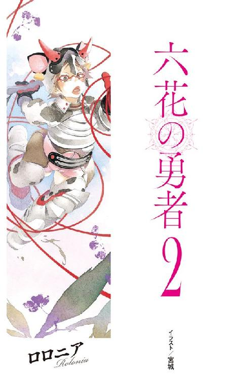
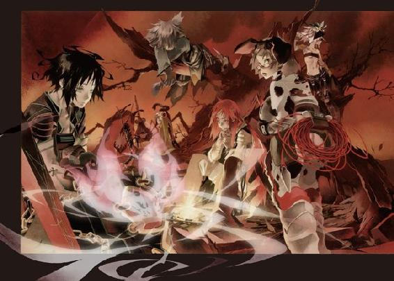
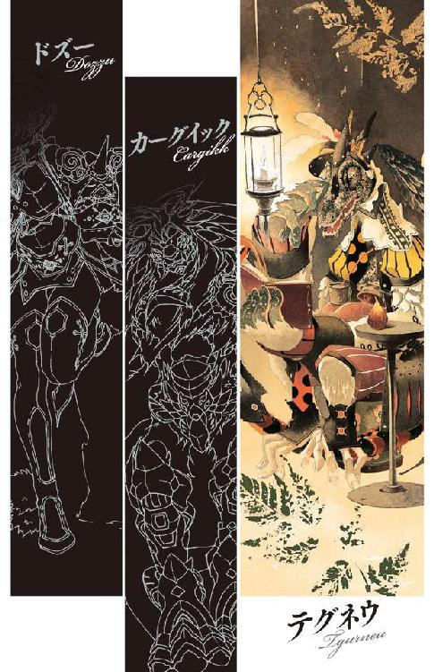
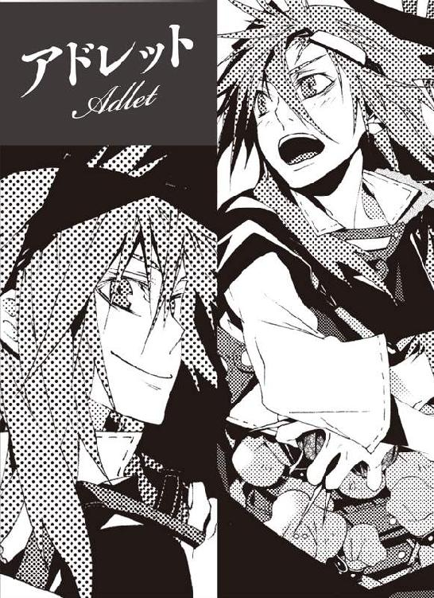
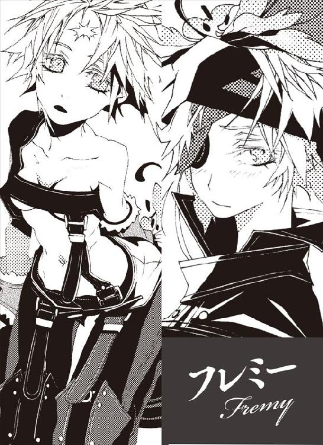
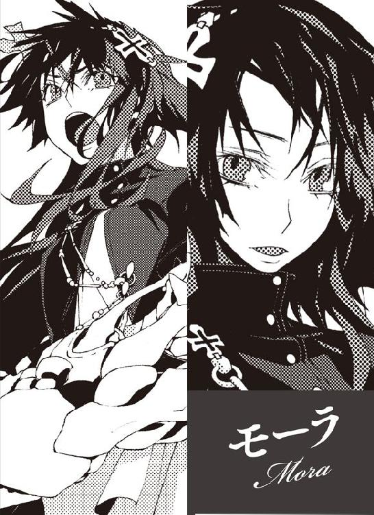
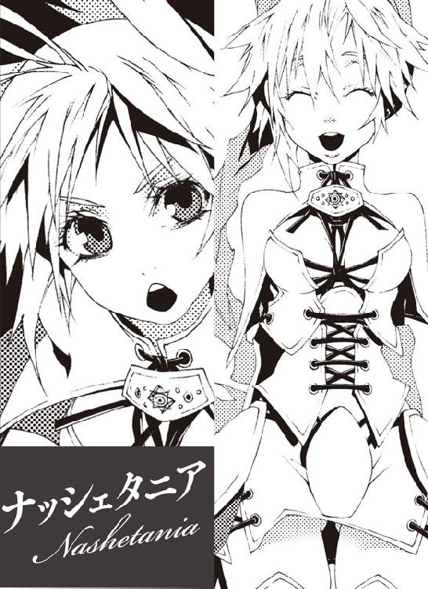
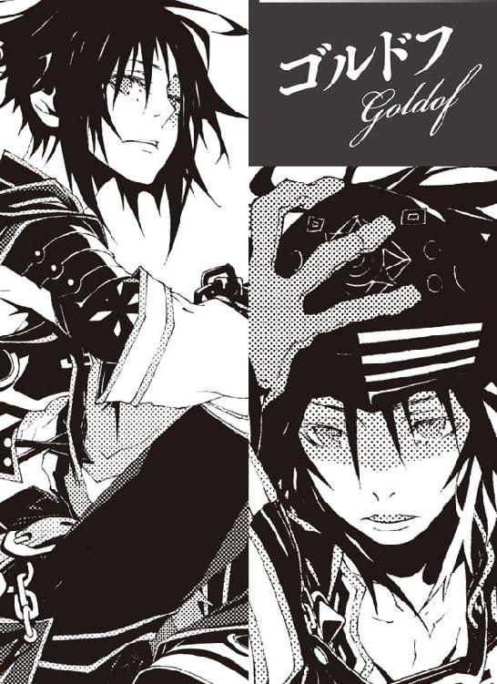
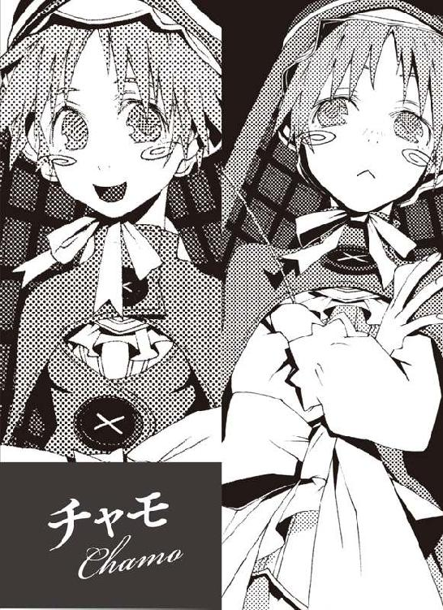
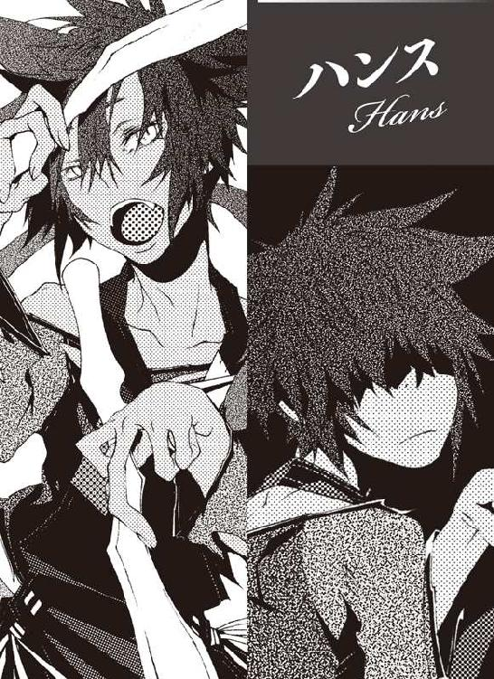

| 六花の勇者 ２ (集英社スーパーダッシュ文庫) | |
| 山形石雄 | |
| (2012) | |

六花の勇者 ２
山形石雄
この本は縦書きでレイアウトされています。
また、ご覧になる機種により、表示の差が認められることがあります。



人物紹介
アドレット
六花の勇者。地上最強の男を自称する少年。
さまざまな秘密道具を駆使して戦う。
フレミー
六花の勇者。他者を寄せつけない冷淡な少女。
銃と爆弾を操る〈火薬〉の聖者。
ハンス
六花の勇者。猫の真似をしながら喋る奇妙な男。
人間離れした独特の剣術を使う。
チャモ
六花の勇者。当代最強の戦士と呼ばれる傲慢な少女。
〈沼〉の聖者。
モーラ
六花の勇者。聖者たちの長を務める生真面目で知的な女性。
〈山〉の聖者。
ゴルドフ
六花の勇者。
槍を操る巨漢の騎士。
ロロニア
新たに現れた六花の勇者。臆病で善良な少女。
〈鮮血〉の聖者。
テグネウ
凶魔を束ねる統率者の一体。
知略に優れ、さまざまな罠を仕掛ける。
あらすじ
闇の底から『魔神』が目覚めるとき、運命の神は六人の勇者を選び出し、世界を救う力を授ける。地上最強を自称する少年アドレットは、その六人、『六花の勇者』に選ばれ、魔神復活を阻止するため、戦いへ向かう。だが、約束の地に集った勇者は、なぜか七人いた。七人のうち誰かひとりが敵であることに気づいた勇者たちは疑心暗鬼に陥るが、アドレットの知略により、「七人目」がナッシェタニアであると暴くことに成功する。しかしそこへ、ロロニアという少女が現れ...!?







イラスト／宮城
プロローグ 殺害
ごつごつとした岩が連なる、乾いた大地をアドレットは走っていた。まばらに生える枯れかかった草を踏みしめながら、ただひたすらに走っていた。
そこは大陸の西端に突き出た半島、魔神と凶魔たちの住まう魔哭領だ。その東部にある、喀血の谷と呼ばれる地にアドレットはいた。
夜である。月明かりの下を彼は進んでいた。道を照らすのは、アドレットが鎧の胸に装着した、光を放つ宝石だけだ。
「急げ！」
走りながらアドレットは叫んだ。彼の後ろに三つの明かりがある。フレミーとチャモ、そしてゴルドフが彼の後をついてくる。
息が切れていた。心臓が高鳴り、唇が震え、足の運びがままならない。それは全力で走っているからではない。今まさに直面している悪夢のような出来事のせいだ。
「ハンス！ ロロニア！ どこにいる！」
アドレットは呼びかける。暗闇の中からは、何の答えも返ってこない。
「死んじまったのか！ ハンス！ ロロニア！ 返事をしろ！」
アドレットは声を張り上げながら、眼前にある崖に飛びついた。小さなくぼみに手足をかけて、瞬く間に崖をよじ登っていく。
その間、ふと自分の手の甲が目に入った。そこには世界を救う勇者の証である、六花の紋章がおぼろげな光を放っている。
六枚の花弁のうち、一枚が欠けていた。それはすなわち、勇者の一人が命を落としたことを意味している。
「ハンス！」
アドレットが崖を蹴って跳躍する。剣を抜きながら崖上に着地して、構えをとる。次の瞬間アドレットは、宝石の光が照らす光景に言葉を失った。
ハンス・ハンプティ。猫の真似をしながら戦う奇妙な暗殺者。六花の紋章を持つ彼が、仰向けに倒れていた。首の動脈が切り裂かれていた。乾いた大地に血が飛び散って、おぞましい模様を作っていた。顔からは、血の気が一切失われていた。
「.........ハンス」
アドレットは剣を落としかけた。目の前の光景が、信じられなかった。ハンスの圧倒的な強さに、頭脳の切れ味に、アドレットは絶対の信頼を置いていた。
「.........間に合わなかったな、アドレット」
そう言ったのは、ハンスから少し離れた場所に立つ一人の女性だ。アドレットに背を向けたまま、モーラ・チェスターが静かな声で言った。
「ハンス、まさか」
フレミーが、ゴルドフが、アドレットに続いて崖を登ってきた。仲間たちが、モーラに武器を向ける。
「状況は説明する必要もないだろう。たった今、わたしがハンスを殺した」
そう言いながらモーラは振り向いた。顔も、胸も、鉄甲を脱いだ両手も全てが血まみれだった。装甲もそこかしこが砕けている。常人ならとうに死んでいる傷だ。
「モーラ、貴様が.........」
「その通り。七人目はわたしなのじゃ」
暗く、疲れ果てたような声だった。モーラは両手を挙げた。そして静かに膝をつき、力なくうなだれた。
その後は誰も声を発することなく、沈黙だけがその場を支配した。
地に膝をついたモーラ。言葉を失ったアドレット、その後ろのフレミー、チャモ、ゴルドフ。この場には彼らの他に、六花の紋章を持つ者がもう一人いた。彼女はハンスの傍らに座っていた。
「.........ロロニア」
アドレットは呼びかけた。彼女の名は、ロロニア・マンチェッタ。血液を操る〈鮮血〉の聖者にして、六花の紋章を持って現れた八人目の人物である。
眼鏡をかけた丸顔の少女だ。気弱そうな顔つき、体格も小柄で、優秀な戦士には到底見えない。重い鎧を着こみ、腰に長い鞭を携えていなければ、そこらの村娘に見える。
ロロニアはハンスの胸と喉に手を当てていた。その掌がぼんやりと光っている。
「なぜハンスが負けたんだ」
アドレットの問いかけに、ロロニアは何も答えない。その目はただハンスの体に向けられている。
「ロロニア答えろ！ なぜハンスが死んでいる！ 何があったんだ！」
アドレットはロロニアが何かを呟いていることに気づいた。顔を近づけ、吐息とともに口から洩れている言葉を聞く。
「死なせない.........死なせない.........絶対助けて.........みせる.........」
ロロニアは〈鮮血〉の聖者だ。血液を操り、怪我を治療することもできる。アドレットはロロニアの邪魔をしないようにハンスの手首に触れる。
脈がない。そして冷たくなりつつあった。
アドレットは思った。無理だロロニア、と。血はほとんど体に残っていない。心臓も止まっている。ハンスはもう死んでいるのだ。
「どういうことだ。なぜハンスが死んでいて、お前は無傷なんだ」
アドレットは言った。ロロニアは七人目であるモーラと、なぜ戦っていないのか。それ以上に疑問なのは、モーラは無防備な彼女になぜ攻撃を仕掛けていないのか。
ロロニアはひたすらハンスを助けようとしている。まるで周りで起きていることなど見えていないかのように。
「ロロニア、あなたはハンスと同行していたはず。いったい何をしていたの？」
フレミーがロロニアに話しかけた。しかし彼女の言葉も、ロロニアの耳には届いていない。
「助ける.........助けて、みせる。そうじゃなきゃ.........」
アドレットに聞こえてくるのは、そんな呟きだけだった。
その時チャモがモーラに近づいていった。ぶらぶらといつものやる気のなさそうな歩き方で、のんきな笑顔を浮かべていた。ハンスが死んだことなど気にも留めていないようだった。
「あーあ。猫さん死んじゃったか。残念だなあ」
膝をつくモーラを見下ろしてチャモが言う。
「チャモね、けっこう猫さんのことは好きだったよ。可愛いし、強いし、喋り方面白いし。チャモのことぶん殴ったから最初は嫌いだったけど。一緒に旅するの、ちょっと楽しくなってきてたんだ」
チャモが拳を握り、モーラの顔を殴りつけた。小さな拳は、モーラの顔をかすかに揺らすだけだった。
「絶対に許さない。殺してやる。まともな死に方なんてさせてたまるか！」
激昂するチャモから、モーラは目をそらす。
「殺されてもかまわぬ。すでに覚悟はできている」
「へえ。おばちゃん覚悟しちゃったんだ。チャモとっても残念だよ」
「だが、その前に真実を語る時間をくれ」
もう一度拳を振り上げるチャモ。その手をフレミーが摑んで止めた。
「話して、モーラ。なるべくなら手短に。話し終えたら殺すから」
フレミーの目にも静かな怒りが宿っている。モーラはうなだれたまま語りだした。
「わたしは望んでこうしたわけではない。殺したくなかった。ハンスのことも、誰のこともだ」
「なんだと？」
「だがわたしは、殺す他にどうすることもできなかった。ハンスを殺す以外の道は全て閉ざされた」
モーラの目から一粒涙が落ちた。
「わたしは、世界を守りたかった。お前たちとともに凶魔を倒し、魔神の復活を阻みたかった」
「信じられないね」
とチャモは言った。しかしアドレットの見解は違った。モーラは噓をついていない。本心から語っていると。
「つい昨日まで、いや、ほんの一時間前まで、わたしはそうするつもりだったのだ」
一章 魔哭領への進攻
モーラ・チェスター。〈山〉の聖者にして、由緒ある万天神殿の当代の長である。
実力は申し分なく、聖者たちからの人望も厚い。その統治は公正にして厳格と評され、後進の指導にも優れた手腕を発揮した。魔神の目覚めが近づくこの時代に、彼女のような神殿長を得られたことは、人類にとって大きな幸運であると人々は語り合った。
そのモーラがなぜ、ハンス・ハンプティを殺したのか。答えの一端は、彼女の人生にある。
モーラは恵まれた人生を送ってきた。
生まれは銀嶺の国だ。裕福な材木商の末娘として生を受け、両親、兄、使用人たちに愛されて育った。
モーラの父は、商売上の守護者でもある〈山〉の神殿と関わりが深く、その縁でモーラは修道女として神殿に入った。彼女が十三歳のときである。
神殿の生活は忙しく窮屈なものだったが、モーラにとっては苦ではなかった。彼女は真面目な性格で、学業にも優れていた。自己を律する能力も、同世代の少女たちより勝っていた。
モーラが十九歳の時、先代の〈山〉の聖者が引退した。次なる聖者には、修道女たちの中からモーラが選ばれた。彼女は数多の修道女の中で最も優秀で、順当な選定であると言われた。
それからモーラはその非凡な素質を開花させていく。三年で、聖者の中で五本の指に入る戦闘力を得た。神殿が所有する領地の経営などでも高い能力を見せた。万天神殿の神殿長に就任したのは二十六歳の時だ。先代の神殿長リウラから指名を受け、七十八名の聖者も四分の三が彼女を推した。
モーラはおおよそ人が手に入れたいと願うもの全てを持っている。人望、名声、地位、権力、さらには富。そしてそれらを持つにふさわしい実力も。
しかしモーラにとって、そのどれもが取るに足りないものである。
神殿長の座は、他に適任者がいないから仕方なく引き受けているに過ぎない。人望や名声もさほど重要なものではない。富は暮らしに困らないだけあればよい。〈山〉の聖者の強大な力も、必要なくなればいつでも捨てられる。
彼女にとって大切なものは他にある。
魔神の目覚めから、三年ほど前のことである。モーラはピエナの神前闘技場にいた。のちにアドレットが大騒動を引き起こす場所だ。
「姫！ 何度言えばわかる！ 何本刃を生み出そうと当たらねば意味がないのじゃ！」
そこにはモーラと、三人の若き聖者がいた。彼女は六花の勇者を目指す後進たちの指導にあたっていた。そのころのモーラにとって、最も重要な仕事だ。
「これならどうです！」
〈刃〉の聖者ナッシェタニアが、次々と地面から刃を生み出す。そして一切の手加減なくモーラを狙う。
見かけこそ派手だが、遅い。そして精度も足りない。モーラは軽々と鉄甲で刃を弾き、ナッシェタニアの懐に潜り込んで拳を入れる。
「有り余る力を制御しきれておらぬ。それでは雑魚は倒せても、強敵には通じぬ。次じゃ！」
「あいよ大将！ 今日こそぎたぎたにしてやるぜ！」
続いて挑みかかってきたのは〈塩〉の聖者ウィロンだ。彼女は殴ったもの全てを塩の塊に変える力を持つ。
一撃必殺の拳も、当たらねば意味がない。大振りで単調な攻撃をモーラは上体の動きだけでかわし、隙をついて足払いを放つ。たたらを踏むウィロンに蹴りを打ち込んで吹き飛ばす。
「攻撃が単調すぎる！ それに遠距離での戦い方を身につけねば成長はない！ 次じゃ！」
「ふええ、やだよう。神殿長は強すぎますよう」
〈火〉の聖者リーンリルの放つ炎が、モーラを襲う。しかしモーラが両手を振るうだけで、炎は吹き散らされ、リーンリルに跳ね返る。
「それが全力か！ 〈火〉の神に祈りをささげ、力を高めるのだ！」
モーラは次、と言おうとした。しかし相手が三人しかいないことを思い出す。〈刃〉のナッシェタニアも、〈塩〉のウィロンも、〈火〉のリーンリルも、倒されたままだ。
「だらしないぞお前たち。三人まとめてかかってこい！」
三人が立ち上がり、モーラに襲いかかる。特訓は三人が身動き一つできなくなるまで続いた。
指導は終わり、時刻は夕方である。モーラは一人、神前闘技場の廊下を歩いていた。ナッシェタニアたち三人の聖者は闘技場から医療所へ向かっている。
ナッシェタニアは恐るべき才能を持っている。三年後にはモーラを超えているだろう。ウィロンにもまだまだ伸び代がある。だがリーンリルの成長は頭打ちかもしれない。引退を命じ、新たな〈火〉の聖者を育てるか、それともリーンリルが一皮むけるのを待つほうが良いか。
どうやって優れた戦士を育てるか、魔神を倒せるまでに成長させるか。モーラは歩きながら様々に思案する。
しかし闘技場を出て、ピエナ王宮の豪華な宮殿を歩いていると、モーラの頭から次第に戦いのことは消えうせていく。迫る魔神との戦いのことも忘れていく。
「シェニーラ、今戻ったぞ。一日いい子にしていたか？」
宮殿の一角にあてがわれた客室の扉を開けると、よちよち歩きの娘がモーラの胸に飛び込んでくる。その時モーラは世界を守る定めを背負う戦士から、ただの母親へと変わっていた。
「シェニーラ。今日は何をして遊んでいた？」
「おとさんと、すごろくしてた」
「すごろくか。母さんも一緒に遊びたいぞ。おおよしよし、可愛い奴め」
愛する一人娘シェニーラを抱き上げる。また少し重くなったなと、モーラの口元が緩む。
「たかい、たかい」
「甘えんぼうさんじゃな、シェニーラは」
娘をあやしていると、客室の奥から髪に白髪の混じった壮年の男性が歩いてきた。
「まったく、君はシェニーラがいると別人になってしまうね」
男性の名はガンナ・チェスター。十二歳年上の、モーラの夫である。
聖者に独身の義務はない。七十八人の聖者の半分近くが家庭を持っている。聖者候補である修道女も、恋人や夫がいるものは珍しくない。モーラがガンナと結婚したのも、〈山〉の聖者の力を受け継ぐ前のことだった。
「シェニーラ、母さんは疲れている。こっちに来なさい」
ガンナはシェニーラを抱き上げる。
「構わぬ構わぬ、この程度。さあシェニーラ、母さんと遊ぼう」
そう言ってモーラはガンナの腕からシェニーラを奪い返す。高く持ち上げられて楽しそうに笑うシェニーラを見て、ガンナは肩をすくめる。
「やれやれ、君のせいでシェニーラが甘えんぼさんに育ってしまったよ」
「何を言うか、甘えんぼさんの何が悪い。ほうらシェニーラ、ぶらんこだぞう」
シェニーラをぶら下げて、優しく左右に揺らすモーラ。夫には悪いが、今は娘と離れる気にはなれない。シェニーラだけが、神殿長という務めの重さを忘れさせてくれる。
結婚して十余年が過ぎ、子供はもう無理かもしれないと諦めかけていた頃、やっと授かった宝物だった。体を壊すこともなく、成長が遅れることもなく、健やかに育ってくれている。
娘が元気でいる。そのことが、どれほどモーラを勇気づけ、戦う力を与えてくれているか。子供を持たない者にはきっと想像もできないだろう。
ガンナは良い夫だ。特別な力は何もなく、知恵も勇気も平凡なものだ。しかし誠実で細やかな愛情を持つ人物だ。モーラの代わりに家庭を守り、時には神殿長の務めも補佐してくれる。彼がいなければ、この激務には到底耐えられないだろう。
「おかさん、もっとぶらんこ、もっとぶらんこ」
モーラが娘の体を大きく振る。甲高い声を出してシェニーラが喜ぶ。その時のモーラの頭には、迫りくる魔神との戦いのことなど完全に消えていた。
かけがえのないものは一つだけ。それは地位でも力でもない。愛する娘と、愛する夫。彼らの他に、大切なものなど何もない。
それは三年前、まだ世界が平穏だった日のことだ。
霧幻結界を管理する小さな神殿の前で、アドレット・マイアは言葉を失っていた。
仲間たちもまた、アドレットと同様、沈黙していた。目の前に立つ一人の少女、ロロニア・マンチェッタを見つめていた。
「あの、どうして七人いるんですか？」
事情を知らないロロニアは、仲間たちを見ながら首をかしげている。
「まさか、こう来るとは思わなかったわ」
フレミーが呟く。
「.........ありえぬ、どういうことだ、なぜまた増えるのだ」
モーラが頭を抱えた。
「え、ええと.........何が増えたんですか？」
ロロニアはおどおどとモーラやアドレットの顔を見つめている。次の瞬間、ようやくアドレットの怪我に気づく。
「アド君、その怪我はどうしたの？ やっぱり、戦いがあったの？ 待ってて、これから治すから」
ロロニアがアドレットの体に手を添えようとする。それをアドレットは押しとどめた。治療を受けている場合ではない。
仲間たちの顔を見渡した。驚愕に言葉を失う者、うんざりとロロニアを見つめる者、反応はさまざまだ。七人目が誰かを表情から読み取ることは、アドレットにはできなかった。
「みんな、どう思う」
アドレットは言った。フレミーが苛立った口調で答える。
「どうもこうもないわ。またふりだしよ」
続いてモーラが言う。
「また足止めか、我々はいつになったらこの森から出られるのじゃ」
事態を呑み込めないロロニアは、ただうろたえている。アドレットとモーラの顔を交互に見つめ、そして突然頭を下げた。
「.........あの.........ご、ごめんなさい！」
「ロロニア、何を謝ってる」
モーラが言う。
「あの.........あたしが遅刻したせいで.........皆さんに迷惑をかけたんじゃないかって.........ごめんなさい、すみません！」
ロロニアは何度も何度も頭を下げる。それを見ながら、昔と変わっていないなとアドレットは思った。
「お前のせいじゃない。たぶんな。頭を上げてくれ」
アドレットが言うと、ロロニアは身を縮ませながら仲間たちを見渡す。
「それで、そいつは何者なんだにゃ？」
とハンスが問う。ロロニアの代わりに、モーラが口を開いた。
「先ほど自己紹介した通りじゃ。〈鮮血〉の聖者ロロニア・マンチェッタ。二年半の間、わたしとともに万天神殿に住んでいた。見た目は頼りないが、実力は折り紙つきじゃ」
「あ.........ありがとうございます」
ロロニアは褒められたことに律儀に礼を言う。
「弱そうなやつだべにゃあ」
とハンスが頭を掻く。
「実力は折り紙つき？ ありえないよ。ロロニアなんてグズでのろまで有名だったじゃん」
続くチャモの言葉に、ロロニアが萎縮する。
「強いかどうかは重要じゃない。問題は、敵か味方かということよ」
フレミーの指は、すでに銃の引き金にかかっている。その目は完全に敵を見る時のものだった。
「あの.........ご、ごめんなさい。あたしが悪かったです、反省していますから、ゆ、許してください！」
ロロニアはひたすら頭を下げる。アドレットはため息をつきながら、殺気立つ仲間たちに言った。
「.........とりあえず、みんな自己紹介しようぜ」
アドレットたちはそれぞれロロニアに名を名乗り、自分の紋章を見せた。
アドレット、モーラ、チャモはもとから知り合いだ。ゴルドフは会ったことはないが互いに名前は知っていたようだ。フレミーは凶魔の娘であることや六花殺しであることは語らず、名前と〈火薬〉の聖者であることのみを告げた。ハンスが殺し屋と名乗ると、ロロニアはかなり驚いた様子だった。
全員の名を聞き、紋章を見て、ロロニアはようやく何が起きているのか理解した。
「ろ、六花の勇者が七人？ どういうことなんですか？」
フレミーが呆れた声で言う。
「説明しないとわからない？」
「.........ごめんなさい」
「この中の誰か一人が偽者なのよ。それはきっと、あなただろうと私は思っている」
フレミーから殺気が放たれた。ロロニアは小動物のような悲鳴を上げて後ずさる。アドレットは二人の間に割って入った。
「待て、フレミー。まだ決まったわけじゃない」
「たしかに決まってはいないわ。だけどそうとしか考えられない。その娘が七人目ではないとしたら、あなたは誰だというの？」
アドレットは言葉に詰まる。ロロニアをかばいながら、ナッシェタニアとの戦いのことを思い出す。
フレミーはあり得ない。彼女がいなければアドレットは死んでいる。ハンスとチャモも同様だ。結果的にナッシェタニアを追い詰めたのは彼らだからだ。
モーラはアドレットを殺すよう仲間たちを煽動していた。しかし彼女も、ナッシェタニアに騙されていたとしか考えられない。ゴルドフはナッシェタニアの配下だ。怪しいと言えば怪しいが、状況を見る限り彼もやはり騙されていたとしか思えない。
「他にいないわ、七人目は」
フレミーが断言する。ハンスとチャモも同じ意見のようだ。
「待て。一つおかしいぞ。ロロニアが七人目だとしたら、なぜナッシェタニアと一緒に来なかった。ナッシェタニアを孤立させる意味はどこにある」
「ナッシェタニア.........まさか姫様に何かあったんですか？」
ロロニアが尋ねる。あいにく説明している暇はない。
「ほんとは一緒に来る予定だったかもしれねえにゃあ。なんかの事情で合流できなかったのかもしれねえだよ」
「どんな事情だ」
「敵さんのことはわからねえだよ」
ハンスが笑いながら肩をすくめる。
「.........アドレット、そこをどいて。危ないから」
フレミーがロロニアに銃口を向ける。アドレットはロロニアを背中でかばう。
「フレミー、銃を下ろせ。ロロニアは七人目ではないぞ」
そう言ったのは、モーラだった。フレミーの視線がそちらに向く。
「先ほども言ったが、わたしは長い間ロロニアとともに万天神殿にいた。ロロニアは誰かを騙すことなどできぬ人間じゃ」
「ナッシェタニアもそんな人じゃないと思われていたわ」
「ロロニアには怪しいそぶりなど一切なかった。凶魔やその手先と接触していたなどありえない」
モーラは前に出て、銃口に身をさらす。撃つなら撃てと言わんばかりだ。
「にゃ。モーラは立場をわかってるだか？ ロロニアの次に怪しいのはおめえだけどにゃあ」
ハンスの言葉に、モーラは表情を曇らせる。
「わたしが疑われるのは仕方がない。だがロロニアは絶対に本物だ」
ロロニアを背中でかばいながら、アドレットは歯嚙みする。
「もうやめろ。これじゃ同じことの繰り返しじゃねえか」
「この中に一人敵がいるのよ。見つけないうちは前に進めないわ」
フレミーとアドレットが睨み合う。そのときチャモが別の方向に目を向けた。
「誰か来たよ」
大陸のほうから、馬のひずめの音が聞こえてきた。黒い豪奢な鎧に身を包んだ騎兵の一団が、神殿に向かって駆けてきた。
「敵かしら」
フレミーが銃口をそちらに向ける。
「違うだ。ありゃあ、グエンバエアの王様だにゃあ」
とハンスが応じる。グエンバエアは、魔哭領に面する国だ。
「ロロニア殿！ 一大事ぞ！ 六花の勇者の皆様はおられたか！」
先頭を走る初老の男が叫んだ。おそらく彼がグエンバエア王だ。霧幻結界を作り出した張本人でもある。グエンバエア王と騎兵の一団は神殿の前に来た。すぐさま下馬し、兜をとって恭しく礼をする。
「グエンバエア王ドルトム三世、および親衛隊一同、霧幻結界の異変を聞き馳せ参じた。我ら全員、皆様のため死力を尽くす所存にて」
威厳を保ちながら礼節を失わない、堂々たる態度だ。さぞ名君なのだろうとアドレットは思った。
「六花の勇者にして〈山〉の聖者モーラ・チェスターじゃ。王のご協力痛み入る。時に一大事とは何が起きたのじゃ？」
七人を代表してモーラが応対する。
「我が国に散らばっていた凶魔どもが、この森に向かって集結しつつあるとの報告が入った。おそらく数時間後にはここに向かって突撃してくるものと思われる」
王の報告に、七人全員に緊張が走った。大陸に凶魔がどれほどいるかはわからないが、最低でも二千はくだらないはずだ。それが一度に攻めてきたら、全滅の可能性すらある。
うかつだったと、アドレットは歯嚙みする。霧幻結界はもともと、大陸にいる凶魔を足止めするためのものだ。それを解除したら、魔哭領に凶魔がなだれ込んでくることになる。
「いったん退いたほうがいいかもしれないわ」
「逃げるなんて嫌だよ。チャモ七人目なんて怖くないもん」
フレミーの言葉にチャモが反論する。
「で、でも、誰が敵かわかりません。それじゃあ凶魔と戦うなんて.........」
「ロロニアよ、チャモの言う通りじゃ。退いて得るものなどない」
怯えるロロニアを、モーラが諭す。
「どっちかというと、このまま進むほうが楽しそうだにゃあ」
「楽しいとはどういうことじゃ？」
「危険は多いほうが楽しいべ？」
そう言ってハンスがにやりと笑う。
意見をぶつけ合う仲間たちを、グエンバエア王と配下たちは、当惑した様子で見つめている。彼らも七人いることに戸惑っているのだ。
「進むのは危険よ。七人目は間違いなく次の罠を用意しているわ」
グエンバエア王たちのことなど意に介さず、仲間たちは議論を続ける。
「どうだべにゃあ。もしかしたら撤退するほうが危険かもしれねえにゃあ」
「どういうこと？」
「ロロニアはおらたちが撤退することを見越して、罠を仕掛けているかもしれねえにゃあ？ まあおらはそっちのほうが楽しいんだけどにゃ」
ハンスとフレミーの論争に、モーラが割り込む。
「先ほども言ったが、ロロニアは絶対に敵ではない」
「黙っていてモーラ。悪いけど、あなたもあまり信頼はできない」
「待ってよ。チャモはフレミーのことも信用できないね。だってフレミーは凶魔だもん」
チャモの指摘に、フレミーがかすかに怒りを見せる。その時アドレットが全員を制するように大声を上げた。
「もうやめろ！ 話し合っても無駄だ！」
全員の目がアドレットに向けられる。
「お互いがお互いを信用できない。こんな状況で何を話したって、まとまるわけがないだろ」
「.........ではどうするのじゃアドレット」
「俺が全て決める。全員何も言わず、俺の言うことに従え」
普通の状況なら反発を招く、傍若無人な提案だ。しかし今はこうするしかないと、アドレットは思う。
「今のところ、間違いなく七人目じゃないと言い切れるのは俺だけだ。だから俺の言うことに従うのが、一番合理的だろう」
ハンスとチャモ、それにフレミーが不満の色を露にする。
「それが一番なのかもしれねえが、どうも不安だべにゃあ」
「忘れたのか？ 俺は地上最強の男だぜ。その俺の判断に、誤りがあるとでも思うのか？」
「思うわ」
「うん」
フレミーとチャモが即答する。
「しかし今はそうするしかないと思うぞ。アドレットの言う通り、このままでは何も決まらぬ」
モーラが言った。ロロニアは何も意見を言わないが、反対ではないようだ。
「ま、仕方ねえべよ。こいつは馬鹿だが、どうしようもねえ馬鹿じゃねえ」
「.........もう少し俺を信用しろよ。俺は地上最強の男なんだぞ」
「にゃー。はいはい」
アドレットの言葉はハンスに軽くあしらわれる。ともあれ、アドレットは判断しなければいけない。進むか、それとも退くか。
「モーラ、一つ聞いておきたい。聖者たちの中に、七人目を見つけられる能力を持った人はいるか？」
答えたのはモーラではなくフレミーだった。
「〈言葉〉の聖者マームアンナという名前を聞いたことがあるわ。噓を見抜き、真実を語らせる能力を持った聖者だと」
確かにその力なら、七人目を見破れる。しかしモーラは首を横に振った。
「だめじゃ。マームアンナは万天神殿にいる。神殿までは、どう急いでも七日はかかる」
それではだめだ。往復に十四日も使っては、魔神を倒す時間がなくなってしまう。それに〈言葉〉の聖者なる人物が今も無事でいる保証もない。
腹をくくるしかない。アドレットはグエンバエア王に向かって言った。
「俺は地上最強の男アドレット・マイアだ。グエンバエア王、状況が理解できないと思うが、俺の言うことに黙って従ってくれ。今から霧幻結界を再発動するためには、どれだけ時間がかかる？」
「立てこもるための水と食料は用意している。すぐにでも可能であるぞ」
「じゃあ、今から三十分後に結界を発動させてくれ。俺たちが魔神を倒すまで、結界を守り切ってほしい。できるか」
「魔神が倒れたら、結界は自動的に解ける仕組みになっている。それまでは何があっても結界を解除せぬ」
アドレットは頷き、仲間たちを見た。
「俺たちは魔哭領に突入する。いいな」
進むことに難色を示していたフレミーだが、異を唱える様子はない。ロロニアも同様だ。
「敵は魔哭領の入り口に戦力を集中させているかもしれない。ぬかるなよ！ 行くぞ！」
アドレットの掛け声とともに、七人は走り出した。そのときロロニアが、アドレットのそばに寄り添ってきた。
「アド君、肩につかまって」
「俺なら大丈夫だ。走るぐらいならできる」
そう返すとロロニアが、アドレットの肩に手を当てた。ロロニアの手がぼんやりと光ると同時に、アドレットの体が熱くなった。
「走りながら手当てするよ。あたしは〈鮮血〉の聖者。怪我の治療は得意なんだよ」
「わかった。頼む」
「アド君、いったい何が起こってるの？ あたしには、全然わからないよ」
それは俺も同じだ、とアドレットは思う。
七人は森を突っ切り、海岸線を走り抜けた。かすかに異臭を放つ、魔哭領の大地に足を踏み入れた。しばらくして、背後で巨大な霧の塊が生み出されているのが見えた。
これでアドレットたちに退路はなくなった。魔神を倒すその時まで、魔哭領の外に出ることはかなわない。だが、それでいいとアドレットは思う。負けは許されぬ戦いだ。退路など、断ってしまうほうがいいのだ。
魔哭領は東端の一部を大陸に接し、北西に伸びる半島である。常人の足なら縦断に五日ほどかかるだろう。
内部の地形は極めて複雑で、その全貌は未だ明らかになっていない。一輪の聖者が残した記録と、過去の六花の勇者が書いた不完全な地図だけが、魔哭領内部の情報を伝えている。
現在、魔哭領に船で上陸するのは、不可能だと言われている。長大な湾岸線の全てが、入り組んだ浅瀬に囲まれ、岸壁は岩の刃で覆われているからだ。凶魔たちは長い時をかけて、半島全体を巨大な要塞へと変えていた。魔哭領に入るには、陸路か、あるいは空を飛ぶ以外に方法がない。
六花の勇者の目的地、魔神の眠る地は、魔哭領の北西の端だ。
その地は一輪の聖者により、落涙郷と名付けられている。
魔神が目を覚ましてから、完全な復活を遂げるまでおよそ三十日。それまでに、六花の勇者が落涙郷までたどり着かなければ世界は終わる。
魔哭領に突入してから半日が過ぎた。アドレットはロロニアに肩を借りながら立っている。腹にじわりと血がにじむのがわかった。ナッシェタニアに貫かれた傷が、また痛み出した。
「アド君、お腹の手当てするよ。力を抜いて」
ロロニアがアドレットの腹に触れた。彼女の血液を操る能力が、アドレットの治癒力を増幅させる。血はすぐに止まった。
アドレットたちがいるのは、魔哭領東部にある渓谷地帯だ。そこは喀血の谷と呼ばれている。かつて一輪の聖者が魔神と戦ったとき、蓄積した疲労のあまり血を吐いたことからその名がついたという。
谷に踏み込むまで、戦闘はなかった。待ち伏せしていると思われた海岸付近に凶魔の姿はなく、あっけなくここまでたどり着いた。複雑に連なる谷を、七人は警戒しながら慎重に進んだ。外からの凶魔の襲撃に備えながら、仲間同士では裏切りや罠の気配はないかを探り合っている。その歩みは遅かった。
谷は不気味なほど静かだった。見張りらしき凶魔を数体、フレミーが狙撃で仕留めただけで、それ以降は敵の姿を見ていない。
現在、フレミーとモーラが先行して状況を探っている。五人は彼らの帰りを待っていた。
「ロロニアは大丈夫なのか？ 真っ青だぞ」
「.........あたしは、だ、だ、大丈夫だよ」
先刻、魔哭領を進みながらアドレットは、ロロニアにナッシェタニアとの戦いの様子を伝えた。ロロニアはナッシェタニアが裏切ったという話を、しばらくの間信じられなかった。アドレットは、フレミーが凶魔の娘であり、六花殺しであることも語った。
ロロニアの顔は青ざめていた。フレミーが殺した勇者候補の一人、〈氷〉の聖者アスレイは彼女の知人だったという。
「フレミーと一緒に戦うのは複雑だってのはわかる。でも今はそれは置いておけ。これ以上、仲間同士で揉めてもしょうがない」
「.........う、うん」
「アドレット」
そこに斥候に出ていたフレミーが戻ってきた。
「ひう！」
フレミーが話しかけると、ロロニアが悲鳴をあげた。話しかけたフレミーのほうが驚いた。
「.........どうしたの、ロロニア」
「なんでも、なんでもありません、大丈夫です」
ロロニアはフレミーを怖がっていた。フレミーだけではない。殺し屋のハンス、暴れ者のチャモ、ナッシェタニアの部下だったゴルドフにも怯えている。まともに話せるのは旧知の仲であるアドレットとモーラだけだ。
この中の一人が敵。恐ろしいのはわかるが、怖がりすぎるのも困る。
「.........凶魔の姿は見えないわ。しばらくは大丈夫。モーラは先に行っているから、追いかけて合流しましょう」
フレミーはそれだけ伝えると、アドレットに背中を向けた。七人はフレミーの後を、ペースを上げて進む。
不意に谷の上で、一つ鳴き声がした。ロロニアがびくっと身を震わせた。アドレットが見上げると鹿が谷を渡っている。
魔哭領には、思いの他動物が多い。魔神が放つ障毒は人間以外の生物には作用しないのだ。凶魔も食べるため以外に動物を襲うことはないという。
「鹿さんだ。かわいいねえ。チャモのペットのほうがもっとかわいいけどね」
チャモが笑う。驚いたのはロロニア一人だけだ。鹿ごときに驚いていては、この先やっていけるのだろうかと不安になる。
「ねえ、牛さん女。そんな弱っちいのにほんとに六花なの？」
チャモが猫じゃらしをぶらぶら揺らしながら言う。
「え、その.........」
「チャモ知ってるよ。ロロニアはなんかの間違いで神様に選ばれた、落ちこぼれ聖者だって。そんなのが六花に選ばれるなんて、チャモ信じられないなあ」
「あの.........」
ロロニアはうつむくばかりだ。
「.........も、もしかしたら、本当は.........違うかもしれないと、思ってます」
何を言ってるんだ、とアドレットは思う。
「チャモね、いらいらしてるんだよ、ロロニアが七人目なら、さっさと自白してほしいな。今謝ってくれれば、チャモ悪いようにはしないよ」
「おい、やめろ」
「.........紋章が浮かび上がった時、あたしが六花なんて信じられなくて.........もしかしたらあたしが選ばれたのは、何かの間違いなのかもって.........」
「じゃあ決まりかな」
そろそろチャモを怒鳴るかとアドレットが思った時、前から声がかかった。
「ロロニアは強いと思うわ」
そう言ったのはフレミーだった。
「モーラがその才能に惚れ込み、自ら英才教育を施した人物だと私は聞いている。ロロニアは万天神殿にいたから、私はモーラに手を出せなかった」
「ふうん。じゃあちょっとは強いのかな」
「あ、ありがとうございますフレミーさん」
「礼を言う必要はないわ。私はあなたを疑っている」
「.........う」
ロロニアはたじろぐ。
「それよりあなたのことを聞きたいわ。あなたについて知っていることは、〈鮮血〉の聖者であることと、相当の実力者らしいこと、それだけよ」
「そうだな。ロロニア、話してくれ」
アドレットは促す。
「聖者になったのは、二年半前です。聖者になる前は使用人をやってました。本当はすぐに聖者をやめるはずだったんですけど、モーラさんの命令で六花の勇者を目指すことになりました。万天神殿で、モーラさんや〈塩〉の聖者ウィロンさんから戦い方を教わりました」
「.........魔神が目覚めてから、ここに来るまでの経緯を教えて」
「は、はい。ええと、魔神が目覚めて六花の紋章を手に入れたときは、黄果の国にある〈火〉の神殿にいました。リーンリルさんと.........あ、リーンリルさんは〈火〉の聖者です.........と一緒に修行をしていました」
「それで？」
「本当はもっと早く着くはずだったんですけど、途中で凶魔に襲われて怪我をした人たちがいて、手当てを頼まれたんです。遅刻したらどうしようって思ったんですが、断りきれなくて.........それで遅くなったんです。すみません」
ロロニアが頭を下げる。
「霧幻結界に着いたときは？」
アドレットが尋ねる。
「森に着いたのは昨日の真夜中でした。その時にはもう、結界が発動していました。それで砦にグエンバエアの王様がいて、王様から結界の話を聞きました。王様が言うには、砦が知らない兵士に乗っ取られてて、なぜか結界も発動していて、状況が全くわからないとのことでした」
「それで朝になって、結界が晴れて合流したんだな」
ロロニアが頷いた。
「今の話、不審な点があるという人はいるか？」
アドレットが聞くとハンスが答えた。
「本当に〈火〉の神殿にいたんだべか」
「後でモーラに確認してみよう。他には、不審なところはないと思うぜ」
「そうだにゃ」
黙って話を聞いていたチャモが言った。
「ねえ、なんでアドレットと知り合いなの？」
ロロニアはアドレットのほうを見た。二人の目が合った。アドレットは頷き、話してもいいと目配せした。
「アド君と会ったのは二年ぐらい前です。アトロ・スパイカーさんってご存知ですか？」
ロロニアが話すのを聞きながら、アドレットは昔のことを思い出した。
あの時は、またロロニアと再会するとは夢にも思っていなかった。最初に出会った時の彼女は、六花に選ばれるような戦士に育つとは到底思えない少女だった。
アドレットは十歳のころ、山奥に暮らす孤高の戦士アトロ・スパイカーの弟子になった。そして八年かけて彼の編み出した闘技と知識、秘密道具の作り方の全てを吸収した。
アトロ・スパイカーの弟子は、アドレット一人であったというわけではない。六花の勇者を目指す若者が何人もアトロに弟子入りしていた。その全員が常軌を逸した訓練についていけず、結局山を去った。ただ一人アドレットを除いて。
それとは別に、アトロは各国の精鋭や名のある傭兵、聖者などから闘技を教えてくれるよう、依頼されることがあった。彼らは大臣や傭兵団長からの紹介状を持って現れ、短期間アトロに弟子入りし、新たな戦術や知識を学んでいった。世捨て人のような生活を送っていたアトロだが、決して世俗との関わりを絶っていたわけではないのだ。
二年と少し前のことだろうか。ロロニア・マンチェッタは紹介状を持ってアトロのもとを訪れた。
その時の彼女は今と変わらない、いや、今以上に臆病で気の弱い少女だった。
「アドレットよ」
山奥で針投げの練習に明け暮れていたアドレットは、突然話しかけられた。師が隣に立っていても構わずに、訓練を続けた。指の肉刺はつぶれ、肉が裂け、血を流しながら針を投げていた。
「この娘はロロニア・マンチェッタ。〈鮮血〉の聖者だ。これから二カ月ほど凶魔の生態とその対処法を教える。邪魔をするな」
アトロはそう言って傍らに立つ少女を指した。アドレットは挨拶も、返事もしなかった。この頃のアドレットは、今とは性格が違った。今よりもずっと暗く、飢えていた。世にあるもの全てを呪い、何よりも自分自身の弱さを憎んでいた。
「名ぐらい名乗れ」
アトロが言う。ロロニアはアトロの陰に隠れながら、怯えた目でアドレットを見ていた。
「アドレット・マイアだ。いずれ地上最強になる男だが、今は違う。俺に話しかけるな」
「は、はい。すいませんでした」
「行くぞロロニア」
アトロがそう言った瞬間、アドレットは動いた。針をアトロに投げ、同時にナイフを抜いてアトロに斬りかかった。
「ひゃあ！」
隣にいたロロニアが悲鳴を上げてへたり込む。
アトロは指一本で針を払いのけるや、アドレットの手首をつかみ、投げ飛ばす。倒れたアドレットはすかさずアトロの足首を狙い、ナイフを振るう。アトロはそれを寸前で避けると、アドレットの顔面に蹴りを叩き込む。アドレットの鼻から血が噴き出した。
「だ、大丈夫ですか、アドレットさん」
「話しかけるなと言っただろう」
そう言ってアドレットは立ち上がろうとする。しかし足がもつれて動かない。
「気にするな〈鮮血〉の聖者よ。そいつはじきにここからいなくなる」
「.........あの、ええと」
「私はそいつに命令を下した。いかなる手段を使っても構わない。十六の誕生日までに、私を倒せなければ、破門するとな。破門まであと一カ月だ」
「.........ぐう」
アトロはアドレットの顔を踏みつけ、言った。
「笑え」
アドレットは唇を動かそうとした。だが、彼は笑うことができなくなっていた。飢えと無力感と絶望が、彼から笑顔すら奪っていた。
アトロは倒れたアドレットに向かって、唾を吐きかけた。
「ゴミめ」
アトロは倒れたアドレットを残し、ロロニアを連れて立ち去っていった。アドレットは地面を殴り、そして絶叫した。
ロロニアはアトロが建てた来客用のコテージに住んだ。山の中で唯一人間らしい暮らしができる場所だ。アトロとアドレットは洞窟で獣のように暮らしている。アトロはつきっきりでロロニアに凶魔の知識を教授し、食事や身の回りの世話をしていた。その間、アドレットは放任だ。
アドレットは毎日のようにアトロに挑み、そして敗れた。そのたびに傷つき、傷の痛みを精神力でねじ伏せて立ち上がる。
彼にはわかっていた。アトロは甘い男ではない。あと一カ月で倒せなければ、本当に破門されるのだと。
まだアドレットはアトロから全てを学んでいない。破門されれば、六花の勇者になる道は閉ざされる。
アドレットの脳裏には、一体の凶魔の姿がこびりついていた。背中に三枚の羽を生やした、二足歩行の凶魔。細いトカゲの顔面に、穏やかな笑みを浮かべて現れたあの凶魔。村を滅ぼし、姉と親友を奪ったあの凶魔。片時も忘れることができない。
アドレットの心を支配するのは、もはや憎しみですらない。あの凶魔を倒さない限り、あの凶魔の死を見ない限り、アドレットは生きていくことすらできないのだ。
ロロニアの存在は、アドレットの心の片隅にもなかった。
ある夜、いつものようにアドレットはアトロに敗れ、洞窟に倒れて泥のように眠っていた。背中に何かが触れた感触がして、アドレットは跳ね起きた。隣にランプを持ったロロニアが座っていた。
「何をしに来た！」
アドレットが怒鳴る。ロロニアは洞窟の隅に飛びのき、がたがたと震え出す。
「あ、あ、あ、アトロ先生があなたの手当てをしろと.........」
「アトロが？」
「あたし、その、〈鮮血〉の聖者で.........人の傷を治せるんです」
「.........頼む」
アドレットは、土の上に身を横たえた。ロロニアが鮮血の神に祈りをささげ、その力を借りた。ロロニアが手を当てると、みるみるうちに傷がふさがっていく。
「人間の血液には、自然に怪我を治す力があるんです。それを増幅させれば、こんな風に傷を治すこともできます」
「すごいもんだな、聖者の力ってのは」
アドレットが言った。ロロニアは少しだけ嬉しそうに頬を赤らめた。
「.........お前も六花の勇者を目指すのか」
「え？」
「聞くまでもないか。戦士なら誰だってそれが目標だ」
するとロロニアは、首を横に振った。
「あの、こういうことを言うと変に思われるかもしれないんですけれど.........」
「なんだ」
「山を下りようと思ってるんです」
「アトロと何かあったのか？」
「違うんです。あの、六花の勇者を目指すのは、もうやめようと思うんです。聖者もやめたほうがいいと思うんです」
アドレットは衝撃を受けた。彼は強くなるために生きてきた。力を得るために、他の全てを捨てた。手に入れた力を手放すなど、彼には考えられないことだった。
「だ、だって、あたし、六花になれるわけない。それにもし、何かの間違いで選ばれたら、みんなに迷惑かけます。だから〈鮮血〉の聖者なんかやめたほうがいいんじゃないかって.........」
「お前はなぜここにいる。強くなりたいんじゃないのか」
「それは.........」
「説明しろ」
アドレットの声には怒りが込められている。ロロニアはおずおずと語り出した。
もともとロロニアは、聖者を目指す修道女ではなかった。〈鮮血〉の神殿で修道女たちの衣服の洗濯などをする下働きだったという。
五カ月ほど前、先代の〈鮮血〉の聖者が引退し、新たな聖者を選ぶ儀式が行われた。選ばれたのは儀式に参加した修道女たちではなく、庭で洗濯物を干していたロロニアだった。
「そんなことがあり得るのか？」
「聖者は神様が選ぶものですから.........神様が何を考えてるのかは、誰にもわかりません」
ロロニアはすぐに聖者をやめようとした。先代の聖者や修道女たちも、それを当然と考えた。しかしそこに聖者を統括する神殿長なる人物から命令が下った。
ロロニアが〈鮮血〉の聖者を続けること。そして、六花の勇者を目指して戦闘訓練を行うこと。万天神殿に居を移し、そこで優れた聖者になるための集中教育を受けること。
「神殿長は、あたしがものすごく強い聖者になるって言うんです。でも、そんなことありえるわけがないし.........何年も修行して弱いままだったら、神殿長にも迷惑がかかるし.........」
ロロニアの話を聞きながら、アドレットの胸にふつふつと憎しみがわいてきた。
「.........俺は、女に生まれたかった。女に生まれていれば聖者になれるからだ」
「え？」
「聖者になれば強くなれる。あいつを倒す力が手に入る。なのに俺は男に生まれた」
アドレットは拳を地面に叩きつけた。
「ふざけるな！」
「あ、う」
「ふざけるな、なんでお前なんかに力が与えられるんだ。なんで俺じゃなくてお前なんだ」
ロロニアの胸ぐらをつかみ、揺さぶった。
「力がほしい。力がほしい！ あいつを倒す力がほしい！ 何と引き換えにしてでもいい、あいつを倒す力がほしい！」
毎日、血反吐を吐きながら思い知る。自分には才能がないという事実を。毎夜、己の無力を呪いながら、泥のように眠りにつく。力がほしい、力がほしいと心の中で繰り返す。
アドレットがどれほど望んでも得られないものを、ロロニアは捨てようとしている。それが許せなかった。
「その力をよこせ。俺によこせ」
「.........で、できません。他人に力を与えるのは、すごく難しい技術で」
「黙れ！ よこせ！ その力をよこせ！」
「できないんです、神殿長も、リウラ様でも無理だったんです。あたしなんかじゃ.........」
「なぜできない！ くれよ！ 誰か俺に力をくれよ！ 俺は強くなりたいんだ！」
アドレットはロロニアから手を離し、地面に突っ伏して泣き始めた。
「.........ご、ごめんなさい、そんなつもりじゃ.........」
嗚咽するアドレットのそばで、ロロニアもまた涙をこぼした。
力を得てしまった少女と、力を得られない少年。二人は洞窟の中で泣き続けた。
夜が明けるころ、アドレットはロロニアに詫びた。辛いのは自分一人じゃない。そんな当たり前のことを、ずっと忘れていた。
ロロニアもまたアドレットに詫びた。アドレットの気持ちもわからず、ひどいことを言ってしまったと。
それから二人は友人になった。ほんの二カ月、すれ違うだけの関係だ。時が過ぎれば忘れてしまう程度の仲だ。それでも彼女は、アドレットが得た数少ない友人だった。
「.........そんな感じです」
ロロニアはアドレットの過去を大幅に割愛しながら話した。アドレットは心の中でロロニアに感謝する。あの頃の自分を思い出すと、恥ずかしいし、気が滅入る。
「お前をアトロのところに弟子入りさせたのは、モーラなのか。アトロと知り合いだったとは知らなかった」
アドレットは言った。
「知り合いではなかったみたいです。でもアトロさんは有名な人ですから」
妙なところで縁があったものだな、とアドレットは思う。
「にゃひひひ。二カ月でずいぶん仲良くなったようだにゃあ。アドレット、おめえ朴念仁のふりして、やるじゃねえか」
「うるせえ」
アドレットはハンスを突き放す。その様子をフレミーが冷たい目で見つめている。そこにモーラが戻ってきた。
「どうだった、モーラ」
「凶魔の姿は見当たらぬ。谷はまるでもぬけの殻であったぞ」
その言葉にアドレットは何の疑念も抱かなかった。事実谷には凶魔の姿はない。彼女の言葉の裏にあるものに、アドレットは気づかなかった。
十分ほど前だ。モーラは周囲を警戒しながら一人谷を歩いていた。谷の複雑な地形は、多くの凶魔を潜ませることはできないが、奇襲には絶好の場所だ。背後を、そして上空を警戒しながら、モーラは進んでいた。
「！」
その時だった。モーラは崖の上に一体の凶魔を見つけた。やや小型の、猿の姿をした凶魔だ。モーラが拳を握り、構えをとった瞬間、凶魔は身を躍らせて目の前に着地した。そして服従するように頭を下げ、四つん這いになった。
「.........何？」
モーラは凶魔の背中を見て、呟いた。その凶魔の背中には、黒いインクで文字が書かれていた。
『モーラに忠告する。君には時間がない』
しばしモーラは、服従のポーズをとる凶魔を見つめていた。そしてその背中を思い切り踏みつぶした。凶魔は一撃で絶命した。まるで取るに足りない、下級の凶魔だ。
「.........」
モーラは何度も凶魔の背中を踏みにじる。背中に書かれた文字が見えなくなるまで。
「時間がないだと.........そんなこと、あるはずが.........」
モーラは呟いた。凶魔の死体一つを残し、モーラはその場から去って行った。
「一体も凶魔と遭遇しなかったってのか.........逆に怖いな」
とアドレットは言った。
「七人目も何もしてこないね。なんか拍子抜けな感じだよ」
チャモが応じる。確かにその通りだ。アドレットは魔哭領に入るや否や、次の罠が待っているものと思っていた。あるいは隙をついて、七人目が仲間たちに襲いかかってくるかもしれないと。あまりにも平穏すぎる。
「何もしてこないんじゃなくて、何もできないのかもしれねえにゃあ」
ハンスが言う。
「どういうことだ？」
「魔哭領に入ってからこっち、フレミーがずっと殺気を出してるだよ。おらたちがほんのちょっとでも妙なことをしたら、すぐ射殺するつもりだべ」
アドレットはフレミーを見た。彼女は否定しない。
「おらあさっきからびくびくしてるだよ。おっかねえ女だべ」
楽しそうにハンスが笑う。
「モーラ、この先には何があった？」
「あと十五分ほどのところに丘が見えた。その向こうに山があったぞ。〈永の蕾〉がある山とみて、間違いない」
それを聞いて、アドレットは頭の中の地図と照らし合わせる。道に迷うことなく、想定通りのルートを進めているようだ。
頭の中の地図が正しければ、山には一輪の聖者が残した遺物がある。〈永の蕾〉と呼ばれるその結界は、貴重な安全地帯だ。アドレットは昼にいったん〈永の蕾〉で休憩を取り、それからさらに奥へ進むつもりでいる。
「提案があるわ。開けた場所に出たら、少し休みましょう」
と、フレミーが言った。
「まだ必要ないぜ。早いうちに山まで.........〈永の蕾〉まで進んでおきたい」
アドレットが言うと、フレミーは首を横に振る。
「話しておきたいことがあるの。できる限り早いうちに。長い話になるし、重要なことだから、落ち着いてじっくり話したいわ」
「何の話だ」
「凶魔の内部事情について」
フレミーがそう言うと、仲間たちに緊張が走った。
「たしか凶魔は、三体の統領によって率いられている、そういう話であったな」
モーラが言った。ナッシェタニアとの戦いや、ロロニアの登場で忘れていた。フレミーの言う通り、極めて重要な話だ。
「〈永の蕾〉で話せばいいんじゃないか？ 丘からさほど距離はないぞ」
「私が敵なら、〈永の蕾〉の辺りには戦力を配置しておくわ。ゆっくり話せるとは思えない」
「そうかもしれないな。開けた場所なら奇襲の心配もない。丘に着いたら話を聞こう」
「そうと決まれば、さっさと行くだよ」
最初にハンスが歩き出す。チャモとモーラがそのあとに続く。ゴルドフが、力のない足取りでついていく。
アドレットが歩き出そうとしたその時、フレミーが袖を引いた。
「どうした」
「.........感じてる？」
「何が」
「いるわ。奴が」
そう言ってフレミーが、空を見上げた。
その瞬間アドレットの脳裏に、忘れもしない凶魔の影が浮かんだ。
怪しい笑みを浮かべながら、和やかに村人と語らいながら、故郷を滅ぼしたあの凶魔。姉を、親友を、アドレットの全てを奪ったあの凶魔。
「.........」
どく、と胸が高鳴った。背中を高揚感が駆け抜けた。殺気を感じたわけでもなく、危機を察したわけでもない。それなのに額に汗が浮かんできた。理屈では語れない感覚が、アドレットを高ぶらせた。
「気配を感じるわ。どこかはわからないけれど、確かにいる。忘れるわけがないわ。この、肌にじわりとまとわりつくような存在感」
アドレットは一昨日の夜のことを思い出した。フレミーは語っていた。かつて自分を産み出すよう命じた凶魔のこと。それは三体いる統率者の一体だということ。その凶魔こそが、アドレットの故郷を滅ぼした凶魔であると。
魂が告げている。奴の存在を。
「行きましょう。さっきも言ったけれど、長い話になるから」
「ひとつだけいいか。そいつの名前は？」
フレミーは空を見上げながら静かに答えた。
「.........テグネウ」
「ねえ。この世に存在する中で、最も強力な力はなんだと思う？」
アドレットがテグネウの名を聞いたのとちょうど同じ時。こんな言葉を呟くものがいた。
「突き詰めて、突き詰めて、突き詰め果てて考えると、やはりそれは愛なんだ」
とある場所に、一体の凶魔がいた。
その凶魔には二本の足と二本の腕があった。大きさは二メートルをいくらか超えたところだ。比較的、小型の凶魔といえるだろう。
胴体は緑の鱗と肌色の鱗がまだら模様を成している。腕と脚には白い羽毛が生えている。しかし掌だけは両生類のような湿った肌をしている。背中には黒く巨大な鳥の羽があり、奇妙なことに二枚の羽の中央に、白鳥のような翼が一枚だけ生えている。そして胸には、両生類のような大きな口があった。
さまざまな動物を雑然と混ぜ合わせたような、奇妙な姿の凶魔だった。その顔はひどく細長い、まさにトカゲのそれである。
凶魔は小さな木の椅子に腰かけている。
「.........私にはよクわかりません」
「そうかい」
凶魔は、手に一冊の本を持っていた。布張りの、金糸で装飾が施された、簡素な本である。それは著名な舞台作家が書いた脚本集だった。凶魔の指がページをめくる。
「おお、ヴィーゼル王子よ呪われよ！ その美しく青き瞳よ！ その瞳を与えた母と父も、その瞳に映るわが身もことごとく呪われよ！」
敵国の王に毒を盛るために忍び込んだ間諜が、その国の王子に恋をする。凶魔が読んでいるのは、そんな舞台の脚本だ。
「なぜ主人公はこう叫ぶのだろうね。先ほどまで愛を語っていたその口で。たかが文字の羅列に過ぎないものが、尽きぬ謎をぼくに投げかける。まことに愛の力は恐ろしいよ」
「.........失礼ながら、お戯レはほどほどに。六花の勇者が近づイています」
「ふふふ、そうだったね。幻想の愛とはひとまず別れ、現実の愛と向き合おう」
凶魔は本を置いた。そしてテーブルに置かれていた大きなイチジクの実を手に取った。
「かつて魔神は敗れた。一輪の聖者の愛ゆえに」
凶魔はイチジクの実をかじり、咀嚼して飲み込んだ。
「ぼくたちは六花の勇者に二度敗れた。彼らを支えた愛の力に。だが三度目の戦いは、今までとは違うものになるだろう」
凶魔は立ち上がった。
「三度目の六花の勇者。君たちは愛ゆえに敗れるのだ」
上を見上げ、凶魔.........テグネウは静かに笑っていた。
十五分後、アドレットたちは丘の頂上にたどり着いた。
モーラの言う通り、この場所なら奇襲の心配はない。もし敵が現れても、丘を登っている間に迎撃の態勢を整えられる。今のところ、周囲の谷にも、空にも凶魔の気配はなかった。
アドレットはほっと息を吐き、背中の鉄箱を下ろした。革鎧を外し、傷の様子を見る。モーラの薬とロロニアの治療で、傷はほぼふさがっている。夜には全快するだろう。
「なんか、何にもしてねえのに疲れただにゃあ」
ハンスが言った。アドレットも同じ気持ちだった。奇襲を警戒するだけではなく、さまざまな心配事が彼らにはのしかかっている。
未だ姿を見せない凶魔たち。正体の見えない七人目の存在。それだけではない。
剣呑な殺気を放つフレミー。いつ暴れだすかわからないチャモ。戸惑い怯えるばかりのロロニア。不安要素は仲間たちにもある。
そして、最も心配なのが彼だ。
「.........大丈夫かゴルドフ」
アドレットはゴルドフに話しかけた。ゴルドフは何も答えず、座り込んでいた。その目はうつろだった。唇を固く引き結び、表情はこわばっていた。
ロロニアが現れたときも、魔哭領を進んでいる間も、彼は一言も口を利かずにいた。心ここにあらずといった様子で、宙を見つめていた。
無理もないだろう。愛する姫に裏切られ、嘲笑われた上に見捨てられたのだ。彼の気持ちは察するに余りある。それから一日もたっていないのだから、立ち直れと言っても無理がある。
天才騎士と謳われる彼も、まだ十六歳だ。
「ゴルドフ。無理な相談かもしれねえが、気持ちを切り替えてくれ」
アドレットがゴルドフに語りかける。返事どころか、声すら耳に届いていないかのようだ。
「あんな女さっさと忘れるだにゃあ。帰った後のことを考えてみろ。どんな美人もより取り見取りだべにゃ。おめえはツラも出自も良いんだから、女なんて黙ってても寄ってくるだよ」
ハンスの言葉には反応もしない。
「ここまで惚れてたのか？ ナッシェタニアに」
「中身はともかく顔は良いからにゃあ。ちらっと見た限りじゃ、乳もかなりのもんだべ」
「.........そういう問題じゃねえと思うがな」
アドレットはため息をつく。そして静かに、腰の袋から針を抜いた。音も立てずにそれをゴルドフの顔面に投げた。
「！」
ゴルドフは二本の指で飛んできた針をつまんだ。そして針をアドレットに投げ返した。顔は地面に向けられたままで、針を見てもいなかった。
「心がへし折れても、戦う力は失ってないらしいな。こいつも大した奴だぜ」
アドレットは笑うが、ゴルドフは無表情のままだ。
その時、モーラがアドレットを手招きした。そばに近づき、話を聞く。
「アドレットよ。七人目はおそらくゴルドフじゃ。何か手を打つべきではないか」
「.........怪しいとは思うが、決まったわけじゃねえだろ」
「わたしには、もはやゴルドフ以外に考えられんのだ。わたしではない。ロロニアでもない。お前でもない。ハンスとチャモがナッシェタニアを倒したのだから、彼らも違う。フレミーが七人目であれば、お前を助ける理由がない。となるとゴルドフしかおらぬのだ」
「モーラ。やめろ」
アドレットは小さく、しかし力を込めて言う。
「一番怖いのは、七人目の存在じゃない。無実の仲間に濡れ衣を着せることだ。推測でものを言うんじゃねえ」
「しかし」
「いいかしら。話がしたいのだけれど」
モーラとアドレットのやりとりをフレミーの声が遮った。
「心配するな、七人目は俺が見つける。安心して待っていろ。俺は地上最強の男だぜ」
そう言ってアドレットは笑った。
「不安じゃが.........わかった。お前を信じると決めたのだ」
「それでいい。黙って俺についてこい」
六人はフレミーを囲んで腰を下ろした。全員が奇襲に備えて、武器を手元に置いている。
凶魔の内部事情を人間が聞くのは、おそらくこれが史上初だろう。長い間、知ることはおろか探ることもできなかったのだ。
ひょっとしたらフレミーの存在は、六花の勇者の最大の優位点かもしれない。敵を知ることは、戦いの趨勢を大きく変える。
「何度か言ったけれど、凶魔は三体の統領に率いられているわ。名はそれぞれ、カーグイック、テグネウ、ドズー」
フレミーは静かに語りだした。彼女の言葉は端的でわかりやすい。
「凶魔の七割は、動物並みの知能しかない下等生物よ。残る三割も、ほとんどは知能はあっても複雑な感情はない。ただ人間を殺すことしか考えられない存在よ。
でもこの三体は違う。自らの意志を持ち、感情を持ち、そして理念や美意識を持っている。そして凶魔を率いるに足る実力もね。私を除く全ての凶魔は、この三体の誰かに絶対の忠誠を誓っているわ。彼らの命令一つで、命すら簡単に捨てるほどに」
「どのくらい強いんだ」
「はっきりしたことはわからない。だけど三体とも、一対一で勝ち目のある相手とは思わないほうがいいわ」
一対一では間違っても勝てない相手が三体。六花の勇者がいかに不利な状況にあるかよくわかる。
「けれどもこの三体を倒せば、私たちは勝ったも同然よ。彼ら以外には凶魔を率いることができない。凶魔たちは命令系統を失い、烏合の衆になる。各個撃破するのも、無視して落涙郷を目指すのも、思いのままよ」
「なるほど」
「ここからが重要なところよ。この三体は歩調を合わせていない。それどころか、鋭く対立していると言っていいわ」
驚くべき内情だった。相槌を打つ暇も与えず、フレミーは喋り続ける。
「三体の中で最強と思われるのはカーグイック。焔毒を操る獅子の姿をした凶魔。彼が放つ炎は人間の体程度は簡単に焼き尽くす。そして炎が発する煙は強力な毒でもある。恐るべき敵よ」
「チャモとどっちが強い」
「わからない。どちらも私が太刀打ちできないことには変わりがないから。
カーグイックは、凶魔全体のおおよそ六割を率いているわ。その大半は魔神の眠る落涙郷の周囲に集まって、迎撃態勢を敷いている。おそらくカーグイックはそこから動かない。徹底的に守りに徹するつもりだと思うわ」
「一番厄介なタイプだな」
アドレットが言った。単純なやり方だが、最も効果的だ。戦力で劣る六花側としては、何とか敵を分散させたいのだが。
「次が......テグネウ。彼については、少しだけ話しにくいわ」
それまで淡々と話していたフレミーが、不意に口ごもった。その名を聞いた瞬間、またアドレットの心臓が高鳴る。
「私にとってテグネウは、半年前まで世界で最も大切な存在だった」
「今は？」
モーラが尋ねる。
「.........最も憎い存在よ。話を続けるわ。テグネウは凶魔の四割ほどを率いている。私を作った張本人であり、私に六花殺しを命じた凶魔でもある」
引っかかる点があったが、何も言わずフレミーが語るに任せた。
「テグネウは混成型の凶魔よ。何体もの凶魔が融合することで力を手に入れている。戦い方は単純で、圧倒的な膂力と素早さ、頑丈さで敵を打ち砕く。あれの拳で砕けないものはないと思っていいわ。だけどそれよりもさらに恐ろしいのは、テグネウの知略よ」
「知略？」
「私を作ったのは、彼の策のほんの一部に過ぎない。彼が張り巡らせた策の全貌は、正直見当もつかないわ。ナッシェタニアを、そしてここにいる七人目を送り込んだのはテグネウだと、私は確信している」
「一国の姫が、凶魔の手中に落ちたのか.........今なお信じられぬ」
モーラが呟く。
「十分にあり得る話よ。私が産まれるはるか昔から、テグネウは人間の世界に手を伸ばしていた。変形型の凶魔や隠密行動に長けた凶魔、催眠術を操る凶魔を使って情報を集め、工作を仕掛けていた。彼の手が人間の世界のどこまで伸びていたかは知らないけれど、一国の中枢に入り込まなければ知りえない情報を平然と察知していたわ」
「.........」
「私はテグネウに作られ、育てられた。彼の指示で力を手に入れ、六花候補を殺し続けた。
私はテグネウを深く尊敬し、同時に恐れてもいた。彼は温かいようでいて、時に冷たさを感じさせた。底の知れない、理解できない方だった」
フレミーは敬語を使ってしまったことに気がついた。
「いいえ、理解できない奴だった」
と急ぎ訂正する。
「おやおや」
とある場所で、テグネウが呟いていた。フレミーが、テグネウについて語っているまさにその時だ。
「フレミーはぼくをそう思っていたのか。理解できない、とは少し悲しい言い方だね。ぼくは君をあんなにかわいがっていたのに」
くすくす、とテグネウが笑う。
フレミーは話し続ける。
「カーグイックとテグネウは対立しているわ。凶魔も主に従って二分されている。テグネウ派の凶魔とカーグイック派の凶魔は、出会っても口も利かないわ。言葉を話せない下級の凶魔たちすら、派閥が違えば牙をむいて威嚇し合うほどよ」
「なぜにゃ？」
「原因はいくつかある。策を重視するテグネウと、正面から戦おうとするカーグイックは端から方針が食い違っている。けれども一番大きいのは、人間との接し方。
人間は利用するためのもの。それがテグネウの思想だった。だけどカーグイックは人間を激しく憎み、深く軽蔑していた。人間などと関わることすら汚らわしいと考えていた。
私を産み出す計画をテグネウが企てたとき、殺し合う一歩手前までいったらしい。誇り高き凶魔の血に、人間の血を混ぜるとは許せない。カーグイックはそう言っていたそうよ」
「ちょっと待ってください」
黙って話を聞いていたロロニアが、手を挙げた。
「あの、凶魔を率いる統領は.........三体いるんじゃ」
アドレットもそこが気になっていた。残る一体の話が全く出てこない。凶魔は六割がカーグイックに率いられ、四割がテグネウに率いられているという。三体目というのは何をしてるのだろうか。
「三体目.........ドズーについてはよくわからないわ。そういう凶魔がいる、としか聞いていないの」
「何者なんだ」
「ドズーは反逆者よ。テグネウやカーグイックと並ぶ力を持つと言われている。二百年前魔神を裏切り、魔哭領から姿を消したと聞いている。どこにいて、何をしているのか全くわからない。テグネウは知っていたかもしれないけれど、私には教えてくれなかった」
「我々の敵なのか？ 味方なのか？」
「それもわからないわ。ともかくテグネウやカーグイックはドズーと、ドズーに従う者を敵視している。テグネウ派の中にも、カーグイック派の中にも、ひそかにドズーに忠誠を誓う凶魔がいるらしいわ。ドズー派の疑惑をかけられて粛清された凶魔も、私が知るだけで二体いる」
「.........にゃにゃあ。派閥だの粛清だの、ドロドロしてるんだべにゃあ」
ハンスがぼやく。
「フレミー。カーグイック派かテグネウ派かは、見ればわかるのか」
アドレットが尋ねる。
「ある程度は。あなたと最初に出会った村で遭遇した凶魔。あれはおそらくカーグイック派だと思う。霧幻結界であなたを陥れた凶魔や、〈太陽〉の聖者リウラを食った凶魔。あれはテグネウ派だった」
「やはり姫はテグネウに操られているのか.........」
モーラが言う。
「その可能性が高いわ」
話はそこで一段落ついた。
「問題は奴らをどう攻略するか、じゃな。特にテグネウを最も危険と見るべきだろう」
まずモーラが口を開いた。
「カーグイックは守るけれど、テグネウは攻めてくると思う。何をしてくるかはわからないけれど」
「テグネウが自ら攻撃してくる可能性は少ないと思うぜ」
アドレットは言った。
「同感よ。テグネウが倒れたら、凶魔の四割が指揮系統を失うわ。カーグイックの指揮下に入るものもいると思うけれど、数は少ないはず。凶魔にとっては大打撃よ。テグネウがそんな危険を冒すとも思えない」
「一つ質問がある。指揮系統を失うというが、テグネウが死んだら具体的に凶魔はどうなるのじゃ？」
「凶魔は主と、見えないつながりで結ばれているわ。テグネウが倒れたら、一瞬で凶魔たちにはそれが伝わるはず。瞬時に大混乱が起こり、恐慌状態になると思うわ」
「それはフレミーにもわかるのか」
「.........たぶん」
フレミーが目を伏せながら言った。
「そうか.........ふむ、テグネウか」
その時アドレットは思った。モーラは妙に、テグネウのことを気にしている。アドレットやフレミーと違い、個人的な因縁があるわけでもないのに。
「七人目を使って、罠を仕掛けてくるんだろうにゃあ」
話題はすぐに移り変わり、アドレットのかすかな疑念は忘れられていった。
「おそらくはね。問題は何をしてくるかよ」
チャモが手を挙げた。
「ねえねえ、チャモ思いついたんだけどいいかな」
「どうせろくなことではないと思うけれど」
フレミーが冷たく言うが、チャモは気にしない。
「人間は六花の紋章がなくちゃ、魔哭領で息ができないんだよね」
六花の紋章は魔哭領の障毒を無効化する。常識だ。
「ここにいる人間は六人。全員がちゃんと息ができてるよね。つまり人間の六人はみんな本物の紋章を持っているってことじゃないかな。となると七人目は、凶魔のフレミーってことだよ」
「やっぱりろくでもなかったわね」
フレミーがため息をつく。
「六花の紋章を持たない人間でも、魔哭領で生きのびることはできるわ。テグネウ派に、特殊な寄生虫を産卵する凶魔がいる。その寄生虫が体の中にいれば、魔哭領の障毒は無効化できるの」
「証拠はある？」
「魔哭領の中央部、断耳の平原と呼ばれている場所。そこに人間の奴隷たちがいるわ」
そう言いながら、フレミーはアドレットのほうをちらりと見た。
「テグネウは人間の奴隷を集めていたわ。なんのためかは知らないけれど。アドレット、あなたの故郷の人たちも、たぶんそこにいるわ」
アドレットは思わず立ち上がった。
消えた故郷の村のこと。そして、連れ去られた人々のことがアドレットの頭に浮かぶ。
「その奴隷たちは.........どうしているんだ？」
「わからない。私はそこに行ったことがないから」
「何か聞いていないのか。どんなことでもいい」
アドレットは食い下がるが、モーラがそれをたしなめる。
「その者たちのことも気がかりだが、魔神を倒すことに集中するべきだろう。彼らを救うことも、生きて人間の世界に帰すことも、魔神を倒さねば不可能じゃ」
その通りだな、とアドレットは思った。だが次の瞬間、アドレットの全身の産毛が逆立った。
チャモが首をかしげる。
「アドレット、何かあったの？」
それらは突然に、全く同時に起こった。
アドレットがチャモを突き飛ばした。フレミーが後ろに転がりながら立ち上がり、銃を抜いた。ハンスは両手両足を地につけ背中を丸めて、猫のような構えをとった。
さっきまでチャモのいた地面が大きく盛り上がり、爆発した。土埃の中から、一体の凶魔が飛び上がった。
「こんにちは」
甲高い、それでいてしゃがれた奇妙な声がした。その声を聞いたとき、いったんは静まったアドレットの胸が、また大きく高鳴った。
「いけないよ君たち。何の話をしているんだい。奴隷のことなんてどうでもいいじゃあないか」
「テグネウ！」
アドレットは叫んだ。血が沸騰するようにたぎった。心が暗い怒りに満たされた。脳裏に張り付いて離れないその姿、何度も夢に見てうなされたその姿。
テグネウが、まさに今、目の前にいる。
「もっとぼくを気にかけろ」
テグネウはアドレットのほうを向き、両手を広げた。まるでかかってこいとでも言うように。
抜く手も見せずに針を放つ。テグネウの両目に激痛の針、両肘に麻痺の針。投げると同時にアドレットはテグネウに向かって跳躍した。
一瞬で決める、とアドレットは思った。八年間の悪夢も、終わるときは一瞬だ。
しかしテグネウには、四本の針が効いていない。腕を数倍の長さに伸ばし、アドレットに殴りかかる。跳躍したアドレットには、回避の方法がない。かろうじて剣で受けたが、吹き飛ばされ、背中から地面に叩きつけられる。
「危ない！」
モーラが横からテグネウを殴りつけた。同時にハンスが地を這うように走り、テグネウの足を狙った。さらにフレミーがテグネウの頭に銃を撃つ。背後からはゴルドフが、槍を脇に挟んで突進し、串刺しにしようとする。
「もらったにゃあ！」
ハンスが叫んだ。地に倒れながら、アドレットは見た。テグネウはモーラの鉄甲を畳んだ腕で受けた。片足を上げてハンスの剣を避け、すかさず蹴りを入れた。さらにもう一方の腕を伸ばしゴルドフの胸を殴って突進を防ぎ、歯でフレミーの銃弾を食い止めた。
「さすがに、ひやりとした」
テグネウが言う。
全員がすぐさまテグネウから距離をとる。アドレットはまさかと思った。この四人の一斉攻撃が防がれた。
「予想していたかい？ ぼくがどんな手を使い、君たちを殺すか。七人目を使って暗殺するか、七人目が君たちを罠の場所に誘導するか、まぁ、どうせそんなところだろう」
テグネウが両手を広げる。隙がない。アドレットは立ち上がるが、剣を構えたまま動けない。
「こういうのはどうだろう。何の策もひねりもなく、正面から戦って全滅させる」
テグネウは笑い、そしてアドレットに向かって走り出した。
二章 モーラの密約
三年前のある日、万天神殿で一つの事件が起きた。
それはモーラがハンスを殺すに至る契機であった。
万天神殿の一角にある、小さな別館。そこはモーラと夫、そして娘のシェニーラが暮らす、ささやかな愛の巣だ。年季の入った建物に、古びた内装、先代の神殿長が使っていたものをそのまま流用している古風な調度品。神に仕える者にふさわしい、質素な造りの館である。
応接室のソファに腰を下ろし、モーラは震える手で顔を押さえていた。ナッシェタニアたちの指導を始めてから、一月後のことだった。
「神殿長.........聞いていますか？」
応接室には三人の人間がいた。一人はモーラ、もう一人は夫のガンナだ。モーラに呼びかけているのは、白い簡素なドレスに身を包んだ、初老の女性である。
彼女の名はトウロウ・メイナス。〈薬〉の聖者である。
その能力は怪我や病を治すことができるのみで、戦闘力はないに等しい。配下の医師たちとともに世界を巡り歩き、救いを求める者に等しく手を差し伸べる偉大な聖者だ。モーラが最も尊敬する人物の一人でもある。
「神殿長.........どうかお気を確かに」
震えるモーラに、トウロウが語りかける。何も答えられない。息が苦しく、目の前が揺れている。ただ姿勢を保つだけで精いっぱいだった。
「申し訳ありません聖者トウロウ。妻は話せる状態ではありません、私が承ります」
ガンナがモーラの手を引き、奥に連れ出そうとする。しかしモーラはその手を離し、またソファに腰を下ろした。
「すまない。もう一度言ってくれ」
「はい、神殿長。シェニーラの病気は.........私には手の施しようがありません」
二週間前、シェニーラは、ひどい胸の痛みを訴えた。胸の中央左寄りに、ムカデのような奇妙な痣が浮かんでいた。見たことのない病気だった。
痛みは日に日に増し、やがてはあまりの痛みに泣き叫ぶようになった。痛みは一向に治まらず、発病から十日後には胸を掻きむしるあまり、爪がはがれるほどの事態になった。
モーラはあらゆる手を尽くした。神殿に常駐する医者に診せ、国一番の名医を呼び、彼女自身も山の精気で癒そうとした。そして遠く離れた地にいたトウロウに手紙を書き、早馬で万天神殿に来るよう要請した。
「.........何が、何が起きているのだ。教えてくれトウロウ」
しかし三日前、トウロウが万天神殿にたどり着くや否や、突然シェニーラの胸の痛みは消えうせた。胸と爪に傷跡があり、ムカデのような痣も残っていたが、他は元気そのものだ。
トウロウは首をかしげながらも、シェニーラの病気を診断した。
痛みは治まったのだから心配ないだろう。そんなモーラの期待は木っ端微塵に砕かれた。
「心臓に奇怪な虫が巣食っています。見たことも聞いたこともない虫です。思いつく限りの薬を試しました。なぜ効果がないのか、全くわかりません。胸に針を刺し、虫に直接薬を流し込むことまでしたのに」
「どうなるのだ、シェニーラは、これからどうなるのだ？」
「.........わかりません」
「頼む。噓だと言ってくれ」
トウロウは首を横に振る。そして顔を押さえ、涙を流した。
「ああ、かわいそうなモーラ。ごめんなさい、許してちょうだい」
トウロウを責める言葉は浮かばなかった。彼女は全力を尽くしたのだ。そして彼女が全力を尽くしてもなお治らないのなら、シェニーラはもう......。
「.........おかさん、おとさん」
その時、応接間のドアがノックされた。扉の向こうからシェニーラの声が聞こえてきた。
「ガンナ、頼む。シェニーラには伝えないでくれ」
「ああ。大丈夫だ」
ガンナも悲しくないはずがない。いや、モーラ以上に衝撃を受けているはずだ。モーラを支えなければならないという義務感だけで、かろうじて平静を保っているのだ。
「シェニーラ。お母さんは大事な話をしている。聖者同士のことだから、シェニーラは聞いちゃだめだ」
扉の向こうで、夫と娘が話している。
「おとさん、あたし、だめなの？」
シェニーラの不安そうな声が聞こえてくる。
「何を言うんだ。もう痛くないんだろう？ トウロウおばさんが、君はもう大丈夫だと言っていたよ」
「なおったの？ むねがへんないろだよ」
「胸の痣もしばらくすれば消えるさ。シェニーラががんばったから治ったんだ。いい子だよシェニーラ」
シェニーラとガンナが廊下の向こうへと歩いていく。残されたモーラは、トウロウが見守る中、静かにすすり泣いていた。
それからトウロウはいくつもの薬を置いて万天神殿を去った。モーラは引き留めようとしたが、ガンナに止められた。彼女がいてもできることはない。そして〈薬〉の聖者には、世界中の苦しむ患者を救う義務がある。
それからモーラは、神殿長の職務を夫に預けて、部屋に閉じこもっていた。シェニーラは今度は母さんが病気になってしまったと、不安そうにしていた。
しかし三日後、立ち去ったはずのトウロウから手紙が届いた。手紙の表には『緊急』と書かれ、モーラ以外の誰にも見せないようにと但し書きがしてあった。
人払いをした自室で、モーラは手紙を読んだ。その表情が恐怖に染まり、そして怒りへと変わっていった。
「一体どうしたのさモーラ」
トウロウの手紙を受け取ってから五日後の深夜、モーラの前に一人の聖者が立っていた。場所は万天神殿の応接室ではない。神殿から二日馬車を走らせたところにある、小さな古城だ。
古城の中にも周囲にも、他に人影はない。馬車の御者すら遠ざけている。古城は冷たく静まり返っていた。
「ああだるいわ。お酒飲みたいわ。用件なら早く済ませてよね」
そう言って、彼女は赤く染めた髪を掻き上げる。聖者らしからぬ派手な化粧に豪華なドレス。二日酔いの酒の匂いがモーラのところまで漂ってくる。怠惰な風情を漂わせている美女だ。
彼女の名はマームアンナ・ケインズという。〈言葉〉の聖者である。
「突然呼び出して悪かった。無礼を詫びるぞ」
モーラは頭を下げる。
「前々から一つ聞きたかったんだけどさ、いいかな」
「なんじゃ」
「あんたは何で老けないの？ どうすれば若さを保てるの？」
「野菜を食べることと、夜更かしをしないことじゃな」
「.........参考にならんわ」
どうでもいい、とモーラは思う。
マームアンナは、〈言葉〉の神から力を授かった聖者である。その能力は七十八人の聖者の中でも異端と言っていいだろう。戦闘能力は皆無だが、能力の有用性は極めて高い。
〈言葉〉の聖者の力は噓を禁じること、そして誓いを守らせることだ。マームアンナに対して誓った約束を破ることは許されない。もし約束を破れば、相応の代償を支払うことになる。
代償の支払いから逃れることは絶対にできない。マームアンナが死んだ後も、それは変わらない。いかなる能力を持った聖者でも、そしていかなる能力を持った凶魔でも、〈言葉〉の聖者の力を無効化することはできない。
歴代の〈言葉〉の聖者はその能力を使い、王族や貴族、大商人たちの取引に立ち会ってきた。
「まあ、あたしを呼び出す用件なんて、ろくなもんじゃあないんでしょうね。裏取引でもしようっての？ それとも浮気相手の口封じとか？」
「.........裏取引であろうな。お前には、取引が成立するよう保証を頼みたい。後になって約束を破られては困るのじゃ」
マームアンナはくすりと笑う。
「へえ、裏取引。品行方正なモーラ様がねえ。何の取引か楽しみだわあ」
「わたしの娘が人質に取られた。これから犯人との交渉に向かう」
トウロウの名を騙ってモーラのもとへ届いた手紙。それはシェニーラに寄生虫を植え付けた犯人からの手紙だった。犯人は日時を指定して、この古城へ来るよう要求していた。取引に応じないならば、シェニーラの命はないと付け加えて。
「あらら、シェニーラちゃんさらわれたの。あははっ」
悪意のこもった笑い声をあげるマームアンナ。モーラが睨んでも、マームアンナは動じない。 モーラはマームアンナを促して、古城の奥へと歩き出した。そこに交渉相手がいる。
「ガキなんてこさえるもんじゃないわね。まったくあんなもんの何がいいのかしら」
「産めばわかる。産まねば一生わからん」
「産んでもわからない親ってのも多いもんだけどねえ」
モーラは何も答えない。
「お前とともに、ウィロンを呼んだのじゃがな、間に合わなかった」
「ウィロン？ あんな馬鹿呼んで何するつもりよ」
〈塩〉の聖者ウィロン。一月ほど前に指導した聖者の一人だ。近接戦闘を得意とし、毒や悪しき存在を払う清めの力を使う。
「戦力としては信頼できる。人間としてもな」
「.........ねえ、ひょっとして、やばい相手なの？」
マームアンナの顔が引きつった。
待ち合わせの場所は近づいている。マームアンナは何も感じていないが、モーラにはわかる。向かう先にいる者の気配が。強敵の存在感が。
古城の最奥、王の間らしき場所にたどり着く。そこから奇妙な音が響いてくる。
何かを咀嚼する音だ。人間が物を食う音ではない。獣か、あるいはもっとおぞましいものが立てる音。
乱暴にそして貪欲に、何者かが食事をとっている。
玉座の残骸に、大きな影が腰を下ろしていた。辺りにはごみが散らばっている。小鳥の足と羽、食べかけのイチジクの実、生の麦、蛙の足。
一匹の凶魔が、イノシシの生首にかぶりついていた。モーラたちが見ている前で、瞬く間に凶魔は骨ごと生首を口の中におさめた。
トカゲの顔に、獣の肉体。そして背中には三枚の羽。モーラは彼が手紙の主、テグネウであると直感した。
「こんにちは」
とその凶魔は言った。
「テグネウとやら。ずいぶんと品のない奴じゃのう」
モーラは掌をしゃぶるテグネウを見上げて言った。
「これは失礼。ぼくはひどく大食いな性質でね。食事を抜くとあっという間に餓死してしまう。片付けるから待っていてくれ」
行儀が良いのか悪いのか、テグネウは落ちたごみを拾い始めた。持っていた袋にそれをしまうと、モーラたちに近づいてくる。
「初めましてモーラ。ぼくの名前はテグネウ。偉大なる魔神の、第一の配下さ」
胸に手を当て、恭しく礼をした。人間離れしたその姿で人間臭い動作をとる。たまらなく不気味な光景だった。
「.........あは、あはは、ちょっと驚かせすぎよモーラ」
マームアンナの声が震えている。
「失礼だが、そちらの美しい方はどなたかな？」
テグネウが言う。
「彼女は〈言葉〉の聖者マームアンナじゃ。交渉の立ち会いを依頼した」
「.........一人で来るように伝えたはずだが？」
「一人で行くとは伝えておらぬ」
テグネウは肩をすくめる。そしてマームアンナにもモーラにしたように礼をする。
「まあいいさ。美しい方とお近づきになる機会は、何度あっても困らない」
「.........あは、凶魔に褒められちゃったわ」
テグネウはマームアンナに近づき、手を差し伸べた。何を考えているのか、マームアンナはその手を取り、作法通りの礼をした。
「これより交渉を始めるが、マームアンナ、一つお前に誓ってもらうことがある。今日ここで話すことを誰にも他言するな」
「当たり前でしょ。こんな話、他に漏らしたら大騒ぎだわ」
そう言ってマームアンナは〈言葉〉の聖者の能力を使う。人差し指の先から小さな光球が生まれる。マームアンナはそれに向かって語りかける。
「言葉の神に誓います。今日この場で起きたことを、誰にも言いません。この誓いを破ったら、あたしは死んでも構いません」
光球がマームアンナの胸に飛び込んだ。これで誓いは成立だ。この契約を解除することは、マームアンナ自身にもできない。
「テグネウ、お前にも誓ってもらおうか。人間にも、凶魔にも、魔神にも他言するな。構わぬな」
この場のことが世に漏れたらモーラは終わりだ。万天神殿を追放され、〈山〉の聖者の資格も失うだろう。凶魔と取引した罪人の一家として、夫や娘までもが迫害にさらされるかもしれない。
「いいよ」
意外にも、テグネウはあっさりと承諾した。
「誓わなければ、君は取引を受けてくれないだろう。それじゃあ無駄足になってしまう」
マームアンナが光球を生み出し、テグネウがそれに誓いを立てる。光球がテグネウの胸におさまり、契約が成立した。〈言葉〉の聖者の力は凶魔にも通用する。二百年ほど前、捕らえた凶魔を使って実験を行い、確認された事実だ。
「おやおや、モーラ。君は誓わないのかな？」
「必要か？」
「.........まあいいさ」
テグネウは肩をすくめた。
「では、交渉を始めよう。知っての通りぼくの配下が、一匹の寄生虫を産み出した。それは今、君の娘の心臓に巣食っている。ぼくが自滅の命令を下す以外に、それを取り除く手段はない。
ぼくが一つ指をはじけば、君の娘は地獄の苦しみを味わったのち死に至る。その苦しさの一端は、すでに知っているね」
シェニーラが味わった十日間の地獄。あれはモーラに脅威を与えるためにもたらされたものだったのだ。
めまいを覚えるほどの怒りが湧きあがる。
「だが安心してくれモーラ。ぼくはかわいいシェニーラを殺すことなんて望んじゃいない。君がぼくのお願いを聞いてくれるなら、シェニーラは必ず解放する。ぼくが自滅を命令すれば、一瞬のうちに寄生虫は消滅する」
「要求はなんじゃ」
「決まっているだろう？ ぼくたちの望みはただ一つだ」
テグネウは両手を広げた。下手な役者のように身振り手振りを交えて語りだした。
「来たるべき魔神の目覚め、人類と凶魔の存亡をかけた三度目の戦い。決戦の時はもうそこまで近づいている」
「要求を言え」
「モーラ。君には六花の勇者を殺してほしい」
間髪を容れず、モーラは答えた。
「断る」
テグネウはしばしモーラの顔を見つめていた。
「.........ほう」
「六花の勇者が敗れれば世界が終わる。魔神が完全に復活すれば、娘も夫も殺される。それでは取引の意味がない」
マームアンナが目を丸くしてモーラを見つめている。
「ちょっと、本気なの。シェニーラちゃんを救いに来たんじゃないの？」
モーラは何も答えない。腕を組み、震える手を隠している。
本当は今すぐに、テグネウの足にすがりついて慈悲を乞いたかった。娘の命が助かるなら何でもすると叫びたかった。だがそれでは娘を守れない。世界を守らねば、愛する娘も守れない。
テグネウは静かに考えていた。そして、なぜか突然拍手を始めた。
「いい答えだ、モーラ。君ならそう答えると思っていた」
拍手をやめると、テグネウは笑いながら言った。
「では交渉を続けよう。まだ夜は長い。語り合う時間はたっぷりとある」
そう言ってテグネウは、玉座のそばから、二つの椅子を持ってきた。それをモーラとマームアンナに勧め、自身はがれきに腰を下ろした。
「わかっているよ、モーラ。君は娘を助けるためにここに来た。取引を交わすためにここに来た。ぼくたちは話し合う必要があるんだよ」
モーラはしばらくためらった後、椅子に腰かけた。マームアンナも戸惑いながら、同じように座る。
「他の要求ならば応じるつもりじゃ。わたしの命なら今すぐにでも差し出そう。だが六花の勇者の命を奪うことは絶対にせぬ」
「そうかい。けれどそんなものはいらないね」
テグネウは不気味に笑った。
「断言するよモーラ。ぼくは必ず、君に六花の勇者を殺させる」
向かって来るテグネウを前に、アドレットは思った。考えてもみなかった、と。
地中からの攻撃にも不意を突かれた。だがそれ以上に、敵の統領が単騎で奇襲を仕掛けてくるなど想像もしていなかった。
「おっと忘れていた」
テグネウが急に立ち止まった。
一斉攻撃を退けられた仲間たちが、テグネウを取り囲み、武器を構える。テグネウは全く動じることなく笑いながら言った。
「まあ、焦ってはいけないよ六花の勇者。戦う前にすることがあるじゃないか」
「なんだと？」
「挨拶だよ。人に会ったらこんにちは。別れるときはさようなら。挨拶は明るい暮らしの第一歩だろう？」
テグネウの言っていることが、アドレットにはわからない。意味はわかるが、意図がつかめない。アドレットの隣でハンスがぺこりと頭を下げた。
「こんにちはだにゃあ」
「そうだねハンス。こちらこそこんにちは。じゃあ戦いを始めよう」
テグネウは口を開けて天を仰いだ。声は聞こえないが、何かを叫んでいる。凶魔にしか聞こえない特殊な音波で伝令を発したのだ。
「増援を呼ばれたわ」
フレミーが言った。丘を越えた先、北西の方角からかすかに凶魔たちの声が聞こえてきた。小さな地響きが伝わってくる。アドレットは気がついた。喀血の谷に凶魔の姿がなかったのは、この奇襲のために戦力を集中させていたからだ。
「まずいわアドレット。どうするの？」
フレミーが聞いてくる。
「決まっているだろうが！ この場で奴を討つ！ 一斉攻撃じゃ！」
モーラが叫ぶ。そして余裕ぶった表情で立っているテグネウに突進する。しかし、モーラに続く者はいなかった。
「なぜためらっておる!?」
あわてて立ち止まり、背後に跳躍するモーラ。
「おいでよアドレット。どうしたんだい？ 一緒に殺し合いを楽しもうじゃないか」
にやにやと笑みを浮かべながら、テグネウが一歩アドレットに近づいてくる。
アドレットは迷っていた。じきにここは囲まれる。テグネウは何らかの罠を用意しているかもしれない。さらに七人目がどう動くかもわからない。
普段のアドレットなら、迷わず逃げを選択している場面だ。敵が用意した戦場で戦ってはならない。アドレットはアトロからそう教わっている。
しかしやはりアドレットは、このとき冷静ではなかったのだろう。
「チャモ！ ハンス！ ゴルドフ！ 北西から来る増援を食い止めろ！」
アドレットは叫び、右手で剣を握りしめた。
「フレミーは遠距離から支援しろ！ モーラとロロニア、俺で.........」
腰のベルトから煙幕弾を取り出し、テグネウの足もとに叩きつける。それと同時に煙幕の中に駆け込んでいく。
「テグネウを狩る！」
全員が同時に動き出した。
チャモが猫じゃらしを口に押し込み、従魔と呼ばれる腹の中の凶魔を吐き出す。ハンスとゴルドフが、従魔たちと共に北西に走っていく。
フレミーが後方に跳躍し、銃を構えてテグネウを狙う。彼女の役目は足止めと支援攻撃だ。モーラはテグネウの後ろ側に回り込み、アドレットと挟む形で突撃を仕掛ける。
「そうそう」
テグネウが言った。
「君ならそうすると思っていた」
煙幕の中から伸びてきた腕が、アドレットを狙う。地面に伏せてそれを避ける。追撃を剣で受け止めたものの、その衝撃で腕の骨がしびれる。力も速さも、圧倒的な差がある。煙幕も効果がない。
モーラが鉄甲をテグネウの肩へと振り下ろす。しかし上体を動かすだけでかわされる。しなやかで無駄のない回避は、明らかに格闘術を学んだ動きだった。右、左と次々に拳を叩きつけようとするが、テグネウにはかすりもしない。
「アドレット下がれ！ お前では相手にならん！」
モーラが叫んだ。だがそんなことは初めからわかっていた。正面からではどうあがいても太刀打ちできない。そんな相手と戦うために、アドレットはここまで来た。
二発目の打撃を威力を殺しながら鎧の肩で受け止めた。息が止まり、骨がきしむ。だがその時、左手に隠し持っていた秘密道具をテグネウの腕に叩きつけた。
それは長い鎖のついた手錠である。先端の金具についた棘がテグネウの肉に食い込む。それと同時に頑丈な針金が、一瞬のうちにテグネウの腕に巻きついた。
「むっ」
テグネウが声を上げる。アドレットは剣をおさめ、両手で鎖を握った。そして捕らえたテグネウの左腕を思い切り引いた。バランスを崩したテグネウの顔を、モーラの拳が打ち抜く。
「なるほど、ぼくの動きを封じるつもりか」
テグネウが言うと同時に、とてつもない強さで鎖が引かれた。踏みとどまれないと判断したアドレットはとっさに前方に飛び込んだ。テグネウが左腕を持ち上げると、アドレットの体は釣られた魚のように持ち上がる。
「危ない！」
フレミーが叫んだ。空中に放り出されたアドレットにテグネウの追撃が来る。それを靴のかかとに仕込んだ鉄板でかろうじて受け止める。足首に激痛が走り、小さく嫌な音がした。しかし鎖は放さない。
鎖で左腕を捕らえたとはいえ、大した効果はない。だがそれでも、テグネウの動きは少しだけ鈍る。
わずかな隙をついて、モーラが拳を振るい、フレミーが銃弾を放つ。アドレットとの綱引きに気を取られ、回避動作が遅れる。拳が顔をかすめ、銃弾が肩を貫く。
「放さないでアドレット！」
フレミーがそう言いながら、銃弾を装填する。
「俺は捕縛に徹する！ お前らで仕留めてくれ！」
「良いぞアドレット！ そのまま押さえていろ！」
モーラが鉄甲でテグネウの拳を防ぎ、反撃をしようとしたその瞬間。戦場に人間のものとは思えない金切り声が響き渡った。
「ほざくな腐れ凶魔の肥料にもならねえダニカスが放すんじゃねえぞアドレット！」
アドレットは鎖を引きながら辺りを見渡した。新たな敵かと身構えた。フレミーが声の方向に思わず銃を向けたのが見えた。テグネウまでもが、目を丸くしている。
「臓物見せろ腐れ凶魔引きちぎってやるから臓物見せろ！」
ロロニアが、悪意と殺意を詰め込んだ言葉を、とんでもない早口で一息にまくしたてた。
さっきまで遠巻きに戦いを見つめていた彼女が、腰の鞭をとった。両手で高く掲げて振り回すと、三十メートルはある鉄の鞭が生き物のようにうねった。先端部分は肉眼ではほとんど見えない。
テグネウは上体をそらして鞭をかわす。わずかに先端が胸をかすめた。
その瞬間、テグネウの胸から大量の血が迸った。血液の色は、人間と同じ赤だった。
「ぐ！」
テグネウが初めて漏らす、苦痛の声。
アドレットはロロニアの能力を知っている。鞭には、ロロニア自身の血液が染み込んだ芯が通っている。染み込んだ血液を操作することで、普通の鞭ではありえない動きをさせている。
さらにその鞭は、触れた相手の血液を体外に引きずり出すのだ。
「とんでもねえな」
アドレットは呟いた。ロロニアは成長した。アドレットの予想とはかけ離れた方向に。
「血じゃ済まねえ臓物見せろ切り刻まれて臓物見せろ！」
仲間じゃなかったら逃げ出したくなるような形相で、ロロニアは鞭を振るい続ける。アドレットは必死にテグネウを捕縛する。
テグネウの腕力は圧倒的だ。アドレットとは比べ物にならない。しかしそれでもアドレットは絶妙のタイミングで、テグネウの動きを封じている。鎖を引かれれば力を緩め、力を抜けば逆に引く。鎖による捕縛術は、アトロから伝授された技の一つだ。
テグネウが左腕に食い込んだ金具を外そうとすれば、フレミーが銃撃でそれを阻む。その隙にモーラの連撃が、テグネウの体を吹き飛ばす。
「ぐう！」
ロロニアの鞭がアドレットの耳をかすめた。だが鎖を手放すわけにはいかない。振り回され、地面を転がされながらもテグネウを縛る鎖に食らいつく。ロロニアに、同士討ちを避ける理性が残っていることを願って。
テグネウの体から噴き出た血が、大地を赤く染めている。このまま倒せるか、と思ったその時だった。一発の銃声が戦場に鳴り響いた。それと同時に、ロロニアの鞭が止まった。
「！」
フレミーがロロニアに向けて銃を撃った。命中してはいない。銃弾はロロニアの眼前を素通りしただけだった。
「何をするフレミー！」
アドレットは思わず叫んだ。フレミーは弾丸を装填しながら言った。
「今、あなたが危なかったわ」
ロロニアは鞭を両手で握りしめ、ぎろりとフレミーのほうを向いた。一瞬同士討ちの危機を感じたが、すぐに殺意の視線をテグネウに向ける。
「おやおや、仲間割れとは穏やかじゃないねえ。一体何が起きてるんだい？」
とぼけた口調でテグネウが言う。テグネウはその隙に左腕の金具を外そうとする。しかしフレミーの銃弾がテグネウの右手を撃ち抜いた。
「アドレット。警戒を解かないで。誰が敵かはわかっていないのよ」
そう言いながらフレミーは銃を構える。アドレットにはわかった。フレミーはテグネウを狙いながらも、ロロニアやモーラにも注意を向けていることを。
「地上最強の俺に援護なんかいらないぜ、テグネウを倒すことに集中しろ」
「その通りじゃフレミー、不用意な行動は慎め」
モーラが言う。しかし彼女もまた、フレミーを警戒しているのが伝わってきた。
アドレットは歯嚙みする。七人目を警戒するフレミーが、仲間たちの足を引っ張っている。しかし用心を怠れば、今度は七人目が何をするかわからない。
誰が敵かわからない。そのやりにくさを、改めてアドレットは実感する。
戦いはしばし、互いに隙を探りあう睨み合いになった。テグネウを束縛するアドレットが正面に立ち、左右からモーラとロロニアが挟み込む。フレミーはテグネウの背後から様子をうかがう。
「殺す殺す殺す殺す殺す」
ロロニアが、じりじりとテグネウに近づいていく。テグネウが突然言った。
「まいったね。しくじったよ。奇襲なんかするんじゃなかった」
反応する者は誰もいない。
「土の中から出てきたら、みんなびっくりすると思ったけど、そのあと袋叩きになるってことを考えていなかったよ」
そう言ってテグネウは笑いだした。
「どうだい？ 今の冗談は面白かった？」
「.........最低じゃな」
とモーラが言う。
「ふむ、これはつまらないのか。人間の冗談は難しい」
テグネウが顎に手を当てた瞬間、わめき声をあげながらロロニアが鞭を振るった。同時にフレミーの銃弾が、テグネウの背中を貫いた。
三人の一斉攻撃が、テグネウを襲う。アドレットは捨て身で鎖にしがみつき、動きを封じ続ける。
戦いは優勢と言っていいだろう。だがテグネウは、余裕の表情を崩さない。
丘の北西に目を向ける。チャモの従魔が陣を敷いて、突進してくる凶魔たちを迎え撃っている。飛行型の凶魔が近づいてくるが、投げつけられたハンスの剣に撃ち落される。ゴルドフが敵の中心に飛び込み、四方八方から襲い来る敵を斬り刻んでいる。守りが破られる気配はない。
ロロニアの鞭を避けながらテグネウが言う。
「いけないよロロニア。下品な言葉は心の品位も低下させるよ」
そして鎖を引きながらアドレットに話しかけてくる。
「この手錠は良くできているね。せっかくだからぼくにくれないか？」
テグネウの体からは大量の血が流れ、全身がずたずたに斬り裂かれている。それでも軽薄な言葉を止めることはしない。
アドレットには理解できない。こいつは何が狙いなのだ。これではただ殺されにやってきたようなものだ。
そのときフレミーがアドレットの後ろに立ち、小さな声で言った。
「.........このまま戦っていても勝てないわ」
アドレットはテグネウを見つめたまま、何も答えない。
「テグネウを倒すには、最低でもこの五倍は攻撃を当てなければならない」
アドレットは衝撃を受けた。優勢だと思っていたが、実は五分五分に過ぎなかったのだ。
「このまま戦い続ければ勝てるかもしれない。だけど、必ずその前に七人目が仕掛けてくる。不意打ちであなたを仕留めにかかるかもしれないし、誤爆を装って攻撃してくるかもしれないわ」
フレミーは北西をちらりと見る。
「あるいはチャモかハンスあたりを狙ってくるかも.........」
モーラとロロニアがじりじりとテグネウとの間を詰めていく。テグネウは笑みを崩さず、敵の攻撃に備えている。
「問題ない。戦闘続行だ」
「.........」
「安心しろ。勝つ方法は、見えている」
アドレットには秘策がある。それはテグネウだけではなく、フレミーやモーラ、ロロニアにも隠している。
アドレットの手の内には、必殺の武器がある。それは左肩の鎧の中に仕込んである。半年前、師であるアトロから受け継いだ最後の秘密道具だ。あらゆる凶魔を一撃で仕留めるその秘密道具を、アトロは自身の最高傑作と呼んでいた。
捕縛に徹しているのは布石に過ぎない。テグネウの警戒をモーラとロロニア、フレミーに集中させる。そして隙ができたところで必殺の一手を撃ち込む。
テグネウの動きが鈍る時、アドレットから注意がそれる時、その瞬間を見逃がさない。アドレットはひたすら、その機会を待っている。
モーラとロロニアが、距離を縮めていく。アドレットも鎖を握りしめたまま飛びかかる機会をうかがう。その時、テグネウが言った。
「一ついいことを教えよう」
虚を突かれた。三人は思わず立ち止まった。
「アドレット、君はこう考えているね。ぼくが一人で戦ってるのは何かの罠かもしれないと。でもそれは違うんだ。ぼくは正面から、君たちを倒しに来た」
「.........こいつの言葉に耳を貸さないで」
フレミーが言う。
「そろそろ本気を出すよ。こちらの切り札を使わせてもらうとしよう」
どういうつもりだ、とアドレットは思った。本当に切り札を使うつもりなら、わざわざ前口上を語る必要はない。何の狙いがあるのか、それともただの余裕なのか。
テグネウの胸に、奇妙な変化が起きた。肉が脈打つようにうごめき、巨大な両生類の口のようなものが形成される。
胸の口にテグネウが右手を突っ込む。その瞬間、アドレットたちは動いていた。ロロニアの鞭が横なぎに首を払い、フレミーの銃弾が胸の口を狙う。だがテグネウは左腕を鎖でつながれたまま、踊るように攻撃を回避する。
「括目したまえ、これがぼくの切り札さ」
テグネウが胸の口から右手を引き抜いた。その手に、大きなイチジクの実が握られていた。テグネウはイチジクの実をかじると、言った。
「.........間違えた」
フレミーの銃弾がテグネウの頭を撃ち抜く。イチジクを握ったまま大きくのけぞる。モーラが左から飛びかかり、脇腹に拳を繰り出す。ロロニアの鞭が肩に当たり、血が噴き出る。テグネウは笑いながら応戦する。
「待って、待ってくれよ。切り札を使わせてくれ」
テグネウを鎖で封じようとしながら、アドレットは不気味な予感を覚えていた。切り札とやらを使わせてはならない。その前に仕留めなければ、まずいことになる。左肩に仕込んだ秘密道具を使う瞬間を探る。
「！」
だがその焦りが、隙を生んだ。左腕の力を抜いたと見せかけて、テグネウは逆に思い切り引っ張った。アドレットがよろけた瞬間、テグネウは鎖を嚙みちぎった。今までとパワーが違う。さっきまでは本気を出していなかったのか。
「しまった！」
テグネウが大きく跳躍し、包囲を抜けた。そして増援のいる北西に向かって走り出した。
恐るべき速さだった。ハンス並みか、それ以上だ。アドレットは投げナイフで牽制するが、テグネウをちょっとの間、止めることすらできない。
「さあて、今度こそ使うとするか」
テグネウがまた、胸の口に手を突っ込むのが見えた。テグネウは、葡萄の実ほどの小さな爆弾をいくつも取り出した。走りながら振りかぶり、それを天高く放り投げた。
丘の端では、ハンスとゴルドフ、そしてチャモが増援を食い止めていた。増援に現れた凶魔の数は、さほど多くはなかった。数にしておよそ三百。凶魔全軍の三十分の一に満たない。
戦いは互角だった。七十体ほどの従魔が数の差をものともせずに押し止めていた。しかし、そこにテグネウが加われば、均衡は一気に破れる。
「ハンス！ ゴルドフ！ テグネウを迎え撃て！」
アドレットは叫んだ。
テグネウが投げた爆弾は、彼らの頭上で爆発した。煙に交じって、きらきらと輝く銀色の粉が従魔たちに降り注いだ。
次の瞬間、何かが焦げるような音がした。そして従魔たちの体から、白い煙が上がった。
「.........え？」
チャモが呟く。従魔たちが悲鳴を上げ、地面をのたうちまわった。
「にゃんだこれ！ あちい」
ハンスが目を押さえている。銀色の粉は、凶魔にも従魔たちやハンスにも同じようにかかっている。しかし凶魔たちが苦しむ様子はない。
「なにこれ！ みんな！ どうしたの！ しっかりして！」
チャモがうろたえ、近くにいた従魔の体にすがりついた。そこに凶魔たちが一斉に攻撃を仕掛ける。さらにテグネウが一直線にチャモに向かって走っていく。
「ハンス！ ゴルドフ！ チャモを守れ！」
アドレットは叫んだ。すぐさま二人はチャモに駆け寄り、襲いかかる凶魔を迎撃する。背後から放たれた銃弾が、テグネウの足を撃ち抜いて動きを止める。
モーラとロロニアがテグネウに追いつき、チャモを守るためにテグネウを攻撃する。
戦いは一気に乱戦になった。チャモの従魔が戦えなくなった今、凶魔たちは四方から仲間たちに襲いかかる。必死にそれらをいなしながら、テグネウの攻撃を防ぐ。
ただチャモだけが、のたうち苦しむ従魔を見ながら立ちすくんでいた。
「チャモ！ しっかりしろ！」
迫る凶魔からチャモを守りながら、アドレットは叫んだ。だがチャモには聞こえていない。周りの状況も見えていない。巨大なナメクジの従魔にすがりつき、体に付いた銀の粉を拭いはじめる。
「なにこれ！ 熱い！ すごく熱い！」
従魔の体を拭うチャモの手からも、煙が上がっている。アドレットは瞬時に理解した。銀の粉が熱を発していると。
アトロから教わったことがある。水に触れると激しい熱を発する金属があると。おそらくテグネウが放った爆弾は、その金属粉をまき散らしたのだ。チャモの従魔は全て水棲型の凶魔だ。熱は致命的な打撃になる。テグネウの切り札は、こちらの最大戦力を潰す武器だった。
アドレットは周囲を見渡した。ロロニアがテグネウと凶魔に囲まれ、集中攻撃を受けている。モーラとフレミーが、どうにか彼女を守っている。
「チャモ！ 従魔を戦わせてくれ！ このままじゃ全滅だ！」
アドレットは叫んだ。
「だめだよ！ みんな怪我してる！ 早く手当しないと死んじゃう！」
チャモがまるでただの子供のように泣きわめく。そして大きく口を開けて叫んだ。
「ううぅ！ みんな！ 戻って！ 戻って！」
銀色の粉にまみれた従魔が、次々とチャモの口に吸い込まれていく。チャモは従魔たちを吸い込むと、苦しそうにうめいた。そして沸騰した白い粘液を吐き出した。腹の中の沼で、従魔たちに付いた銀の粉を洗い流しているのだ。
「みんな戻って！ このままじゃぼろぼろになっちゃうよ！」
次々と従魔が戦場から消えていく。アドレットは思わず叫ぶ。
「チャモ！ 従魔を戻すな！」
「うるさい！」
チャモはまた何体もの従魔を吸い込み、粘液を吐きだす。
「状況を考えろ！ このままじゃ全滅だ！」
「うるさいうるさいうるさい！ そんなことどうだっていい！」
地団太を踏んで叫ぶチャモに、凶魔たちが殺到していく。アドレットは懸命に食い止める。
「チャモのペットが痛がってる！ みんな可愛い子たちなのに、痛い痛いって言ってる！ お前らなんか知ったことか！ チャモのペットが痛がってるんだ！」
全ての従魔が戦場から消え、三百体の凶魔は六花の勇者に襲いかかる。
仲間たちは完全に統制を失っていた。取り囲む凶魔たちを迎え撃つことで精いっぱいになっていた。テグネウは戦いをやめ、距離を置いて戦況を見守っている。
「失策だったねアドレット」
テグネウは言った。
「君たちは逃げるべきだった。戦う準備が整っていないことぐらい、わかっていたはずだ」
「.........くそ！」
向かってくる凶魔を斬り捨て、アドレットはテグネウに剣を向ける。
「やめてアドレット！ 殺されるわ」
フレミーが叫ぶ。彼女も凶魔との戦いに手いっぱいで、アドレットに加勢できない。
「よせ！ お前では相手にならぬ！」
モーラが言う。しかしアドレットはテグネウに向けた剣を下ろさない。
「無茶はよしたほうがいい。逃げることを勧めるよ」
テグネウが笑う。
「.........う、うおおおぉ！」
アドレットは絶叫し、テグネウに向かって駆け出した。端から見れば、激昂して攻撃を仕掛けているようにしか見えないだろう。アドレットではどうあがいても、テグネウには歯が立たない。
だがアドレットには計算があった。無謀に見える突撃は、油断を誘うための演技だ。
テグネウには必ず隙ができる。優勢な時ほど気が緩む。相手が理性を失っているように見えればなおさらだ。
「.........失望した」
テグネウがそう言って、腕を伸ばして手刀を放つ。突撃は簡単に防がれ、アドレットの体は地面を転がる。すぐさま立ち上がり、再度テグネウに突撃していく。
「にゃあ！ 何してやがるだよ！」
ハンスが、アドレットを守ろうと駆け寄ってくる。その瞬間、アドレットはハンスに目配せをした。一瞬だけ、二人の視線が交錯する。
ハンスなら気づくはずだ。アドレットはテグネウの注意を引きつけて、囮になろうとしていることに。そして、彼ならアドレットが望むことをやってくれるはずだ。
テグネウに突き飛ばされ、地面に倒れたアドレット。そこに背後から三体の凶魔が襲いかかる。さらに二体の凶魔が左右から逃げ道を塞ぐ。
立ち上がったアドレットは、周囲の凶魔を無視してテグネウに剣を向ける。
「危ねえ！」
その時ハンスが大きく跳躍して、包囲の中に飛び込んできた。誰もが思うだろう。アドレットは理性を失っている。そしてハンスはアドレットを助けようとしていると。
アドレットは飛び込んできたハンスの体を受け止めた。その途端、ハンスはアドレットの腕を踏み台にして、テグネウに向かって跳躍した。
「！」
テグネウは虚を突かれた。ハンスの剣を防ごうと、防御の体勢をとった。しかしハンスの狙いは攻撃ではない。
「かかっただにゃあ」
ハンスの狙いは、左腕に食い込んだ手錠。そこから伸びる、ちぎれた鎖の先端だ。ハンスは空中で剣をおさめ、鎖を摑む。そして全身の力で鎖を引き、テグネウの左腕を押さえる。
同時にアドレットは足元に煙幕弾を叩きつけていた。取り囲む凶魔たちの動きが止まり、アドレットは一瞬で包囲を抜ける。
テグネウは右腕でハンスを引きはがそうとする。だが駆け込んできたモーラが、テグネウの右腕を捕らえてハンスを守る。
両手を押さえ込まれたテグネウに向かって、アドレットが走る。そして左肩の鎧に仕込まれた秘密道具を抜いた。
それは長さ二十センチほどの釘だった。外見は、何の変哲もないただの釘だ。しかしその釘の先端には、とある聖者の血液が仕込まれている。
聖者の血液が、凶魔にとって毒であることは常識だ。しかし今までそれを武器として活用した者は〈鮮血〉の聖者以外にいなかった。テグネウのような上級の凶魔を倒すためには、およそコップ一杯の血液を流し込まなければいけないからだ。しかしアトロは聖者の血液から、毒となる成分を抽出し、結晶化することに成功した。釘の先端は、その毒の結晶でできている。
この釘を凶魔に突き立てれば、毒は一瞬で全身に回る。解毒することも、体外に毒を排出することも、絶対に不可能だ。
アトロはこれを聖者の釘と名付けていた。アトロ自身が、最高傑作と称した武器だ。
「！」
危機を察したテグネウが、蹴りでアドレットを迎撃しようとする。アドレットは身を伏せてそれを避ける。避けながら、前へ一歩を踏み出す。
聖者の釘を握りしめ、テグネウの懐に潜り込む。
八年前、アドレットはこの凶魔に故郷を奪われた。姉を殺され、親友を失い、そして平穏な人生を喪失した。
この凶魔を倒す。そのためだけに、アドレットは強くなった。
八年間、望み続けた一瞬だった。
アドレットはテグネウの腹に、聖者の釘を深々と突き立てた。
「やったか！」
「狙い通りだべアドレット！」
モーラとハンスが叫び、テグネウから飛びのいた。
ずくん、と音を立てて、テグネウの体が大きく痙攣した。毒が全身に回った証だ。
初期症状は、精神錯乱と全身を襲う激痛だ。続いて平衡感覚の完全な喪失。さらに幻覚と幻聴、記憶障害が現れる。それから五日から十日の間苦しみ抜いた末に、待っているのは確実な死だ。
アドレットはその場に立ったまま、痙攣するテグネウを見つめていた。ひどく落ち着いた、静かな気分だった。
なんだ、あっけないものだったな。そう思った時だった。
「避けろ！」
モーラが叫んだ。同時にアドレットの顔を強烈な衝撃が打ち抜いた。何が起きた、と考える暇もない。アドレットの意識は一瞬で吹き飛んだ。
「アドレット、本当に真面目にやってるのかい」
暗転する視界でアドレットが最後に見たものは、聖者の釘を腹に差したまま、平然と拳を振るうテグネウの姿だった。
モーラは思っていた。テグネウとの決着はついたのだと。アドレットが釘のようなものをテグネウの腹に刺したとき、勝利を摑めたと。テグネウは激しく痙攣し、アドレットは勝利を確信したかのように動きを止めて憐れむようにテグネウを見つめていたからだ。
しかしテグネウは何事も起きていないかのように腕を振るい、アドレットを殴り飛ばした。
「避けろ！」
叫んだところで間に合うはずもない。アドレットの体が宙に舞った。二十メートルも転がって、動かなくなった。
「アドレット！」
フレミーが悲痛な叫び声をあげた。
「.........え？ アド君？」
冒瀆的な言葉をまき散らしながら、凶魔を蹴散らしていたロロニアが、目を見開いた。瞬時に別人に入れ替わったかのように、元の気弱な少女に戻っていた。
倒れたアドレットに止めを刺そうと、凶魔が殺到する。モーラは跳躍し、アドレットの体を担いだ。アドレットの首に触る。骨は折れていない。息はある。
「おや、生きてるか」
腹に釘が刺さったまま、悠々とテグネウが近づいてくる。凶魔たちがその周囲に集結し、テグネウを守る。
戦況は絶望的だ。チャモはもはや戦えず、アドレットも失った。テグネウを倒すどころか、全滅すらありうる。アドレットを抱えたまま、モーラは思った。
切り札を使うしかないと。
「モーラ、まだ戦うつもりか。まあ、当然だろうね」
テグネウを睨みながら、モーラは覚悟を固める。ここで退くわけにはいかない。テグネウを倒す機会を逃すわけにはいかない。
モーラにはテグネウを殺さねばならない理由があるのだ。
覚悟を固めた瞬間、モーラの前に立ちはだかる影があった。ハンスが気絶したアドレットの体を奪い取る。
「モーラ。この場は逃げるだよ。それはまだ使うでねえ」
切り札の存在を、ハンスが知っているはずがない。彼はモーラの表情を見ただけで、彼女が何をしようとしているか理解したのだ。
モーラの切り札。それはテグネウを巻き込んでの自爆だった。
「モーラは、テグネウを押さえろにゃ！ ゴルドフはみんなの荷物を持ってくるだ！ 他は全員逃げるだよ！」
ハンスは叫んだ。殺到する凶魔の間を縫うように走り抜けた。うずくまって粘液を吐いていたチャモの体を担ぎ、二人を抱えたまま目にも留まらない速さで逃げていく。
「放せ馬鹿！ 馬鹿馬鹿馬鹿！ チャモはまだ戦える！」
チャモがハンスの背中を殴りつけるが、意に介さない。
「逃がすとでも？」
テグネウがハンスを追おうとする。モーラがそれに気づき、横合いから殴りつけた。
ハンスの言葉で、モーラは冷静さを取り戻していた。テグネウを殺す機会は、これきりというわけではない。この場は逃げて、態勢を立て直すべきだ。
「モーラ、援護するわ」
フレミーが爆弾を投げてテグネウの周囲の凶魔を蹴散らす。
「逃げる.........逃げるって、どうすれば.........」
おろおろと辺りを見渡しながら、ロロニアは凶魔の攻撃を防いでいる。
「ロロニア！ お前も逃げるのじゃ！ ハンスについていけ！」
モーラが叫ぶと、ロロニアはようやく我に返り、ハンスの背中に向かって走り出す。
丘は完全に取り囲まれている。ロロニアが鞭を振るい、ハンスが蹴りで応戦するが、逃げ道は見つからない。
「全員伏せて！」
フレミーが、そこかしこに無差別に爆弾を投げた。何体もの凶魔がばらばらに砕け、ハンスやロロニアも傷を負う。しかしそれでも、わずかに逃げ道が開けた。
「モーラ！ あなたも逃げて！」
フレミーが銃弾をテグネウに撃ち込んだ。その隙にモーラも敵に背を向け、走り出す。
「山に向かえ！ 〈永の蕾〉まで走るのじゃ！」
モーラたちは包囲を抜け、丘を駆け下りる。仲間たちの荷物を抱えたゴルドフも合流し、一塊になって遠くに見える山へと向かう。
「フレミー、殿は我々だぞ」
走りながらモーラが言った。テグネウはとてつもない勢いで追ってきている。食い止めるのは、モーラとフレミーの仕事だ。
「心配いらないわ。撤退戦は、得意なほうだから」
そう言ってフレミーが銃を握りしめる。
丘を離れ、谷を抜け、モーラたちは逃げ続けた。向かうのは大陸がある東ではない。魔哭領のより深く、西に向かっていた。
撤退戦は、普通の戦闘以上に激しい戦いとなる。最大の難所を受け持っているのは、最後尾を走るモーラだ。テグネウの攻撃を防ぎながら、自分自身も逃げなければならない。
「ぐっ」
またテグネウに追いつかれた。モーラは横に跳躍し、テグネウの拳を避ける。次なる攻撃を鉄甲で受け止める。
そこを助けたのがフレミーだ。後方から、モーラの顔すれすれを通してテグネウを狙う。テグネウがのけぞって避けた隙に、腹を蹴り飛ばして逃げる。フレミーが爆弾をテグネウに投げつけ、動きを止める。
撤退戦は得意だとフレミーは言った。それははったりではなかった。彼女の的確な援護で、モーラは何とか逃走できている。
前方を行く者たちも楽ではない。ハンスたちは何度も、待ち伏せていたり回り込んできた凶魔の攻撃を受けた。それはロロニアが何とか防いでいる。
谷を抜けると、小高い山が見えてくる。ハンスやゴルドフたちはすでに斜面を駆け上っていた。彼らの向かう先には、〈永の蕾〉がある。そこまでたどり着ければ、ひとまずは安全だ。
追手は少しずつ数を減らしている。テグネウは離れずついてきているが、他の凶魔たちは次々と振り切られていく。
「危ない！」
その時だった。テグネウが大きく跳躍し、モーラに組みついてきた。両手でテグネウの両手首を押さえ、互いに力比べの形になる。テグネウの力は圧倒的だ。山の神の力を借りても、数秒耐えるのが精いっぱいだ。
「モーラ！」
そこにフレミーの助けが入った。フレミーが爆弾をテグネウの背後に投げる。爆風でテグネウがよろけ、その隙にモーラはテグネウを投げ飛ばして脱出する。
立ち上がったテグネウが、一瞬顔をしかめた。足の踏ん張りが利かず、かすかによろけた。よく見ればテグネウも傷ついている。モーラとフレミー、ロロニアの攻撃を何度も受けた。効いている様子はなかったが、アドレットの釘のような武器もまだ腹に刺さっている。
「.........テグネウ。そろそろ、引き時だと思うわ」
フレミーが銃口を向けながら言った。おそらく〈永の蕾〉はあと数分の距離。凶魔たちは引き離され、追ってくるものはほとんどいなくなっている。
テグネウは薄く笑い、大きく退いた。
「君が去ってから半年間、ずいぶんと成長したみたいだね。ぼくは嬉しいよ」
フレミーは何も答えない。
「さびしいね、フレミー。積もる話もあるというのに。なあ、今からでもこちらに戻ってこないかい？ 君を裏切ったことはやむを得ないことだったんだ。ぼくは今でもそれを」
テグネウの言葉を、フレミーの銃弾が遮った。顔面に放たれた銃弾を、歯で食い止めている。テグネウは銃弾を吐き捨てて肩をすくめた。
「さっさと消えて」
「君の気持ちはわかっているよフレミー。君は心が揺れるのが怖いんだ。このまま話し続ければ、ぼくに説得されてしまうと思っている。相変わらず、かわいい子だ」
ぎり、とフレミーが歯を嚙みしめた。その様子を、モーラは黙って見つめていた。フレミーの立場は複雑だ。そしてテグネウに抱く思いも、やはり複雑なのだろう。
睨み合う二人を見つめながら、モーラは一時間ほど前のことを思い出した。テグネウの奇襲を受ける前、喀血の谷で遭遇した奇妙な凶魔のことだ。
背中に書いてあった、時間がないという伝言。あれは間違いなく、テグネウのメッセージだ。
「.........」
モーラは時間がないという言葉の意味を尋ねたかった。しかし、フレミーが見ている前で、それを話すことはできない。三年前に彼と交わした密約を、仲間に知られるわけにはいかない。
密約をしたことすら、気取られてはいけないのだ。
「モーラ、もう行きましょう。アドレットが心配よ」
そう言ってじりじりと、フレミーが後ろに下がっていく。テグネウは追うつもりがないようだ。ぶらりと立ったままで動く様子はない。
「君たち、本当にここで戦いを終わらせていいのかい？」
テグネウが言った。フレミーは無視するが、モーラは立ち止まった。
「これがぼくを倒す最後の機会かもしれないんだよ。もしかしたら唯一の機会かもしれない。なぜなら時間がないからだ」
「どういうことじゃ？」
モーラは思わず尋ねた。
「残された時間はあと二日だ。それまでにぼくを倒せなければ、まずいことになる。とてもまずいことになる」
「あと二日？」
モーラの肩を、フレミーが引いた。
「気にしないで。はったりよ。あと二日で本当に何かが起こるなら、正直に言うはずがない」
「.........しかし」
ためらうモーラと、逃げるよう促すフレミー。テグネウはそれを見て、笑いながら手を振った。
「フレミーの忠告通り、今日はこれでおいとましよう。さようなら、六花の勇者。またいずれ」
そう言ってテグネウは身をひるがえし、去って行った。追うことはできない。テグネウの足はモーラより速い。
周囲に敵の気配はない。どうやら本当に、戦いはこれで終わったようだ。モーラは荒い息を吐きながら、テグネウが立ち去った方向を見つめていた。
「ふざけたやつじゃったな。あんなものが、凶魔の統領なのか」
「いつも通りよ。吐き気がするほど」
そう言ってフレミーが、今度はモーラに銃を向けた。モーラはさほど驚かなかった。フレミーが敵だとも思わなかった。敵ならば、テグネウがいるうちに攻撃を仕掛けていたはずだ。
「何をするフレミー」
「モーラ、一つ聞きたいことがあるわ」
その目に込められているのは、殺意ではなく疑念だ。フレミーはモーラが七人目ではないかと疑っている。
「テグネウと何かあったの？」
「.........なぜそう思う」
「時間がない。そう言われた時のあなたの様子が不自然だった」
どく、とモーラの胸が高鳴った。モーラは必死に冷静を装った。そして根も葉もない疑惑を向けられ、困惑しているような表情を作った。
「不自然、か。そのような理由で銃を向けられては、命がいくつあっても足りんぞ」
「はぐらかさないで。きちんと答えて」
「何もない。こういえば満足か？」
モーラはフレミーに近づき、銃口を摑んで下げさせる。
「フレミーよ。七人目の正体を見破ろうとするのは良い。だがあまり殺気をばら撒くな」
何も答えず、モーラの目を見据えるフレミー。
「逆にお前が疑われるぞ。七人目を探すふりをして、本当は仲間を殺す機会を狙っていると。七人目はフレミーだ。言いがかりをつけてわたしを殺そうとした。わたしが仲間たちにそう主張したらどうするつもりじゃ？」
「.........わかったわ」
フレミーが銃をしまった。そして〈永の蕾〉に向かって走り出す。モーラもそのあとに続く。
なんとか論点をすり替えることができた。うまくごまかせただろうか、とモーラは思った。
もともと噓は得意ではない。隠し事をしたことも少ない。モーラは正直を旨として、今までの人生を過ごしてきた。裏表なく誠実に生きることが、幸せを得る最善の道と信じて生きてきた。
「テグネウの言葉ははったりだと思うけれど、具体的に日時を断言したことが気になるわ。あと二日とはどういうことかしら」
「.........わからん」
モーラはテグネウの言葉をはったりだとは思っていない。それどころか、真実と確信していた。なぜならテグネウは、モーラに絶対に噓をつけないからだ。
三年前の出来事を、モーラは思い出す。テグネウと交わした許されざる密約のことを。
人気のない古城で、モーラはがれきの山に座るテグネウと睨み合っていた。そばには不安そうにモーラを見つめるマームアンナがいる。
モーラは迷っていた。シェニーラの命だけは何が何でも助けてみせる。シェニーラはモーラの生きがいだ。いや、モーラの全てと言っていい。だが六花の勇者を殺すこともできない。それは世界に生きる全ての人間への裏切りだ。
どうすれば娘を助けられる。悩むモーラに、テグネウが提案する。
「こちらから譲歩しよう。殺す相手は一人でいい。六人いるうちのたった一人だ。このぐらいなら飲んでもらえるんじゃないかな？」
モーラは何も答えなかった。
「まいったね。これでも駄目なのか？ .........ひどいお母さんだねえ」
とテグネウが言った。モーラの体が怒りに震える。
「そもそも、こちらが約束を果たしたところで、貴様が娘を返すとは思えん」
「.........ふむ」
「人間との約束など、貴様らは平然と破るであろう。貴様が約束を果たす保証がない限り、交渉は何一つ成立せぬ」
モーラが言うと、テグネウはにっこりと笑った。
「その通りだね」
「.........なんだと」
「たしかにぼくは勝利のためなら平気で噓をつく。人間との約束なんて守った覚えがない」
それでは初めから、娘を助けるつもりなどないということか。
「しかしこの場は状況が違う。ぼくは約束を必ず守るってことを君に信じてもらわなきゃいけないんだ。誘拐は信頼の犯罪だ。加害者と被害者の間には、ある種の信頼関係がなければ犯行は成立しない」
「信頼関係、ときたか」
テグネウは隣に座るマームアンナをちらりと見た。
「〈言葉〉の聖者がいてくれて助かった。交渉が成立した暁には、ぼくは〈言葉〉の聖者に誓おう。もしも君との約束を破ったら、このぼくの命を差し出すと」
モーラの心が揺れる。しばらく考えて、答えた。
「ありえぬな」
「.........なぜ」
「凶魔は勝利のためならば、平然と命を捨てる存在じゃ。貴様一人の命など、何の保証になる」
「なるほど、そう来るか」
テグネウは目を閉じ、しばし考えた。
「君の指摘はもっともだ。だがぼくは並の凶魔ではない。数多の凶魔の中でも最強の一角であり、全軍の四割を率いる統領の一人だ。ぼくが死ねば凶魔は指揮系統を失い、取り返しのつかない大打撃を受ける。六花の勇者に勝つために、ぼくは欠くことのできない存在だ」
「.........凶魔の統領、か」
信頼できる言葉だった。向き合っているだけでテグネウは、恐るべき力を持った相手だとわかる。全軍の四割を率いているという言葉も、あながち噓とは思えない。
「そんなぼくの命を保証に差し出そうというのだよ。これは信頼に値する提案だと思うね」
「マームアンナよ、今の言葉の真贋を確かめよ」
モーラが指示を出す。マームアンナは〈言葉〉の神の力を借り、小さな光球を生み出した。光球はテグネウの口に飛び込む。
「先ほどの言葉をもう一度言ってみよ」
「ぼくは凶魔の統領だ。全軍の四割を率いている。ぼくが死ねば凶魔は指揮系統を失い、壊滅的な打撃を受ける。ぼくがいなければ、凶魔は六花の勇者に勝てないだろう」
噓をついていたら、光球は口から吐き出され、マームアンナのところに戻るはずだ。光球は飲みこまれたままだった。
「.........真実よ。テグネウの言葉は」
マームアンナが言った。だがそれでもなお、モーラはテグネウを信用できない。
「まだ信用できないか。じゃあこうしよう。〈言葉〉の聖者に誓う。ぼくは、絶対に君に噓をつかない。もしも噓をついたなら、この核が砕け散っても構わない。ついでに娘も解放すると約束する」
そう言ってテグネウは、人間でいえば心臓のある位置を指さした。
核とは凶魔にとっての脳にあたる部分だ。圧倒的な生命力を誇る凶魔だが、核を壊されたら確実に死ぬ。核は一体の凶魔に必ず一つある。金属のような光沢を持った球形だ。大きいものでは直径五センチほど、小さなものだと小指の先にも満たない。
「特別に見せてあげよう」
テグネウが手で胸を押さえる。胸の肉に亀裂が入り、内臓が露になる。どういう肉体構造をしているのか、血は一滴も出ない。確かにテグネウが示した位置に、核があった。
「さて、信用してくれるかな？」
「.........〈言葉〉の聖者に誓いを立てよ。そうすれば、お前を信用する」
マームアンナが頷き、〈言葉〉の神の力を借りる。光の球が生み出され、テグネウの体に吸い込まれる。
「誓います。ぼくはモーラに噓をつきません。もしもぼくが噓をついたら、この胸の核を粉々に砕いても構いません。そしてシェニーラの胸の寄生虫も同時に殺して構いません」
テグネウの体が輝いた。誓約は成ったのだ。
「これでいいだろう？ やれやれ、やっと交渉を始められる」
そう言ってテグネウは肩をすくめた。
「では再度要求しよう。六花の勇者、その一人を殺してほしい」
「その要求は飲めん。代わりにわたしの命をくれてやる。それで満足するがいい」
モーラは決然と言った。しかしテグネウは首を横に振る。
「断るね。君を倒したところで、別の誰かが六花に選ばれるだけだ」
「アスレイ、ウィロン、あるいはナッシェタニア。わたしの命に加え、いずれ六花に選ばれるであろう聖者の命を一人くれてやる。それならばどうじゃ」
「な！」
叫んだのは、隣で聞いていたマームアンナだった。
「何考えてるのよ！ あんた人殺しになるつもり？」
「聞いてわからんか。そのつもりだ」
「.........まともじゃないわよ」
その通りだ、とモーラは思う。娘を人質に取られた母親が、まともでいられるわけがない。
「だめだ。ぼくがほしいのは六花の勇者の命だけ。候補は何人殺しても、娘は返さない。要求は、六花の勇者を一人殺すこと。それだけだ」
つっぱねるテグネウ。モーラはしかたなく、譲歩する。
「わたしは六花の勇者に選ばれる。そして選ばれたらその時点で命を絶つ。これでどうじゃ」
「.........だめだね」
「なんだと！」
「もし君が六花の勇者に選ばれなかったら、人質を取った意味がない。それに運命の神が自殺する気満々の人間を勇者に選ぶとでも思うのかい？ 要求を変えるつもりはない。六花の勇者を一人殺せ。それだけだ」
モーラとテグネウは長い間睨み合った。テグネウが折れる気配はない。
「わかってるのかな。交渉が成立しなければ、君の娘を生かしておく理由はないんだよ」
「.........」
「残念だ」
テグネウがそう言って立ち上がろうとする。
「待て。条件がある」
交渉が決裂すればシェニーラは死ぬ。そう応えざるを得なかった。
「貴様が死んだ場合は、即座に娘を解放しろ。六花の勇者を殺していなくてもだ」
「.........悪いが、飲めない条件だね。それじゃあ君が全力でぼくを殺しにかかるだけだ」
テグネウは首を横に振る。
「期限を設定しよう。その期限までに、わたしは六花の勇者を一人殺すと約束する。ただしその前に貴様が死ねば、契約は無効じゃ。この条件は絶対に譲らぬぞ」
「.........ふむ」
細い顎に手を当てて、テグネウはしばし考えた。
「その期限はいつまでかな？」
「魔神の目覚めから、二十二日後じゃ。貴様が生きておれば、わたしはその日までに六花の勇者を殺すと約束する」
テグネウは顎に手を当てたまま、しばらく考えた。
「.........妥当だね。わかった。条件を飲もう」
ようやく一つ交渉がまとまった。シェニーラを救う道筋が見えた。
「魔神の目覚めから二十二日。それまでに君は六花の勇者の一人を殺す。ただしその前にぼくが死んだら、契約は無効になり君の娘も解放される。それでいいんだね」
モーラは頷く。
「もう一つ条件を加える。約束の期限が来るまでは、娘に手を出すな」
「それは当然だね。約束しよう。魔神の目覚めから二十二日が過ぎるまで、ぼくの配下の凶魔は君の娘に手を出さない。ぼくが率いる凶魔以外の連中にも、絶対に手を出させない」
なんとか、契約にこぎつけた。シェニーラを助け、なおかつ六花の勇者も殺さずに済む道筋を作れた。魔神復活から二十二日の間に、テグネウを殺せばいいのだ。
「こちらからも二つ、条件を加えたい。もしも君が約束を果たすことが不可能になった場合、娘の命はもらう。つまり六花の勇者を殺す前に君が死んだ場合だ。もう一つは、君が六花の勇者に選ばれた後に自殺することは、約束を果たしたとは認めない」
前半は納得できる要求だ。だが後半は奇妙な提案だとモーラは思った。六花の勇者を一人殺すことが目的なら、モーラが自殺するのでも構わないではないか。
モーラは約束の期限までにテグネウを倒すことを目指す。そしてもしもそれまでに倒せなければ、自ら命を絶ってシェニーラを守るつもりだった。その解決策は封じられた。
ここで粘ることもできる。だが交渉が破談になれば、シェニーラの命は失われる。
「飲もう。その条件を」
「.........契約は成立かな」
「もう一つ確認する。わたしと貴様が相討ちになったらどうなる」
「その時は君の勝ちだ。娘は解放される」
「ならばよい」
モーラはマームアンナを促す。〈言葉〉の聖者に契約の保証をしてもらわなければ、交渉は終われない。
マームアンナの生み出した光球がテグネウの体に飲み込まれる。
「テグネウは誓います。ぼくが命を落とすとき、シェニーラの胸の寄生虫も同時に死なせます。ぼくがモーラと相討ちになった場合でも、寄生虫は死なせます。もしもこの約束を破ったら、ぼくの配下の凶魔、全てが死んでも構いません」
「テグネウ、自分の命以外を代償に捧げる時は、相手の同意がなければいけないのよ」
「そうなのか。じゃあどうしよう」
「これから〈言葉〉の神を通じて、あんたの配下たちの意思を確認するわ。テグネウの命令があれば、命を捨てるかどうかを聞いてみる」
マームアンナは目を閉じ、しばらく黙りこんだ。そして目を開けると言った。
「テグネウの配下は全員が、テグネウの命令ならば死んでも構わないと宣言したわ。契約は有効よ」
テグネウの体が輝いた。これで一つ目の契約が成立した。
「テグネウは誓います。モーラが六花の勇者の一人を殺したとき、ぼくはシェニーラの胸の寄生虫を死なせます。この約束を破ったら、ぼくは死んでも構いません。ただしモーラが自殺した場合は契約は無効とみなします」
「モーラ。この契約に同意する？」
「契約に同意します」
モーラが言うと、また契約が成立する。
「テグネウは誓います。魔神の目覚めから二十二日が過ぎるまで、全ての凶魔はシェニーラに危害を加えません。この約束を破ったら、ぼくは死んでも構いません。
ただしこの約束は、魔神が目覚めてから二十二日が過ぎる前に、モーラが死んだ場合は無効となります」
「.........同意します」
テグネウの体が輝いた。これですべての契約が結ばれた。
話し合いは終わった。モーラは魔神が目を覚まして二十二日が過ぎるまでに、テグネウを倒さなければならない。もしも倒せないならば、六花の勇者を一人殺さなければならない。どちらもできなければ、シェニーラは死ぬ。
「さて、ぼくは魔哭領に帰るとしよう。さようなら、また会おう」
テグネウは立ち上がり、古城の出口へと歩きだす。モーラはその瞬間、椅子を蹴って立ち上がり、殴りかかった。
「おっと」
必殺の拳を、テグネウが受け止める。追撃を放とうとした瞬間、テグネウは身をひるがえして窓から飛び出た。モーラは追いかけようとするが、すぐに夜闇にまぎれて見えなくなる。
「.........モーラ。とんでもないことになったわね。あんた本気で六花の勇者を殺す気なの？」
「まさか。奴を殺して、娘を助ける。それだけじゃ」
夜闇を見つめながら、モーラは思った。交渉は上首尾に終わったと言っていいだろう。シェニーラの安全は確保できた。テグネウさえ倒せれば、六花の勇者を殺さずに済む。ついでに、テグネウの噓を禁じるというおまけまでついてきた。
だが本当にこれで良かったのか、とモーラは思う。テグネウはさらなる罠を用意している。そんな予感がするのだ。
フレミーとともに山を登りながらモーラは考える。
テグネウが言ったのは、シェニーラを救うにはあと二日しかないという意味に間違いないだろう。だがそれはどういうことだ。
あの時、テグネウは契約した。期限は魔神の目覚めから二十二日後までだと。魔神の目覚めから、今日で十三日。まだ九日あるはずなのだ。
〈言葉〉の聖者に誓った言葉は、何があっても覆せない。たとえマームアンナがテグネウと共謀していたとしても、契約の内容は変えられない。時間はあと九日ある。それは間違いない事実だ。
「.........テグネウめ」
しかしテグネウはモーラと契約した。もしもモーラに噓をつけば命を落とすと。テグネウは絶対に、モーラに噓をつけないはずなのだ。
あと二日しかないとはどういう意味なのだろう。
そして、モーラはどうやってテグネウを倒せばいいのだろう。
三章 〈永の蕾〉にて
魔哭領東部に位置する喀血の谷。その西の端に、小さな山がある。ごつごつと険しく、洞窟や崖がいくつもある。特に名はついていない。
山の中腹にある洞窟の入り口に、奇妙な一輪の花が咲いている。手のひらに収まる程度の小さな花で、六枚の花弁がある。一見平凡な花のようだが、自然界のどこにも同種の花は咲いていない。開きそうで開かず、閉じそうで閉じない中途半端な状態のまま、千年の間咲き続けている。
それはかつて一輪の聖者が、武器として用いていた花だ。
千年前、魔神と死闘を繰り広げていた一輪の聖者は、この山で力尽きた。全身に傷を負い、疲労は限界まで蓄積し、ついに倒れた。一輪の聖者は決して万能無敵の存在ではない。傷を負えば痛み、疲れれば倒れる人間なのだ。
一輪の聖者は倒れる前、武器である一輪の花を地面に突き立てた。そこに魔神や凶魔を排除する結界を築き、三日かけて傷を癒した。そして再度魔神との戦いに赴いた。
戦いは終わっても、一輪の聖者が残した結界はこの地に残り、今も凶魔たちの接近を阻んでいる。
〈永の蕾〉と呼ばれる結界の由来である。
モーラたちは山の中腹にある結界へ向かう。結界は洞窟を中心に、半径五十メートルほどの円形だ。結界内には斥力が発生していて、凶魔や魔神は近づくと跳ね返される。
「フレミー、中に入れるか？」
結界に入るとき、モーラはフレミーに尋ねた。フレミーは何事もなく結界の中に足を踏み入れられた。
「大丈夫のようね。六花の紋章を手に入れたおかげだと思うわ。昔は近づくこともできなかったから」
「良かったな、一人だけ外では可哀そうじゃ」
モーラは仲間たちに近づいていく。最初に目に入ったのはチャモの姿だ。結界の端にある岩にもたれかかり、苦しそうにうめいている。
「大丈夫かチャモ」
近づいて話しかける。チャモは鼻水と涙を流しながら嘔吐していた。白濁した吐瀉物には銀色の粉が混じっている。腹の中で従魔たちにこびりついた銀の粉を洗い流しているのだろう。
「傷が.........みんなの傷が治らないんだよ.........どうしよう、こんなこと初めてだよう.........ぐええぇ」
そう言ってチャモがまた嘔吐する。残念だがモーラには、助ける方法がない。従魔の傷を癒すことは、チャモ自身にしかできないことだ。
「当代最強の聖者も、思ったより頼りにならないわね」
モーラの後ろでフレミーが言った。
「.........なんだって！」
涙を拭いながらチャモが言う。
「事実でしょう。あの銀の粉を何とかしない限り、あなたはテグネウに太刀打ちできないわ」
「.........ぐうう！」
チャモは泣きながら岩を叩いた。
「うるさいうるさい！ 一番強いのはチャモだよ！ あんな奴、ペットの傷が治ればなんてこともない！ ぎたぎたに引き裂いて食ってやる！ 両手両足を切り落としたままお腹の中で生かし続けてやる！」
恐れていたことが起きたなとモーラは思った。チャモの力は絶大だ。しかしそれに反比例するように、精神が未熟だ。わがままで傲慢で、協調性がない。優勢になれば油断し、劣勢になればうろたえる。
モーラはチャモに、一人前の戦士の心構えを教え込まなければいけなかった。それができなかったのは、モーラの責任だ。今になって悔いても遅い。
「あの銀の粉をどうにかできればね」
「ううう！」
「フレミーよ。その言い方は少し酷であろう」
少し離れたところに、ゴルドフがいた。チャモに背を向け、ぼんやりと遠くを見つめて立っている。どうやらまだ立ち直っていないようだ。
モーラはずっと前から、ゴルドフが七人目だと確信していた。その呆然とした姿も、演技だろうと思っていた。
しかしゴルドフは、テグネウとの戦いの間、何もしなかった。ハンスやチャモとともに増援の凶魔を食い止め、撤退するときは全員分の荷物を抱えてここまで逃げてきた。
ゴルドフは本当に七人目なのか。モーラにはもうわからなくなっていた。
「ゴルドフ、アドレットは？」
フレミーが尋ねた。ゴルドフは無言で洞窟を指さした。モーラとフレミーは、並んで洞窟へ向かう。
「フレミーよ、お前はゴルドフは怪しんでおらんのか？」
モーラはそっと聞いた。
「もちろん怪しんでいるわ。あなたも、ロロニアも、ゴルドフも。そしてハンスとチャモもね」
「ハンスやチャモは.........」
「私はアドレットの他、誰も信用していない」
静かに、そしてきっぱりと、フレミーは断言した。
「アドレットは無事か？」
洞窟の中に向かって声をかける。ハンスとロロニアが、横たわるアドレットのそばにいた。
アドレットの額に濡れた布が置かれている。ロロニアが〈鮮血〉の力で傷の手当てをしていた。
さらに奥には腰の高さほどの岩がある。その上に小さな花が咲いていた。これが結界の中心、〈永の蕾〉だ。
ありがたいことに洞窟の中には泉が湧いていた。どうやら水には困らないようだ。
「生きてただか。迎えに行くつもりだっただよ」
ハンスが言った。
「私たちのことはいいわ。アドレットは？」
「無事です、でも頭蓋骨にひびが入って、意識が戻りません。あたしの力じゃ治せません」
ロロニアが言った。彼女の力は血液を操るものだ。切り傷や内出血を治療することはできるが、骨までは治療できない。
「わたしが引き受ける。山の力は癒しの力じゃ」
モーラはアドレットの横に座る。山から精気を吸収してアドレットの頭蓋骨に送り込んでいく。人間が生来持つ治癒力を活性化させ、傷を治していく。
「治るだか？」
「うむ。問題ない」
背後に立つフレミーが、じっとモーラを観察している。手当てをするふりをして殺そうとしているのではと、疑っているのだ。もしも怪しいそぶりを見せたら、抜く手も見せずに射殺するつもりだろう。
「手ひどくやられたな」
モーラが言った。その言葉に、場の空気が重くなる。正面から戦い、敗れたのだ。しかも敵は全軍を率いていたわけでもない。この様で、勝ち目などあるのだろうか。
「.........六人なら、たぶん勝ててただよ」
とハンスが言った。モーラはハンスを見た。
「おらたちは、ずっと互いを警戒しながら戦ってただ。誰がいつ裏切るかわからねえ、どこからどんな攻撃が飛んでくるかわからねえ。そんな状況で全力を出せるわけがねえべ。
たぶん今のおらたちは、本来の力の六割ぐらいしか出せてねえにゃあ」
「.........確かにその通りね」
フレミーが言った。敗因の一端は、お前にもあるのだぞとモーラは言いたくなる。すると突然ハンスが笑い出した。
「にゃひひ、大ピンチだべ。楽しいだにゃあ。こういうのを味わいたくて魔哭領に来ただよ」
モーラはさすがに腹が立ち、口調が鋭くなる。
「何がおかしいのじゃハンス」
「にゃ？ おめえは楽しくねえだか？ せっかくの大ピンチじゃねえか。楽しまなきゃ損だべよ」
モーラは頭を抱えたくなる。この男も理解できない。
「しかしアドレットは何をしようとしていたのじゃ？ 無謀な突撃を仕掛けたかと思えば急に隙だらけになり、殴られた。どういうことじゃ」
アドレットを治療していたロロニアが言う。
「あの.........アド君はなんだか勝ちを確信した、みたいな顔をしてました」
「しかしテグネウはぴんぴんしておったぞ」
首をかしげるモーラに、ハンスが解説をする。
「アドレットにはでっかいことを狙ってる雰囲気があっただよ。だからこいつの援護をして、テグネウを捕まえただ。まさかこんな結果になるとはさしものおらにも予想外だにゃ」
「ともあれ、アドレットが目覚めてから話を聞こう」
「いつ目を覚ますの？」
フレミーがモーラに聞いた。精気を注ぎ込みながら、モーラはアドレットの具合を確かめる。
「おそらく数時間で目覚めるだろう。こいつの頑丈さは人間離れしておるな」
「.........アドレットにはうんざりだわ」
と、フレミーが突然言った。モーラたちは意味がわからず、フレミーの顔を見る。
「もう三度も死にかけているのよ。どれだけ心配をかければ気が済むのかしら」
そう言って、フレミーはため息をついた。
「言ってやらにゃあわからんだべ。心配してるってことをにゃあ」
「言ってもわからないわ。この馬鹿は。それに今はあまり、話したくない」
アドレットの手当てをしながら、モーラは思い出した。昨日モーラは、アドレットを殺しかけた。
あの時は本心から、アドレットが七人目だと信じていた。今にして思えば、疑わしいと思えるところもあった。それでもあの時は、アドレットが敵としか考えられなかった。
理由はアドレットが逃げる時、フレミーを人質にとったからだ。
人質を盾にするのは、許せない。勝つためには何でもするという姿勢は間違ってはいない。だがやってはいけないこともあるとモーラは思う。あの時フレミーに刃を突きつけたアドレットの姿が、テグネウと重なって見えたのだ。
今は違う。アドレットは誰よりも信頼できる人物だと、モーラは認識している。
「アドレットが目を覚ますのを待とう。話はそれからじゃ。こいつなら、必ず状況を打開できる。わたしはそう信じておる」
その言葉に、ロロニアは力強く頷いた。ハンスは肩をすくめ、フレミーは何を考えているのかわからない顔で、ただアドレットを見つめていた。
なぜだ。まどろむ意識の中、アドレットはそれだけを考えていた。
夢とも現実ともつかない空間で、アドレットはテグネウと戦っていた。
煙幕弾を撃ち込んで隙を作ろうとする。しかしテグネウは、煙を意に介さない。毒針を撃ち込む。全く通じない。爆弾を顔面に叩きつける。それもだめだ。高く跳躍し、渾身の力を込めて剣を叩きつける。あっさりとテグネウはアドレットの体を弾き飛ばす。
そして聖者の釘を突き刺す。アドレットの最後の切り札も、テグネウには通じない。
なぜだ、とアドレットは思う。聖者の釘に耐えられる凶魔はいない。いるはずがない。聖者の釘が通じないとしたら、アドレットにはもはや武器がない。テグネウを倒す方法がない。
（なあアドレット）
まるで友達に語りかけるようにテグネウが言う。
（本当に真面目にやってるのかい？）
アドレットが叫びながら跳ね起きる。
そこは洞窟の中だ。傍らに薄く輝く花があることに気がついた。それが〈永の蕾〉であるとすぐに理解する。体のあちこちに包帯が巻かれていた。アドレットは自分が今置かれている状況を察した。ここは〈永の蕾〉がある山の中。仲間たちはアドレットを連れて逃げたのだ。
「アド君、目が覚めた？」
洞窟の奥にロロニアがいた。濡れた布を持っている。
「みんなは無事か？」
「大丈夫、七人全員、ここにいるよ」
それを聞くとアドレットは、地面に落ちていた剣を握り、立ち上がった。誰が持ってきてくれたのかはわからないが、秘密道具を収めた鉄箱がある。アドレットは鉄箱から腰の袋に秘密道具を補充する。
「どうしたの？」
「戦いに行く。テグネウと、もう一度」
「待って！ 怪我してるんだよ」
「いつものことだろうが」
アドレットの頭に、さっきの夢が焼き付いていた。戦わなければ、勝たなければ、その思いが身を焼いて、居ても立ってもいられなかった。洞窟の外に出ようとする。その前に、フレミーが立ちはだかった。
「どこへ行くのアドレット」
フレミーが、静かな目でアドレットを見つめている。その目を見て、ようやく冷静さを取り戻せた。
「今戦いに行くほど馬鹿なら死んだほうがいいわ」
「そうだったな。悪かった。すまん」
そう言って剣をおさめる。ロロニアがほっと安堵の息を吐いた。
アドレットは笑みを浮かべた。苦しい時こそ、笑わなければ。
「みんな休んでいるわ。食事や傷の手当て、それに武器や防具の手入れなんかをしてる。あなたもそうするといい」
「休んではいられない。俺は考えないといけないんだ。テグネウを倒す方法を」
フレミーはうんざりといった表情でため息をついた。
「考えるのも後にするべきね。あなたはまだまともな精神状態じゃない。ろくな考えが浮かぶとは思えないわ」
「.........う」
アドレットは何も言い返せない。
「ほとほと世話の焼ける地上最強ね」
フレミーはアドレットの横を通り過ぎ、洞窟の奥へと歩く。マントを外し、上着を脱ぐ。
「どうしたフレミー」
「水浴びをするの。何日も体を洗ってない」
そう言ってフレミーは、片手に銃を持ったまま器用に服を脱いでいく。あわててアドレットは洞窟から出た。
洞窟の横でハンスが食事をとっていた。燻製肉と干したパンを水に浸しながら頬張っている。
「目が覚めたかにゃ。気分はどうだべ？」
「いい気分だぜ。今すぐにでもテグネウを倒しに行きたいぐらいだ」
「くだらねえ冗談はやめて飯でも食えにゃ」
アドレットはハンスから燻製肉を分けてもらう。手に取ると妙にやわらかい。脂身の色つやがよく、臭みがない。巻かれている油紙に、見覚えのある焼印がある。
「ハンス、これナッシェタニアが持ってたやつじゃないか？」
「にゃ。ナッシェタニアの奴、逃げる時に荷物を置いて行ったべよ。あの女、いいもの食ってやがるにゃあ」
「.........よく敵の食べ物を食う気になるな」
「自分が食う飯に毒を混ぜる馬鹿はいねえだよ」
ハンスはそう言いながら豪快に貪るように食う。アドレットが戸惑っていると、洞窟からロロニアが出てきた。
「毒なら心配いらないです。トウロウさん.........〈薬〉の聖者さんから万能の解毒剤をもらってきてます。あたしも少しだけど、解毒の力は使えるんです」
「.........悪いけど俺は気が乗らねえ。地上最強の男は細心なんだよ」
そう言ってアドレットはベルトの小袋から携帯食料を取り出す。一片四センチほどの小さな立方体だ。
「にゃんだべそれ。うめえのか？」
「こいつは俺が地上最強の食料と名付けた食い物だ」
「相変わらずおめえのセンスはどうかしてるだにゃあ」
「精製した小麦粉に、ある動物の内臓のエキスと、十二種の薬草の粉末を混ぜて牛脂で固めた。俺は地上最強の男だからな。これ一つで一日持つ」
「地上最強と、食べるものは関係ないと思うけど.........」
ロロニアが首をかしげる。
「.........うめえのか？」
アドレットはしばらく携帯食料を見つめる。何度か深呼吸をして、心を落ち着かせた。
「何してんだ？」
「これを食うにはコツがいる。まず頭の中から今まで食ったうまい物の記憶を全て追い出す」
額に指を当て、自分自身に暗示をかける。
「そして、こいつが世界で一番うまい食い物だと思い込む。いい感じに自分を騙すことに成功したら.........」
目を閉じて、一気に頬張った。大急ぎで粉々になるまで嚙み、一息に飲みこんだ。
「一瞬でも勢いを失ったら地獄が待っている。それさえ注意すれば、まさに最強の食糧だぜ」
「.........他にやりようはねえのかにゃ？」
ハンスが呆れ果てている。
「そういえば、みんな食事はとったのか？」
食事を終えたアドレットは尋ねた。物を食べているのはハンスとアドレットだけだ。フレミーは水浴びをしているし、ゴルドフとモーラは結界の端で見張りをしている。チャモは岩にもたれかかり、目を閉じている。
「ゴルドフは一人でなんか食ってただよ。女たちは全員、飯は食わねえんだと。理由は知らねえだ」
「食わない？」
ハンスとアドレットに、ロロニアが説明する。
「あたしは食事は必要ないんです。血液の中の栄養分を操作することができるんです。モーラさんは山の精気を栄養代わりにできるから、やっぱり食事はいりません」
便利なもんだな、とアドレットは思う。
「チャモは？」
「チャモさんは.........なんでいらないんだろう。ごめん、よくわかりません」
その時、少し離れたところでチャモが言った。
「チャモに普通のご飯がいると思う？」
「.........よくわからんが納得はできた」
「チャモね、今ペットの傷を手当てしてるから。話しかけないでほしいんだ」
そう言ってまた眼を閉じる。腹の中からかすかに、従魔のうめき声が聞こえてくる。アドレットは銀の粉を浴びせられ、のたうちまわる従魔たちの姿を思い出した。彼女の言う通り、今は邪魔をしないほうがいいだろう。
「フレミーは.........そうか。フレミーは半分凶魔なのか」
アドレットはアトロから凶魔の生態について教わっている。凶魔は人間のように毎日食事をとることはない。せいぜい十日に一度まとめて食べれば十分なのだ。
「.........？」
その時何か違和感を覚えた。アドレットは首をひねる。
「どうしたにゃ？」
凶魔の食事は十日に一度ほどだ。だとしたらなぜテグネウは、イチジクの実を携帯していたのだろう。
疑念は結論には至ることはなく、頭の中から消えていった。
結界の端にモーラは立っていた。洞窟からアドレットが出てきて、のんびりと食事を始めるのを見る。心配は無用のようだ、と一安心した。
モーラは山全体を見渡して、凶魔の動きを監視している。山の中にいる時に限り、彼女は千里眼の能力を使える。見渡せるのは自分自身がいる山の中だけだが。
現在、〈永の蕾〉の周囲には約二百体の凶魔がいる。追ってきた凶魔たちが、一組五体ほどのチームを組んで、山のあちこちに散らばっている。その中には知恵を持つと思われる上級の凶魔も数多くいる。
袋の鼠だな、とモーラは思った。テグネウはこの地で六花の勇者たちを封殺するつもりなのかもしれない。
モーラは次に、罠がないか調べた。〈永の蕾〉はほぼ間違いなく、六花の勇者が訪れる場所だ。罠が仕掛けられている可能性は高い。山の中のみならず、地中までも探り、不自然なものを見つけようとする。だがモーラが見る限り、この山に罠はない。
周囲にテグネウの姿はなかった。山に潜む凶魔たちに、テグネウが指示を出している様子もない。あと二日、というテグネウの言葉の意味は、わからないままだ。
「.........」
モーラは迷っていた。逃げたのは本当に正しい選択だったのだろうか。あの時是が非でも、テグネウを倒すべきだったのではないか。たとえモーラの命と引き換えにしてでも。
いや違う、と思い直す。テグネウを巻き込んで自爆するのは最後の手段だ。しくじればシェニーラも同時に死んでしまうのだから。
「モーラ、様子はどうだ？」
その時食事を終えたアドレットが話しかけてきた。
「ここは完全に囲まれている。しかし今すぐに危険というわけではない」
モーラは、ひとまず監視を中断する。そしてアドレットに千里眼の能力を説明した。
「おめえもひとまず休むか。長丁場になりそうだからにゃあ」
ハンスが言った。
「そうじゃな、少し休もうか。水浴びもしたい」
そう言ってモーラは洞窟の中へ入っていく。千里眼の能力を停止することはせず、油断なく周囲を見渡し続ける。
洞窟の中に入ると裸のフレミーが、髪に付いた煤を拭っていた。モーラが洞窟に入ると、そばに置いていた銃を手に取る。
「いきり立つな。何もせん」
そう言ってモーラは鎧と法衣を脱ぎ、冷たい泉の中に身を浸した。泉の中に埃がどっと浮くが、飲み水に使う分は確保しているので問題はない。心地よい冷たさが全身にしみる。体の芯が冷え切る前に泉を出て、爪と掌で体の汚れを落としていく。
「水が豊富なのはありがたいのう。少なくとも、身だしなみの心配はしなくてもよい」
モーラは長く息を吐いた。どんなときでも体を清める時間は、心地よいものだ。しかし、休もうと思ってもシェニーラのことは頭から離れない。
「.........あの、一緒に入っていいですか？」
ロロニアが洞窟の中に入ってきた。そして時間をかけて鎧を脱いでいく。
「.........三人も一度に水浴びするなんて不用心よ。何か起きたらどうするの」
フレミーが言った。
「構わんよ。裸でも戦えるだろう。見られたところで減るものでもあるまい」
モーラは掌で水をくみ、垢を流しながら言った。
「ロロニアよ。驚いただろうな。突然こんな状況になって」
「は、はい。本当に.........どうしたらいいのかわからないです。六花の勇者に偽者がいるなんて、今でも信じられません」
「こちらもそうじゃ。お前が現れたときは心臓が止まるかと思ったぞ」
そう言ってモーラは笑う。
「あなたもわからない娘ね、ロロニア」
フレミーが突然声をかけた。鎧を脱いでいたロロニアが、飛び上がって驚いた。
「はい！ なんでしょうか！」
「最初は鹿にすら怯えていたくせに、敵に会ったときはわめき散らして大暴れ。どちらが本当のあなたなの？」
モーラはロロニアの代わりに答える。
「気弱で優柔不断なほうが、本当のロロニアじゃ。わめくのは何というか.........こいつなりの儀式のようなものじゃ」
理解できないのか、フレミーが首をかしげる。
「一つ聞きたいわ。ロロニア、あなたは誰を疑っているの？」
その言葉に、ロロニアがたじろぐ。
「わかりません。誰も、敵とは思えないです」
フレミーはロロニアを睨む。
「あなたの立場なら、まず私を疑うでしょうね。私は凶魔の娘で六花殺し。あなたの知人のアスレイを殺した犯人。そしてテグネウに育てられた戦士。それなのになぜ疑わないのかしら」
「それは.........」
「何を企んでいるの？」
モーラはたまりかねて口を挟んだ。
「よせフレミー。何も企んでおらん。ロロニアはそもそも人を疑うことが苦手なのだ」
「どうかしらね」
「もう少し柔らかくなれんのか。それでは孤立するばかりだぞ」
モーラが言うと、フレミーは目をそらした。
「.........私はこうしか、人と接することができないわ」
「フレミーさん。あたしは」
ロロニアが口を開いた。
「フレミーさんが七人目じゃないかって思ったこともあります。でも、アド君もモーラさんも、フレミーさんを信頼しているから、疑うのはやめました」
「.........そう」
「フレミーさんはアド君と、仲が良いんですか？」
ロロニアの質問に答えず、フレミーは服を着始めた。細い体があっという間に黒い革の服に包まれる。
「アド君、ね。ずいぶん仲が良いのね。あなたたちは」
そう言って銃を持ち、洞窟から出ていく。その姿をモーラは、ハリネズミのようだと思った。近づくもの全てを警戒し、いつも何かに怯えている。弱さを敵意に変えることでしか、人と接することができないのだ。本当に臆病で気弱なのは、ロロニアではなくフレミーなのかもしれない。
緊張していたのか、ロロニアがほっと息を吐いた。そして鎧を脱ぐのを再開した。
「ロロニアも大変だな。かなり嫌われているようだぞ」
「はい。そうみたいですね」
ロロニアは困ったような顔をして笑う。
「でも、安心もしました。思ったよりはずっといい人みたいだから」
なぜ今の会話で、そんなことを思えるのだろう。
「そう言えば、お前がアドレットと知り合いとは知らなかったな。世間は狭いものだ」
「はい。アド君のことはなんとなく、話す機会がなくて」
「ふむ。好きなのか？」
ロロニアの鎧を脱ぐ手がまた止まった。
「ええと、それは、その、わかりません」
その返答がおかしくて、モーラは思わず笑ってしまった。
「違うと思います。たぶん違うんじゃないかな。好きとかそういうのじゃないと思います」
「それがよいと思うぞ。アドレットは頼りになるが、とんでもなく馬鹿じゃ。惚れたら苦労が絶えぬだろうよ」
「そうなんですか。そうとは思えないですけど.........ううん」
若者たちはのんきだな、とモーラは思う。こんな状況でも、色恋にかまける余裕があるのだ。それをモーラは微笑ましく思う。
モーラは世間話をしている今でも、シェニーラのことが頭から片時も離れない。
時刻は夕方に近づいている。全員が水浴びを終え、武器や防具の手入れを済ませた。洞窟の前で七人が輪になって座った。議論の時間だ。
「アドレットよ、落ち着いたか」
モーラは尋ねた。座の中心に座るアドレットは頷いた。ほとほと彼の頑丈さには恐れ入る。生身の人間とは思えない。
「それより、現状はどうなっている。テグネウは近くにいるのか？」
モーラは千里眼の能力を使った。山の様子に変化はない。
「テグネウの姿はない」
モーラが言うと、アドレットはしばらく考えていた。
「凶魔は二百か。妙だな。中途半端な数だ。俺たちをここに閉じ込めるには少なすぎる」
「おそらく山の外にも凶魔はいるはずじゃ。正面から戦って勝つのは難しいぞ」
「勝てなくても逃げることはできるさ。テグネウさえいなければ、そこまで恐れるほどの数じゃねえ」
アドレットは言った。
「テグネウさえいなければ、ね」
フレミーが強調する。
「まず一つ聞きたい。七人目の正体について、手がかりを持っている者はいるか。誰を疑っているとか、怪しいそぶりがあったとか、そういうのはいらない。決定的な手がかりはあるか」
モーラにはない。誰も何も答えなかった。
「撤退戦の状況を詳しく教えてくれないか？ 俺は気絶してたからわからねえんだ」
モーラとハンスが、代わる代わるここに来るまでの戦いについて説明する。話を聞き終えるとアドレットは、渋い顔をして額に手を当てた。
「.........わからねえな。話を聞く限り、俺以外の全員に、誰かを仕留める機会があった」
モーラは頷く。もしフレミーが敵なら、モーラは死んでいた。
「ゴルドフかロロニアが裏切ってたら、さしものおらもきつかったにゃあ。おらは逃げ切れても、アドレットとチャモまで助けられたかどうかはわからねえ。あとチャモが敵なら、おらは殺されてただにゃ」
「ううん、猫さんが敵ならチャモ死んでるよね」
ハンスとチャモがそれぞれ言う。
「なぜ七人目は何もしないんだ？ 何を狙ってるんだ？」
アドレットは悩む。モーラもそのことを考えていた。どう考えても、七人目は何度も好機を見逃している。そのときフレミーが口を開いた。
「私は、七人目の正体がわかったら、命と引き換えにしてでも七人目を殺すつもりだった」
「え？」
「ずっとその準備をしていたわ。そして誰が七人目かを探り続けていた。七人目はそれをわかっていたのかもしれない。七人目は動かなかったのではなく、私を恐れて動けなかったという可能性もあるわ」
「だがにゃあ。それでもあの状況を見過ごすってのは不自然だと思うだよ。七人目がうまく立ちまわってりゃ、おらたちは全滅してたと思うべよ」
ハンスが言う。モーラもそう思う。
「別の可能性もあるわ。テグネウが動かないように指示したのかもしれない」
「なぜだ？」
アドレットが尋ねる。
「ふざけているからよ」
「え？」
「テグネウはよくふざけるの。昔からいつも意味のわからないことを言っていた。自分が不利になる行動を平気でした。何を考えているかわからない。もしかしたら何も考えていないのかもしれない」
確かにそうだ。馴れ馴れしい口調、道化のような態度、そして不合理な戦い方。ふざけているとしか考えられない。
「つまり、奴はただ単にふざけているだけだと？ 本気で俺たちを倒すつもりがないと？」
「.........わからない。ふざけているふりをして策を仕掛けているかもしれないし、本当にふざけているのかもしれない」
だとすると、テグネウの考えを推し量ること自体が無意味、ということか。つくづくやりにくい相手だと、モーラは思う。
「我々はあの丘で奇襲を受けた。七人目に誘導されたのではないか？」
モーラが言った。アドレットは腕を組み、何かを考え始める。
「でもよモーラ。あの丘を見つけてきたのはおめえだべ」
とハンス。
「あの丘で話し合おうと提案したのは、私だわ」
フレミーが言った。
そのときロロニアがおずおずと手を挙げた。
「あの.........ご、ごめんなさい、喋っていいですか？」
アドレットが促すと、ようやくロロニアが発言する。
「七人目は.........正体がバレるのが嫌なのでは.........」
「どういうこと？」
「だって、七人目は自分が七人目だって、知られたくないんですよね。それなら何もしなければ、絶対に正体はバレないですよね。きっと、七人目は疑われたくないんです」
「だとしたら、七人目は何のためにここにいるの？ 正体を知られないために何もしないのでは、私たちの中に紛れ込んだ意味がないわ」
フレミーがロロニアの言葉を切り捨てる。
「いや、的を射ているかもしれない」
アドレットが言った。全員の視線がアドレットに集まる。
「あくまで俺の推論だが.........おそらく七人目は何もしていない。俺たちをあの丘に誘導したわけでもないし、テグネウに俺たちの動きを伝えたわけでもない」
「どうしてそう思う？」
「俺たちが奇襲を防げる安全なルートを進むとしたら、ほぼ間違いなくあの丘を通る。テグネウはそれを読んでいたんだ。あの丘で俺たちが休憩をとったのは、テグネウにとっては単なる偶然だろう。奇襲は休憩中でなくても仕掛けられる。通り過ぎるときを狙って背後から襲えばいいだけだからな」
「七人目はなぜ何もしないの？」
「初めから、何もしないつもりなんだ。ただ俺たちのそばにいて、仲間のふりをし続ける。そのためだけに動いている」
「どういうこと？」
「七人目は、俺たちを確実に全滅させる機会を狙っている。あの撤退戦の最中に仕掛けても、たぶん何人かは取り逃がしていただろう。七人目は俺たちの一人か二人を殺すだけじゃ満足できないんだろう」
全員が沈黙する。
「七人目は、絶対的な好機が訪れるまでたぶん動かない。動かない限り、正体がバレることはないからな。まあ、推論に過ぎないんだが」
「.........だとすれば、我らはどうやって七人目の正体を暴けばいいのじゃ？」
モーラが続ける。
「七人目が何もしない限り、我々は七人目の手掛かりをつかめない。だが七人目が行動を起こすときは、我々は絶体絶命のピンチになるときじゃ。いったいどうすればいいのじゃ」
ハンスが楽しそうに手を叩いた。
「にゃにゃ？ 大変だべ。ひょっとしておらたち詰んでねえかにゃ？」
「テグネウだけじゃないな。こいつもふざけておる」
モーラが不愉快そうに言うと、ハンスは心外そうな顔をする。
「おらは真面目だべよ。遊びは真面目にやらにゃあつまらねえだろ？」
やれやれだ、とモーラは思う。アドレットが話を続ける。
「フレミーの話を聞く限り、テグネウの行動を読むことは不可能だと思う。奴は勝つための最善策を取ってこないからだ。同じように七人目がどう動くのかを予想することもできない」
「おめえ地上最強の男だべ？ そんなあっさりお手上げしちゃうのかよ」
「我々は完全に囲まれておる。アドレットよ、この状況、どう切り抜けるのじゃ」
「逃げたところで状況が悪化するだけよ。根本的な解決策が必要だわ」
仲間たちが口々に言う中、アドレットは静かに言った。
「この状況の突破口は、一つしかない」
「なんだべ」
「テグネウの謎を解くことだ」
アドレットの言葉に、全員が黙り込んだ。テグネウの謎、それが何を意味するのか、モーラにはわからない。
「みんな、これを見てくれ」
そう言ってアドレットは、長さ二十センチほどの釘を懐から取り出した。テグネウの体に突き立てた釘と同じものだ。
「にゃんだべこれ」
アドレットは聖者の釘と名付けられたその武器について説明した。先端に聖者の血液を結晶化させた毒が仕込まれていること。凶魔に釘を突き立てれば一瞬で毒が全身に回ること。
説明を聞きながらモーラは思った。今までアトロ・スパイカーなる人物については、凶魔に詳しい戦士程度の認識だった。それはとんでもない誤解だったようだ。聖者の血液を武器に転用するとは、今まで考えてもみなかったことだ。ましてその血液から毒を抽出するとは。
「それを.........テグネウに刺したのか。本当に刺したのか？」
モーラが尋ねると、アドレットは力強く頷いた。
「俺は確かにこの釘を、テグネウの体に突き立てた。そして奴の全身に毒が回るのも確認した。にもかかわらずテグネウは生きている」
信じがたい、とモーラは思った。ロロニアとフレミーも顔色を変えている。
「なぜ通じなかったのか。その理由がわかれば、テグネウを倒すための突破口が開けるはずだ」
「にゃ。そこまで大事な問題かにゃあ、それ」
ハンスが言った。チャモも腑に落ちないといった顔をしている。凶魔に聖者の毒が通じないということが、どれだけありえない現象か理解していないのだ。
「詳しいことは知らねえが、凶魔にはいろいろ種類があって、それぞれ別の能力を持ってるんだべ？ テグネウってのは毒に強い体を持ってたってことだべよ」
「.........わかってねえんだな。もう少し正確に説明するぜ」
アドレットがため息をつく。
「凶魔は、自らの意志で自在に進化する生命体だ。お前も今までたくさんの凶魔を見てきたと思う。だけどどれ一つとして、同じ姿の者はいなかっただろ？」
「にゃ」
「牙を生やすことを望めば牙が生える。大きくなることを望めば大きくなれる。進化には何十年、あるいは何百年の時がかかる。時に進化に失敗することもある。だけど基本的に凶魔は、意志さえあればどんな能力でも手に入れられる」
「そうだべにゃ？ それで聖者の毒を無効化する能力を手に入れた、じゃだめなのか」
説明をフレミーが引き継いだ。
「だけど、例外もあるのよ。どれだけ望んでもできないこともある。それは核そのものを進化させること」
「核？」
フレミーは核について説明する。核とは凶魔の脳にあたる部分だ。体のどこかに存在する凶魔の最大の急所である。
「核こそが凶魔の本体よ。核以外の肉体は全て付属物と言ってもいいわ。凶魔は付属物である肉体を進化させることはできても、核そのものを進化させることはできない。
そして聖者の血液は、その核自体を破壊するのよ」
ハンスやチャモは、今一つよくわかっていないようだ。
「聖者の血液に含まれる毒は、神の力に由来する。他の毒とは全く性質が違うわ。体に入ったら、毒素は一瞬で核に到達する。肉体をどう進化させてもこれを防ぐことはできないわ。そして核が毒に侵されたら、解毒は絶対にできない」
「つまり」
「例外なく全ての凶魔に有効な毒。それが聖者の血液よ」
「.........にゃ？ そんなすごいもんなのか？」
いまさら気がついたようにハンスが言う。
「血液を凶魔の体に流し込む技は、あたしも使えます。凶魔相手なら、必ず通じる技だって、アトロさんが言っていました」
ロロニアが言った。
「アドレットよ。アトロ・スパイカーとは何者なのじゃ？ どうやってそのような技術を得たのじゃ？」
アドレットは首をかしげる。
「悪いが俺もよく知らない。師匠はほとんど過去を話さない人だった」
「そんな変な武器どうでもいいよ。アトロとか知らないよ」
チャモがつまらなそうに言った。
「すごいことはなんとなくわかったよ。でもテグネウには通じなかったんでしょ？ じゃあもういらないじゃん。テグネウはチャモが倒すよ。全身ばらばらに切り裂いて食べてやるよ。チャモのお腹でペットたちのおもちゃにしてやるよ」
「わかってるのかチャモ、絶対に効くはずの攻撃が効かなかったんだぞ」
アドレットが言う。
「それが？」
「従魔が引き裂けばテグネウは死ぬのか？ ロロニアが血を全て抜き取れば死ぬのか？ ゴルドフやハンスが斬り裂けば、モーラが殴り続ければ、フレミーが撃ち抜けばテグネウは死ぬのか？ どれも確証がないんだ」
「知らないね。チャモはぎたぎたにしてやるだけだ」
「俺たちはテグネウを確実に仕留めなければいけない。確実に倒す方法を見つけるには、奴の体の謎を解かなきゃいけないんだ」
アドレットがチャモに畳みかける。その時モーラは、まずいな、と思っていた。チャモの機嫌が悪くなっている。暴れだすかもしれない。
「.........じゃあ、どうするのさ」
しかしモーラの予想に反し、チャモは渋々と引き下がった。
「俺はテグネウの謎を解き、奴を倒す方法を見つけ出す。お前はお前でテグネウを倒す手を考えておいてくれ。特に、あの銀の粉を封じる手段を」
「わかった。一応、考えていることはあるからやってみるよ」
チャモの素直な態度に、モーラは少なからず驚いていた。チャモもまた成長している。少しずつだが確実に。
「でも、何の解決にもなってないわ。テグネウの謎が解けても、七人目の正体はわからないままよ」
フレミーが言った。
「テグネウを追い詰めれば、七人目も尻尾を見せると思う」
「どういうこと？」
「おそらく七人目は、テグネウとつながっている。少なくとも俺たちの敵であり、凶魔の味方であることは疑いようがない。テグネウが倒されることは、七人目にとっても大打撃のはずだ。テグネウが負けそうになったら、七人目は奴を守るために動く。俺はそう考えている」
「なるほど、七人目が動くのを待つのではなく、動かざるを得ない状況を作るのか」
モーラが言う。
「もしテグネウを追い詰めても、七人目が動かなかったらどうするの？」
「その時はテグネウを倒す。どちらかと言えばそっちのほうがありがたい。七人目を見つけるより、テグネウを倒すほうが戦果としてはずっとでかいからな」
「両方できれば、それ以上のこたあねえにゃあ」
ハンスが頷く。
「危険すぎる気がします。テグネウも七人目も、何をしてくるかわからないのに」
ロロニアが言った。
「俺は師匠から教わった。最悪なのは、中途半端な安全策だ。危険の中に飛び込むことが、最も危険の少ない行動である。時にはそんな状況もあるってことをな。全力でテグネウを倒す。今はそれが最善の道だ」
ロロニアはなおも不安そうな顔をしている。
「安心しろ。俺は地上最強の男だぜ」
「また言い出したにゃ」
ハンスがうんざりした顔で言う。
「わかりました。信じます。アド君は地上最強の男です」
ロロニアが頷いた。全員が、アドレットの策に同意したようだ。
全力でテグネウを倒す。アドレットの判断は、モーラにとってありがたいものだった。テグネウを倒すのは、娘を助ける唯一の手段だ。
絶対にテグネウを倒さなければならない。
「一つ提案がある」
モーラが手を挙げた。
「なんだ」
「秘策がある。この日のために、何年もかけて用意した術じゃ。今こそ使うべき時だと思うが、どうだろう」
「どんな術だ？」
「この山全体を即席の結界で覆う。テグネウをこの山に閉じ込めるのじゃ。凶魔の増援を断ち、なおかつテグネウの逃げ道を塞ぐ。一度しか使えぬ術じゃが、やってみる価値はあるはず」
モーラの策を聞いてロロニアが目を丸くした。
「待ってください、モーラさん。あの結界は危険です」
「危険は承知の上。アドレットも言っていただろう」
ロロニアは反論できず、黙り込む。
「結界は長く持つものなのか？」
「いや、せいぜい六時間じゃ。しかしテグネウを倒すためには十分な時間のはず」
「わかった。やってくれ」
アドレットはためらいなく言った。
「次にテグネウが姿を見せたら、すぐに伝える。結界を発動させるかどうかは、アドレット、お前が決めてくれ」
頷くアドレット。
「よし、じゃあ方針は決まったな。俺はテグネウの謎を解く。なぜ聖者の釘が効かなかったかを探り、奴を倒す方法を見つけてみせる。フレミーは俺の手助けをしてくれ」
「.........わかったわ」
「ハンスとゴルドフは、山にいる凶魔を片付けろ。少しでも敵の数を減らしてくれ。できるか？」
「もちろんだにゃあ。一人でも十分だべよ」
ハンスは笑う。ゴルドフは何も答えないが、一応了承したようだ。
「モーラは千里眼の力で山全体を監視してくれ。異変があればすぐに伝えろ。それとハンスたちの支援を頼む」
「了解した」
「チャモは銀の粉の対策だ。もし俺が謎を解けなかったら、チャモが主力になる。ぬかるな」
「当然だよ。そっちこそ頑張ってね」
「あの.........あたしは？」
ロロニアが手を挙げた。アドレットはしばし口ごもる。
「ロロニアは〈鮮血〉の聖者じゃ。血液については専門家のはず。役に立つと思うぞ」
モーラが言うと、アドレットは頷いた。
これで指示は終わりだと思い、仲間たちが動き出そうとしたとき、アドレットが全員を呼び止めた。
「最後に一つ言っておくことがある。この中にいる七人目にだ」
アドレットは仲間たちを見渡して言った。
「勝ちたいなら、まず俺を殺す方法を考えるんだな。早く倒さなきゃ、手遅れになるぜ」
答える者は誰もいない。場に沈黙が落ちる。
「決め台詞のつもりかもしんないけど、あんまりかっこよくないよ」
チャモの指摘はもっともであった。モーラとハンスは思わず噴き出した。ロロニアは俯いて口元を押さえ、フレミーも顔をそむけている。ゴルドフまでもがかすかに微笑したように見えた。
全員で笑うのは初めてだな、とモーラは思った。ほんの少しずつだが、仲間たちに結束が生まれてきているのかもしれない。
アドレットは大した男だ。あえて自分が道化になることで、仲間たちを和ませるとは。
仲間たちが散会した後、アドレットは洞窟の中に入った。アドレットは壁に背中をつけて腰を下ろす。顔が赤い。チャモのせいで恥をかいた。くそ、俺は地上最強の男だぞ、とアドレットは心の中で毒づいた。
フレミーとロロニアが洞窟の中に入ってきた。二人は離れたところに腰を下ろした。互いに目を合わせることはない。フレミーは無表情のままで、ロロニアはひどく気まずそうにしている。
「お互い警戒するのはしょうがないが、仲良くしてくれ。協力しなきゃ、テグネウの謎は解けないんだからな」
「そ、そうだね。フレミーさん、よろしくお願いします」
「そうね。一応は協力しましょう」
二人の距離は一向に縮む様子がない。
「明かりをつけるわ」
そう言ってフレミーが暗くなってきた洞窟の中に小さな宝石を置いた。フレミーが呪文を唱えると、宝石は光を放ち始めた。
「なんだこれ。フレミーの力か？」
「いいえ、モーラが持ってきたものよ。〈光〉の聖者ピピが作ったものだと言っていた。他にもたくさん持っていたから、いくつか渡しておくわ」
アドレットは宝石を受け取り、呪文を聞く。小さな宝石を囲み、三人は輪を作る。
「.........悪いけれど、アドレット」
フレミーが言った。
「正直謎が解けるとは思えないわ。私たちはテグネウについて知ってることが少なすぎる。ほんの三十分ぐらい戦っただけよ」
「なぜそんなことを言う。フレミーはもっとよくテグネウを知っているはずだ」
「悪いけど、当てにしないで」
フレミーが首を横に振る。
「私はテグネウの弱点なんて知らないわ。なぜ聖者の釘が効かなかったか、見当もつかない。初めからテグネウは、私を殺すつもりだったのよ。大切な情報を与えるわけがないわ」
わかってないな、とアドレットは思う。
「お前は、テグネウは何かを隠していると感じていたか？」
「.........いえ」
「重要なのはそこだ。テグネウはお前を殺すつもりで、大切な情報を与えなかった。だからこそ、それが謎の突破口になる」
「どういうこと？」
「身近にいる相手に、何かを隠すってのは結構大変なことだぜ。何かを隠していることもバレないようにするのはなおさらだ。噓をつき、真実から目をそらさせ、自然な態度を装わなきゃできないことだ。それは必ず何らかの痕跡を残す」
アドレットはフレミーの目を見据えて言う。
「奴はどんな噓をついていたか。それを見つけ出すことができれば、真実にたどり着くのは難しくない」
「それでも、情報が不足しているわ」
その時ロロニアが、おずおずと話に割り込んできた。
「あのさ、アド君。剣を貸してくれる？」
理由はわからないが、アドレットは鞘ごと手渡した。ロロニアは剣を抜いて刀身を見る。
「あ、手入れしちゃったか。じゃあ剣を拭いた布ってまだ持ってる？」
アドレットは洞窟の入り口に捨てていたゴミの中から、ボロ布を取り出した。ロロニアはそれを受け取ると、口に含んだ。
「おい！」
「.........汚いわね」
二人が顔をしかめる。ロロニアは恥ずかしそうに血に濡れた布を吸い続ける。
「この剣で斬った凶魔は六体です」
ロロニアは布を口から出し、自分の鞭を取り出した。同じように舐めていく。
「この鞭を当てた凶魔は十九体。その中で、アド君の剣についていた血と同じ味なのは一種類だけです。テグネウの血を特定できました。ちょっと待っててください。詳しく分析します」
ロロニアは鞭と布を交互に舐める。どうやら付着したテグネウの血液を調べているようだ。
「あなたはそれで、何かがわかるの？」
「血には様々な情報が含まれているんです。食べたものから、肉体の特徴、今までの経歴まで。血を舐めればたいていのことはわかります」
ロロニアはしばらく鞭と布を舐め続けた。それから目を閉じて何かを考える。
「.........わかりました」
「何が？」
「まずテグネウは混成型の凶魔です。他の凶魔の体を取り込んで強化するタイプです。ベースになってるのはトカゲの凶魔、だけどトカゲの凶魔はベースになってるだけで、強さは全て他の凶魔に由来しているようです」
「大したものだけど.........それは私も知っているわ」
「融合した凶魔は八体です。まず腕力は大猿の凶魔と融合して得た力です。他に蛸の凶魔と融合して、腕を伸び縮みさせる能力を手に入れています。烏の凶魔と融合して視力を、犬の凶魔と融合して鋭敏な聴力と嗅覚を得ています。それと白鳥の凶魔が敏捷性をもたらして.........」
ロロニアはしばらく目を閉じ、テグネウの血を分析し続ける。
「.........これは、すごいです。原始的な両性類の凶魔を吸収して、とんでもない再生力を手に入れています。それに蛇の凶魔、これは体力の底上げと回復力の強化をもたらしています。
テグネウと融合した凶魔の種類はこれだけです」
畳みかけるようなロロニアの説明に、アドレットとフレミーは目を丸くしていた。
「そこまでは知らなかったわ。融合した凶魔の種類までは」
「その能力どうやって手に入れたんだ？」
ロロニアは恥ずかしそうに俯く。
「あの.........モーラさんに、血を舐めて分析する訓練を受けさせられたんです。治療とか解毒とか、いろんなことに役に立つと言われました。凶魔の生態はアトロさんに教わっていますから、応用できるかなと思って.........」
フレミーはアドレットのほうを向いて言った。
「アドレット、あなたは彼女の能力を知っていたの？」
「いや、今初めて知った。ロロニアには驚かされることばかりだぜ」
そう言うとロロニアは嬉しそうに笑った。
アドレットたちが洞窟の中に入って行ったあと、ハンスとゴルドフは〈永の蕾〉を出る。群がる凶魔を倒すためだ。
モーラは千里眼で彼らの様子を観察する。さっそく凶魔の群れがハンスたちに反応し、攻撃を仕掛けてきた。
「にゃにゃ。ゴルドフは雑魚を片すだよ。おらは一番でっけえやつを仕留めるだ」
ハンスの声が聞こえてくる。モーラの千里眼は見るだけでなく、音を聞き取ることもできるのだ。
すでに太陽は沈み切っている。山の端にかすかに見えていた赤い光ももう消えた。初めて迎える魔哭領の夜だ。星と月の明かりが、モーラたちを照らしていた。
騒々しい夜になるな、とモーラは思った。千里眼で見渡す山には、数多くの凶魔がいる。戦いが始まったのを聞きつけて、次々と凶魔たちが寄ってくる。
「ハンス、東から五体、南から十体が近づいているぞ」
モーラは山彦の力を加減しながら使った。音をハンスの周囲にだけ響かせる。こうすれば凶魔たちにモーラの声は聞こえない。
「ゴルドフ、こいつらを片付けたらすぐに北に走るだよ。囲まれたらやっかいだべ」
瞬く間に凶魔の群れを片付けたハンスたちが移動を開始する。この調子なら、心配はないようだ。モーラは千里眼で監視を続ける。
ふと、横に目を移す。チャモが喉に猫じゃらしを突っ込み、数体の従魔を吐き出した。
「何をするつもりじゃチャモ」
「おばちゃんの手伝いはいらないよ。チャモは一人でできるもん」
従魔たちは〈永の蕾〉の結界を出ていく。千里眼で彼らの様子を見る。凶魔と戦うつもりなのかと思いきや、従魔たちは岩ウサギを巣穴から引きずり出した。さらにリスや野ネズミを次々に捕獲し、口にくわえて戻ってきた。
「よしよし、いい子たちだねみんな」
戻ってきた従魔の頭をなでるチャモ。そして捕らえてきた野生動物の肉にかぶりついた。口の周りを真っ赤に染めながら、次々と腹の中におさめていく。
「.........わからぬ」
何をするつもりなのかはわからないが、チャモにはチャモなりの考えがあるのだろう。モーラは放っておくことにした。
一方、ハンスたちが戦い始めたことは、凶魔たちにも伝わったようだ。山が慌ただしくなり、言葉を話せる凶魔たちの声が聞こえてくる。
「動き出したゾ」
「.........逃げるツもりか」
「イヤ、動いているのは二人だけだ」
彼らの言葉から、敵の策略が見えてくるかもしれない。モーラは怠ることなく聞き耳を立てる。やることは多い。一晩気を抜くことはできないだろう。
「それにしても、テグネウは？」
千里眼で何度も山を見渡す。しかしどこにもテグネウの姿はない。凶魔たちがテグネウの指示を仰ぎに向かう様子もない。いったいどこで何をしているのだろうか。
「逃がスな」
「敵は二人ダけだ。ハンスとゴルドフの二人だけダ」
凶魔たちの口からも、テグネウの名前は出てこない。
このまま何も仕掛けてこないとは考えられない。必ずテグネウは行動を起こす。もしかしたらテグネウはすでに攻撃の準備を終えているのかもしれないのだ。
その時、モーラの横にロロニアがやってきた。
「モーラさん、ちょっと失礼します」
そう言ってモーラの鉄甲を摑み、何度も何度も舐めた。いきなりなんじゃ、とモーラは驚く。しばらく舐めた後、
「わかりました！」
と言って洞窟の中に戻っていった。
「あちらはあちらで、何をしておるのじゃ？」
モーラは首をかしげた。
「どうだった？」
アドレットは、洞窟に戻ってきたロロニアを出迎える。
「モーラさんの鉄甲にも、ほんの少しですがテグネウの血が付いてました」
「何かわかった？」
とフレミーが聞く。
「テグネウの血には、聖者の血が含まれていました。一舐めしてはっきりわかるぐらいです」
「そうか.........」
やはり毒はテグネウの全身に回っていた。聖者の釘が不発だった、という可能性はこれで消えた。
「ロロニア。テグネウの体の構造も、血の味でわかるのか？」
「はい、だいたいは」
「テグネウの体に核はあったのか？」
「ありました。血の味を分析すればはっきりとわかります」
「数は？」
「一つだけです」
アドレットは渋い顔をする。
「残念だけど、なんで聖者の血が効かなかったかわかりません.........アド君、ごめん。もっと頑張りたいんだけど.........」
ロロニアが肩を落とす。
「何言ってやがる。テグネウの謎が解けるまではあと少しだ。地上最強の男がこれだけ情報を手に入れて、謎が解けないわけがあるかよ」
もちろん、ただの強がりだ。アドレットは悩んでいた。
ロロニアの分析はありがたい。だが逆に謎は深まっていた。
アドレットはテグネウの謎について、いくつかの仮説を立てていた。例えば凶魔の中には分裂型と呼ばれる種がいる。分裂型の凶魔は自分自身の体を切り分けて分身を作ることができる。
テグネウは分裂型の凶魔で、自分自身の肉体を二つかそれ以上に分けた。核がある本体はどこかに隠しておき、核のない分身のほうで攻撃してきた。そう考えれば、聖者の毒が通じなかったことに説明がつく。体内に核がないのだから、核に作用する聖者の毒も通じない。
しかしその可能性は、ロロニアの分析で否定された。テグネウの体には核がある。テグネウは分裂型の凶魔ではない。
そもそも無理のある仮説ではあった。分裂型の凶魔が作り出せる分身は、下等な動物や寄生虫程度の存在だけだ。テグネウのような、強力な力を持つ分身がいるはずはない。
あるいはこんな仮説もあった。テグネウは複数の凶魔が合体して、一体の凶魔のふりをしていたというものだ。
頭、胴体、腕、足、それぞれが独立した別個の凶魔だった。聖者の釘で倒せたのはそのうちの一体だけで、頭やほかの部分は生存していた。
それもロロニアの分析とは矛盾する。テグネウは一体の混成型の凶魔。その体内にある核は一つだけだ。この考えも捨てざるを得ない。
別の考えもある。ロロニアの分析が間違えているというものだ。しかし臆病で細心な彼女が、確信のないことを言うとは思えない。分析は信頼できる。
「分裂型説、複数の凶魔の合体説、どちらも否定されるわね。アドレット、何か他に考えられることはある？」
フレミーが言った。彼女も同じことを考えていたらしい。アドレットは首を横に振る。
「ますますわからなくなったわね。ロロニアの分析が正しいとすれば、テグネウには隠された能力なんてないということよ」
「ご.........ごめんなさい」
別に謝る必要はないだろうとアドレットは思った。
「ロロニア、少しの間席を外してほしいのだけど」
「え？」
突然のフレミーの言葉に、二人が戸惑う。
「早くして」
「は、はい。すぐに出ます。ごめんなさい」
そう言ってロロニアは足早に洞窟から出ていく。フレミーは外を見据え、聞き耳を立てていないか確認している。
「いきなり、何だってんだよフレミー」
「あなたはロロニアの言うことを、信じるの？」
フレミーがアドレットを睨んだ。
「当然だろ。テグネウの謎を探る唯一の手がかりだぞ」
「七人目はテグネウを守るために行動する。そう推理したのはあなたよ。ロロニアはあなたを間違った方向に誘導しようとしているのかもしれない」
「そうと決まったわけじゃないだろう」
「可能性の話をしているの」
「可能性は考慮する。だがロロニアが敵だとはっきりするまでは、あいつを信じるぜ」
「あなたは不用心すぎる！」
フレミーが大声を上げた。洞窟の外からロロニアが中を覗き込む。フレミーは手ぶりで出て行けと伝える。
「もう少し慎重に行動して。他の連中をもっと警戒して。このままでは、あなたはいずれ騙されて殺される」
「七人目が俺を狙うなら思うつぼだよ。俺は地上最強の男だぜ」
怒りと、わずかな悲しみがフレミーの表情に浮かんだ。彼女が何を思っているのか、アドレットにはわからなかった。
「あなたは地上最強じゃない」
「.........なんだと」
「私よりも弱い。いえ、七人の中で一番弱いわ。うぬぼれは捨てて、身の程を知って」
自分こそが地上最強と信じる。それはアドレットの信念だ。自分を信じることをやめたら、アドレットはアドレットではなくなってしまう。
「俺は地上最強の男だ。魔神は必ず俺が倒す。七人目なんか怖くねえ。お前も、仲間も、みんな俺が守ってやる」
フレミーは何も言わなかった。ただ悲しそうに首を横に振った。
「俺もお前に言いたいことがある。お前はもう少し仲間を信じろ。まるで俺以外の全員を、敵だと思ってるみたいだ」
「.........その通りよ。あの連中はみんな敵だと思ってるわ。誰が敵かわからない以上、そう考えるべきでしょう？」
「お前は間違えている。仲間同士が信じ合い、協力し合わなきゃ魔神には勝てない。俺たちが結束を失ったら、それこそ得をするのは七人目だ」
フレミーは頷くことはなく、ただアドレットを見つめている。
「.........断るわ。信じ合うなんて、もうこりごりよ」
「お前は.........」
「許されるなら、あなた以外の全員を殺してやりたいわ。そうすればもう、七人目のことなんか考えなくて済む」
「フレミー！」
ナッシェタニアとの戦いが終わった時、アドレットは彼女と心を通じ合えたと思った。だがそれは錯覚だったのかもしれない。アドレットはフレミーとの間に、大きな断絶があるのを感じた。
互いを理解し、信じ合う。それだけのことがどうしてもできない。いつもそうだ。フレミーといると、アドレットは胸が痛くなる。
「ロロニア、戻ってきていいぞ。テグネウのことを考えよう」
苛立ちまぎれに、アドレットはロロニアを呼んだ。
「どうしたの？ なんだか、すごく険悪だったけど」
「.........大した話じゃない。すごく不毛で、無意味な時間だった」
その言葉に、フレミーは何の反応も示さなかった。アドレットから目をそらし、じっと地面を見つめていた。
三人は話を再開した。アドレットはロロニアに尋ねた。
「ロロニア、本当にテグネウには隠している能力とかはないのか？」
「.........はい、はっきりわかります。テグネウには、隠された能力とかはありません。もしあるなら、血を舐めればわかるはずなんです」
「つまりテグネウが持っている能力は.........」
「強力な腕力と、生命力、再生力、そして柔軟で強靭な体。それだけです」
だとしたら、テグネウには聖者の血液を無効化できるような力はなかったということだ。
「聖者の毒を無効化したのは、テグネウの力ではないのか。他の何者かが、テグネウを守るために何らかの力を使った。そう考えるべきか」
アドレットは言った。
「でも、あの場にいたのはテグネウだけです」
「そうとは限らないわ。地中に何者かが潜んでいたのかもしれない。別の凶魔.........あるいは、聖者が」
「聖者？」
ロロニアが驚く。
「当然考えておくべきことだぜ。ナッシェタニアが裏切ってるんだ。他にも裏切っている聖者がいる可能性は十分にある」
「そうかもしれませんが.........」
フレミーがため息をつく。
「聖者を統括することはモーラの仕事でしょう？ 彼女の管理はどうなっていたのかしら」
「モ、モーラさんに責任があるわけじゃ.........」
「責めるつもりはないわ。ただの愚痴よ」
冷たいフレミーの言葉に、ロロニアが肩を落とす。
「あたしのせいかもしれないです」
「どうしてだ？」
「モーラさんは、ずっとあたしの修業に付き合ってくれていたんです。モーラさんも強くなるために努力してたし.........。あたしに戦いを教えてる間、聖者の統括は人任せにしていたんです。あたしがもっとしっかりしてれば.........」
「あなたは何でもかんでも自分のせいにしたがるのね。面倒くさいからやめてほしいわ」
「ご、ごめんなさい」
ロロニアがさらに縮こまる。
それから長い間話し合いは続いた。
どんな能力ならば、聖者の毒を無効化できるか。三人はそれぞれ意見を出し合った。アドレットはアトロに教わった凶魔の知識を総動員する。フレミーも自分が知る凶魔の名前と能力を語る。ロロニアは乏しい知識の中から、聖者の能力について考えていく。
しかし結論は出ない。可能性は次々に否定されていく。なぜテグネウには聖者の毒が通じなかったのか、その答えは見えてこない。
ハンスたちと凶魔の戦いは続いている。数は二十体も減らしただろうか。モーラは千里眼の能力で、彼らの戦いを見つめていた。
『ゴルドフがそちラへ向かった！』
『ハンスめ、死ネ、死ね、食ってやるぞ』
凶魔たちが声を張り上げ、ハンスを取り囲もうとする。その声を聴きながら、モーラは山彦でハンスに指示を出していく。
「ハンス、そのままでは囲まれる。いったん山の頂上をめざし、西側へ回るのじゃ」
「うにゃにゃ！ ゴルドフ逃げるだよ！ ついてこいにゃ！」
凶魔を斬り倒しながら、二人は逃げていく。
ハンスの強さは、見ていて惚れ惚れするほどだった。チャモを除けば仲間たちの中で頭一つ抜けているだろう。そして強さ以上に驚くべきことは、状況分析の的確さだ。モーラの支援があるとはいえ、凶魔に囲まれることなく戦い続けるのは至難のはずだ。夜闇の中、明かりをつけることもできないというのに。
ゴルドフも強い。ハンスの指示に従い、危なげなく戦っている。こと戦闘に関する限り心配はいらないようだ。
「ゴルドフ、疲れたらおらに言うにゃ。まだ戦えるべか？」
ゴルドフは首を振ることすらしない。ふさぎ込んでいるのは相変わらずだ。
「ハンス。状況が落ち着いたら、山の外の様子を見てくれぬか。わたしの千里眼が届くのは、山の中だけじゃ」
「にゃ」
ハンスとゴルドフは山頂に向かい、そこから麓を見渡す。
「明かりは見えねえだにゃ。大群が近づいてる気配もねえだ」
「そうか、わかった。戦いを続けてくれ」
モーラは焦っていた。テグネウの姿はまだ見えない。閉じ込めておくための結界も、これでは使えない。いったい何をしているのじゃ、とモーラは心の中でテグネウをののしった。
テグネウは、七人目はなぜ動かない。そしてあと二日しか時間がないとはどういうことだ。疑問が次々と頭に浮かび、答えは一向に出てこない。
「.........」
モーラには一つの懸念があった。それは霧幻結界に閉じ込められていた時から、ずっと心の中にあったものだ。
七人目はモーラとテグネウの密約を知っているのではないか。たしかにテグネウは密約を他言しないと言っていた。だがあの会話を盗み聞きしていた者がいれば、話は別だ。
条件付きとはいえ、仲間を殺す約束をしているのだ。このことがバレたら、仲間たちはモーラに疑惑の目を向けるだろう。フレミーなどは即座にモーラを抹殺にかかるかもしれない。すぐには殺されないとしても、モーラの言葉を信じる者は誰もいなくなる。
それにモーラは霧幻結界の戦いで失態を犯している。仲間たちの信頼は相当に失われている。七人目にとっては絶好の状況のはずだ。
しかし、テグネウとの密約が暴かれる気配はない。フレミーを除けば、モーラを強く疑っている者もいない。
七人目は、そしてテグネウは何を狙っているのだ。
「モーラ、どっちに行けばいいんだ？ 寝てるだか？」
山頂でハンスが言っている。モーラは慌てて考え事をやめ、千里眼で周囲を見渡しながら、指示を出していく。
「いったん山を下り、南側に回るのだ。その辺りは凶魔が手薄じゃ」
「あいよだにゃ」
その時モーラの脳裏に、小さなひらめきが生まれた。しかし、モーラはすぐにその可能性を打ち消した。
まさか、自分が七人目などということが、あるわけがない。
二時間ほども話し合っただろうか。三人は語る言葉も少なくなっていた。
どんな能力を使えば、全身に回った聖者の毒を防げるのか。あり得る可能性は検討しつくした。
テグネウはフレミーに何を隠していたのかも、長い間考えた。しかしフレミーにもたらされた情報それ自体があまりにも少なすぎた。何を隠していたのかを突き止めるには至らない。
アドレットたちは重苦しい空気の中、互いの顔を見つめ合っていた。
「.........考え方を変えるべきかもしれないな」
堂々巡りの話し合いに耐えかねたアドレットが言った。
「どう変えるの？」
「どんな能力があれば聖者の毒を防げるのか、じゃない。テグネウの行動に何か不自然なところはなかったか。それを考えていこう」
フレミーとロロニアの反応は薄い。
「不自然なことしかないです。地面の中から出てくるし、挨拶は何とかの第一歩とか言いだすし、言葉遣いが汚いっていうし.........」
確かにその通りだ。
「フレミー、ずっと前からテグネウはああだったのか？」
「ええ。挨拶は明るい暮らしの第一歩。ずっと昔から言っていたわ。テグネウ派の凶魔は挨拶をしないと怒られるの」
何なんだあいつは、とアドレットは思った。
「胸の口は、何だったんだ？ あそこは物入れか何かなのか？」
「そうね。あそこにはいろいろな物を入れていたわ」
「何が入っていたんですか？」
「よく入れていたのはメモ帳や筆記用具、、方位磁石や地図.........人間が作った玩具やお菓子が入ってたこともあったわ」
「なんだか普通の物ばかり入れてるんですね」
その時アドレットは思い出した。テグネウの不自然な行動の中でも、特におかしな点が一つあった。
「テグネウは.........なぜイチジクを持っていたんだ？」
「？」
「凶魔はめったに食事をしなくていいんだろう？ あいつはなぜ食べ物を持ち歩いているんだ？」
「テグネウは妙に頻繁に食事をする凶魔だったわ。普通の凶魔よりよく腹が減る体質だと言っていた」
「そうなのか、ロロニア」
「.........頻繁に食事をする体質？ あたしにはよくわかりませんが.........」
アドレットは思い出した。八年前、テグネウがアドレットの村に現れたときのことを。あの時もテグネウは、テーブルについて村人と話をしていた。なぜか大量の食事を前にして。
「あのイチジク、何か秘密があるのかもしれないな」
「イチジクが？」
「テグネウは普段何を食べていた？」
「何でも食べていたわ。人間も動物も、野菜も果物も。特に果物はよく食べていたわ。捕らえてきた人間に作らせて、胸の口に入れて持ち歩いていた」
「.........果物を、食べていた、か」
「さっき血を舐めてわかりました。本当に何でも食べていますテグネウは」
ロロニアが言った。
「イチジクの実も食べていたし、あと動物の肉とか、草とかも。それに.........」
途中でロロニアは言い淀んだ。
「凶魔も食べていました」
アドレットは驚いた。しかしフレミーは顔色を変えない。
「そうね。テグネウは凶魔を食べるわ。役に立たない雑魚や、ドズー派の疑いをかけられた凶魔も食べていた。力がつくんだよ、とテグネウは言っていたわ」
「同族まで食うのか.........気色悪いな」
大食いの凶魔。気になる部分ではある。しかしそれが何を意味するのか。そもそも、何かを意味しているのかもアドレットにはわからない。
だがテグネウはあの時、イチジクを胸の口から取り出して食べた。それが全くどうでもいい行動だったとは思えない。
「.........過去の文献に、テグネウが大食いの凶魔だったという記述はなかったがな」
アドレットは何の気なしに言った。
「過去の文献？」
フレミーが首をかしげる。
「知らないのか、バーナ戦記を。最初の六花の勇者、その生き残りが書いた記録文書だぜ」
「聞いたこともないわ。それにテグネウが登場するの？」
アドレットは頷いた。バーナ戦記は六花の勇者を目指すものなら誰でも読んでいる。
「バーナ戦記はあたしも読みました」
ロロニアが手を挙げた。
「英雄王フォルマーがかっこいいんだよな。特にゾーフレアとの一騎打ちに応じる場面」
「あたしは〈火〉の聖者プルカさんが一番好きでした。六人の中で最初に死ぬんですけど」
雑談を始めたアドレットとロロニア。それをフレミーが遮る。
「興味があるわ。その記録の中に、テグネウはどう登場するの？」
「テグネウの名前が直接出てくるわけじゃないんだ。ただ、魔王ゾーフレアの配下の中に、テグネウとほぼ同じ外見の凶魔がいた」
「魔王ゾーフレア？」
それも知らないのか、とアドレットは驚く。
「ゾーフレアは最初の六花大戦で活躍した凶魔だ。当時の凶魔を率いる存在だったらしい。魔神に次ぐ存在として、筆者のバーナは魔王の称号を与えている」
「そんな凶魔がいたの？ 知らなかった」
「知っての通り、最初の六花は船で魔哭領の西端に近づいた。凶魔たちを誘導して、守りが手薄になった隙に上陸した。そこから一気に落涙郷を奇襲した。そこに立ちはだかったのが、魔王ゾーフレアと二十二体の配下たちだ。
ゾーフレアはクジャクの羽を持つ、鳥とも猫ともつかない不思議な姿をしているらしい。戦記を書いたバーナは、生涯目にした中で、最も美しい存在だったと書き残している」
「よく知っているのね」
「バーナ戦記は暗記するほど読み込んだ。説明を続けるぜ。ゾーフレアは特殊な能力を持つ凶魔だった。バーナは奴を支配種の凶魔と呼んでいた」
「どういう能力なの？」
「他の凶魔を支配下に置き、操る力だ。
ゾーフレアの配下たちは一糸乱れぬ連携で六花の勇者と戦った。互いに声をかけ合うこともなく、目配せすることもなしに、完璧な連携をとった。二十二体の配下は何度倒れても蘇り、ゾーフレアが生きている限り数が減ることはなかったと書かれている」
「.........支配種」
「ゾーフレアは、配下たちに指示を出していたのではない。配下を完全に操っていたらしい。配下たちは自分の意思を喪失し、ゾーフレアの一部になっていた。
確かなことは、ゾーフレアは自分の肉体の一部を、配下の凶魔に与えていたそうだ。肉体を与えることで、他の凶魔を支配する。それが支配種の力だ。まあ、全ては記録を書いたバーナの推測なんだがな」
「それと、ゾーフレアは他の凶魔を強化する能力も持っていたみたいです。ゾーフレアがいなくなった途端に、配下の凶魔は急激に弱体化したと書かれていました」
ロロニアが説明を補足してくれた。
「それで、どうなったの？」
「六花の勇者のうち三人がゾーフレアを足止めして、残った六花が落涙郷に突入した。そして魔神を打ち倒した。魔神が倒された後、ゾーフレアは勇者のリーダーだった英雄王フォルマーに一騎打ちを申し込んだ。フォルマーは決闘を受けて立ち、死闘の末に相討ちになった」
「.........」
「二度目の六花の勇者が残した記録の中に、ゾーフレアは登場しない。ゾーフレアと同じ能力を持ってる凶魔もいなかった。たった一体だけの、支配種の凶魔。魔王と呼ばれるにふさわしい凶魔だよ」
「テグネウはどこに登場するの？」
「ゾーフレアの配下の中に、テグネウらしき凶魔がいた。バーナの戦記の他にもいくつか六花の勇者の残した記録はあるが、テグネウが登場するのはこれだけだ」
「その戦記の中で、テグネウは何をしていた？」
「大したことはしていない。六花と戦い、敗れて倒れた。それだけだ」
「.........知らなかったわ。私が聞いていた過去の六花大戦と全く違うわ。魔王ゾーフレアなんて聞いたこともなかった」
妙だな、とアドレットは思った。ゾーフレアは間違いなく史上最強の凶魔だ。先ほど戦った限りでは、テグネウもゾーフレアには及ばないと思う。そんな凶魔の存在が、彼らの後世に伝わっていないというのか。
「昔の戦いについては知らなかったのか？」
「聞いたことはあったわ。でも、今聞いた話とは全く違う。最初の六花大戦では、凶魔を率いる存在がいなかった。凶魔たちはばらばらに六花に挑み、そして倒されていったとテグネウは言っていた」
「.........妙だな」
アドレットは言った。テグネウは明らかに、ゾーフレアの存在をフレミーに隠している。それは何のためだ。
不自然な点はいくつもある。食事。挨拶。ゾーフレアの存在を隠していたこと。しかしそれが、テグネウの謎にどう関わるのか。
あまりにも漠然としている。何も見えてこない。
「.........やっぱり、一度あの場所に戻らなきゃいけないみたいだな」
アドレットが言っているのは奇襲を受けたあの丘だ。ここから急げば三十分ほどで着く距離だ。
「難しいわ。ここは凶魔に囲まれている。それにもしもあそこに手掛かりがあるとしたら、テグネウは阻みに来るはず」
謎が解けない状況で、もう一度テグネウと戦うことは避けたい。次も逃げ切れるとは限らない。しかし考えなければならない。あの丘にもう一度行く方法を。手がかりがあるとしたら、そこしかないのだから。
「私が行ってくる。あなたたちはここに残っていて」
フレミーがそう言って立ち上がった。
「一人で行く気か？」
「一人のほうがやりやすいわ。余計な気を遣わなくて済むから」
「だめだ。俺も行く。ロロニアもついてこい」
「あなたは怪我が治りきっていないわ。ロロニアは論外よ。敵かもしれない人を、連れてなんか行けないわ」
その時だった。外からモーラの声が聞こえてきた。
「テグネウが来たぞ！」
三人は同時に洞窟の外に駆け出した。
四章 急転
それは魔神の目覚めから三年前。モーラがテグネウとの交渉を終えた翌日のことだ。
「ふざけんじゃねえ！」
万天神殿にあるモーラの自室に、怒鳴り声が響き渡った。モーラはテーブルを挟んで一人の女性と向かい合っていた。
その女性は立ち上がり、テーブルを殴りつけた。一撃で真っ二つに割れ、ティーカップや花瓶が散乱する。次の瞬間、テーブルの破片が塩の塊になり、絨毯の上に崩れ落ちた。
「ウィロン、我が家の家具を壊すでない」
と、モーラは言った。彼女の名は、ウィロン・コート。〈塩〉の聖者である。
ウィロンはこの時二十五歳。薄茶の肌と長い漆黒の髪。引き締まった筋肉質の体を持った女性である。袖を切り落とした法衣をまとい、手には革の手袋をはめている。
塩には悪しきものを払う清めの力がある。代々の〈塩〉の聖者は、凶魔を払う結界の作成に長けていた。一時的にだが、魔哭領を覆う障毒を無効化することすらできる。
それに加えてウィロンは敵を塩の塊に変える力を会得している〈塩〉の聖者としては珍しく、戦闘能力も相当に高い。
モーラはテグネウとの密約の全貌を、ウィロンに明かした。話を聞いた彼女は驚き、そして激怒した。凶魔と許されざる約束をしたモーラにではなく、人質をとったテグネウに対してだ。
「大将！ 落ち着いてられるかよ！ そのふざけた凶魔、どうしてぶち殺してこなかった！」
「逃げられたのじゃ。それに、わたし一人で勝てる相手ではなかった」
「.........くそったれが」
メイドたちが塩の山を片付け、代わりのテーブルを運んでくる。彼女たちが去ったのを確認して、モーラは話を続けようとした。しかしウィロンは突然、部屋から出ていこうとする。
「どこへ行く？」
「決まってんだろ！ そのくそったれの凶魔をぶち殺しに行く！ 大将も来い！」
「落ち着け。どこにいるかもわからんのだぞ」
「どうせ魔哭領だぜ。あたしの力なら入れる！ チャモとアスレイ、それに姫様やリウラのばあさんあたりも連れて行く。六花の勇者の前哨戦だぜ！」
「無謀じゃ。お前の能力では魔哭領にとどまれるのはせいぜい二日。それでは時間が足りなすぎる」
「.........ちきしょう」
ウィロンはしぶしぶ引き下がり、またソファに腰を下ろす。
モーラはウィロンに特別の信頼を置いている。人が良く、裏表のない女性である。誠実で口が堅く、一度結んだ約束は決して破らない。しかし単純で直情的なのが玉に瑕だ。それでも聖者の中で秘密を打ち明けられるのは彼女しかいない。
「それで、シェニーラちゃんは元気なのか？」
「お前もさっき会っただろう。元気そのものじゃ」
「メイドから字を教わってたよ。いい子だな。あの子は、知ってるのか」
「何も知らん。病気はもう治ったと思っているはずじゃ」
ウィロンとモーラは、同時に切ないため息をついた。
「あの子のために、してやれることはあるか？ 大将、何でも言ってくれ」
力強くウィロンが言う。彼女の良いところは、こういう部分だ。
「.........わたしはこれから修行に専念する。今のままでは到底テグネウには勝てぬ。お前はその間、万天神殿を守ってくれ」
「まかせてくれ。そんなことなら頼まれるまでもねえ」
ウィロンは力こぶを作り、掌で叩いた。
「テグネウは他の聖者も脅迫しているかもしれん。近辺を厳重に警備するよう手配してくれ。マームアンナと協力し、わたしのように人質をとられた者はいないか調査しろ。やることは多いぞ」
「大丈夫さ。大将は安心して、修行に専念してくれ」
ガンナにもウィロンを補佐するよう頼んである。これで心配はないだろう。そう思った時、ウィロンが暗い口調で言った。
「なあ、大将。一つだけいいか？」
「なんじゃ」
「こんなこと言いたくねえが.........」
彼女にしては珍しく歯切れが悪い。言いにくそうに言葉を選んでいる。
「もしも、期日までにテグネウを倒せなくて、六花の勇者を殺さなきゃいけなくなったらどうする？」
「.........そんなことを考えるな。わたしは必ずテグネウを倒す」
「そ、その通りだぜ、変なこと聞いて悪かった」
「ごまかすな。はっきりと言え。何を言おうがわたしは怒らん」
モーラが言うと、意を決したようにウィロンが口を開いた。
「大将。期日内にテグネウを倒せなかったら.........あんたはシェニーラちゃんを守るために六花の勇者を殺すのか？」
鋭い目で、ウィロンがモーラを睨む。
「もしもそのつもりなら、あたしはあんたを倒さなきゃいけない。この世界を守るために。シェニーラちゃんも大切だが、世界と引き換えにはできねえんだ」
「.........安心しろ。そんなつもりはない」
モーラが言うと、ウィロンはほっと息を吐いた。
「すまねえ。こんなこと聞いちゃいけなかった」
「かまわん。当然の疑問じゃ」
「頼むぜ大将、あんただけが頼りだ。必ずテグネウを倒して、シェニーラちゃんを助けてくれ」
そう言ってウィロンは笑った。
「あたしもあの子は好きなんだ。大将、あんたのこともな」
モーラは笑い、そして小さく頷いた。
ハンスとゴルドフが戦いに赴いてから、三時間ほどが経っただろうか。夜は更け、月が高く昇っている。
「ハンス、一度結界に戻れ。自分では気づいていないかもしれんが、お前も相当に疲れている。動きが鈍くなってきているぞ」
山彦の力を使い、凶魔たちに気づかれないよう指示を出す。
「にゃ。やっぱそうか。おらも潮時だと思ってたべよ」
ハンスがいるのは、〈永の蕾〉からかなり離れた場所だ。そこから〈永の蕾〉まで安全に通れる道筋を、千里眼の能力を使って探す。
「山頂まで登り、そこから、一気に駆け下りてこい。途中に凶魔がいるが、チャモに援護させる」
「にゃにゃ。わかった。ゴルドフ、こっちに来るだよ」
ハンスたちが移動を開始する。モーラはひたすら野生動物の肉を頬張っているチャモに話しかける。
「従魔を動かせるか？ できるなら、上のほうにいる凶魔を片付けてくれ」
「うん、いいけど」
そう言ってチャモは五体ほどの従魔を吐き、山の上に向かわせた。それらの体が、今までとは少し違う不気味な光沢をまとっていることにモーラは気がついた。
チャモの周囲には、野生動物の骨が散らばっている。山にいる動物のほとんど全てを、チャモは腹に収めた。
「.........うぐ、さすがにちょっと気持ち悪い」
そう言ってチャモは盛大にげっぷをする。
「いったい何をしていたのだ？」
「動物の脂を集めてたんだよ」
「脂？」
モーラが首をかしげる。
「あの変な粉は、水に触れると熱くなるみたいなの。だからペットのみんなを脂まみれにすれば、たぶん粉の効果はかなり減ると思うんだ」
なるほど。彼女も彼女なりに、考えているようだ。
「どれだけ効き目があるかはわかんない。脂も足りてないし。でもこれでなんとかなると思うよ」
「テグネウと戦いに行くか？」
「ううん、みんなを待つよ。チャモは子供じゃないもん。ちゃんと待てるよ」
モーラは笑った。やはり彼女も少しずつ成長している。
「その通りじゃ。お前はもともと良い子なのだよ。少し間違うことがあるだけじゃ」
「チャモ子供じゃないってば」
頭をなでると、チャモは不愉快そうにモーラの手を払った。
チャモと話しながらも、モーラは油断なく山の様子を観察していた。ハンスたちは従魔の援護を受けながら、〈永の蕾〉に向かっている。凶魔は数を減らしているが、増援が来る気配も、呼びに行く様子もない。
他に何か起きてはいないかと周囲を探った。その時モーラは異変を見つけた。思わず、全身が硬直した。
「.........どうかしたの、おばちゃん」
山の西側をテグネウが、ぶらぶらと歩いていた。まるで散歩でもするような、やる気のない足取りだった。
四体の凶魔を引き連れている。二体は体長十メートルを超える大型の凶魔だ。片方は巨大な口をもつ爬虫類の姿。もう片方は化け物じみた大きさのクラゲのような姿だ。それに虹色の毛を持つ猿の凶魔と、岩でできた人間のような姿の凶魔だ。
「あれはすごかったねえ、チャモ・ロッソ。聞くのと見るのは全然別だったよ」
「全クです。あの腹はどんな構造ナのでしょうか.........」
「一目見て笑い出しそうになったよ。おいおい、本当に人間かい、ってさ」
テグネウは猿の凶魔と楽しそうに雑談をしている。〈永の蕾〉の様子も、山にいる凶魔たちのことも、気にかけるそぶりもない。
「チャモを倒せバ、支配されている凶魔たちも解放されるのでシょうか」
「どうだろう。まあ気にすることはないよ。どうせカーグイック派の凶魔さ」
続けて、テグネウが笑いながら言った。
「モーラはそろそろ誰か殺してくれたかな？」
「〈永の蕾〉で異変が起きタという報告はありません。まだ迷ってイるのでしょう」
テグネウが肩をすくめる。
「いくら馬鹿でも、時間がないってことぐらいは理解していると思うんだけどねえ。いつまで待たせるつもりなんだか」
盗み聞くモーラの肌が、怒りに粟立つ。テグネウはどこまでモーラを馬鹿にしているのか。
「本当にモーラは誰かヲ殺すでしょうか」
「あと一押し二押し必要かもね。ま、それでも時間の問題さ。もう少し待ってみよう」
それからもテグネウは、ぶらぶらと散歩を続けた。隣のチャモが話しかけてくる。
「どうかした？ おばちゃん」
「.........ついに来たか」
モーラは、自分の荷物の中から一本の杭を取り出した。太さは親指ほど、長さは三十センチほどの小さな杭だ。目を凝らさなければ見えない、細かい神言の文様がびっしりと刻み込まれている。
テグネウと密約を交わしてから三年の間。モーラはテグネウを殺すために準備を重ねた。たくさんの聖者を神殿に呼び寄せ、彼女らと協力して様々な武器を作り上げた。
この杭もその一つ。結界作成を得意とする、〈塩〉のウィロンとの協同製作だ。ウィロンはこの結界を、塩嶺結界と名付けている。
「テグネウが来たぞ！」
モーラの言葉に、洞窟の中からアドレットたちが飛び出してきた。
「.........という状況じゃ」
ハンスとゴルドフも〈永の蕾〉に戻ってきた。モーラは仲間たちにテグネウの様子を伝えた。雑談をしながら歩いていると聞くと、アドレットの目に怒りが宿る。テグネウに恨みがあるのは、アドレットも同じだ。
「テグネウを閉じ込めるのはすぐにでも可能じゃ。テグネウを倒す準備はできたのか？」
モーラが尋ねると、アドレットはロロニアとフレミーをちらりと見た。そして残念そうに首を横に振った。
「まだなの？ 時間あったじゃん。チャモはもう準備できてるのに」
チャモが口をとがらせる。失望したのはモーラも同じだ。手掛かりが乏しいことはわかっていたが、アドレットならやってくれると思っていた。
「仕方がない。このまま全員で突撃するぞ」
モーラは杭を地面に突き立てようとする。しかしそれをハンスが止めた。
「にゃあ。今戦ってどうなるだよ。状況は前と何にも変わっちゃいねえべ」
ハンスの手をモーラは振り払おうとする。
「テグネウを倒す機会はそうあるものではない。この好機を逃すつもりか」
「おらピンチは大好物だけど、無茶や無謀は嫌いだよ。今戦うのは単なる無謀だと、おらは思うだにゃあ」
「臆病風に吹かれたかハンス！」
苛立ちを隠さないモーラ。そこでフレミーとロロニアが言った。
「モーラさん、どうしたんですか？」
「何を焦っているの」
仲間たちが奇異の目で自分を見つめている。このまま仲間たちを急かし続けたら、逆に疑われてしまう。
「すまぬ。だが、絶好の好機であることは間違いないのだ。見過ごすわけにはいかん」
「あまりおかしなことは言わないで。殺したくなるから」
フレミーが冷たい声で言った。ロロニアがそれを怯えた目で見つめている。
「モーラ。今結界を張ったらいつまで持つ？」
とアドレットが問う。
「六時間は持つように作った。だが、即席の結界じゃ。期待通りの力が出せるかどうかはわからん」
「三時間くれ。その間に俺たちはテグネウの謎を解く。三時間で解けなければ諦める。その時は全員でテグネウに突撃を仕掛ける」
「何をするつもりじゃ？」
「俺たちはこの山を出て、奇襲を受けた丘に戻ろうと思っている。テグネウの弱点を摑む手掛かりは、たぶんそこにしかない」
本当はモーラは今すぐにでもテグネウを殺しに行きたい。あと二日しか時間がないと、テグネウは言っていたのだ。しかしアドレットの提案に異を唱えることもできない。
「わかった、アドレット。必ず手掛かりを見つけてきてくれ。その間、テグネウは絶対に逃さぬ」
モーラは手の中の杭を仲間たちに見せた。
「この結界が封じるのは凶魔の出入りだけじゃ。お前たちは問題なく通過できる。わたしが結界を発動させたら、すぐにでも丘へ向かえ」
「待って。それでは私が出れなくなるわ」
フレミーが言った。
「すまぬなフレミー。この結界を作った時は、お前のことは知らなかった。お前はここに残っていてくれ」
「少しまずいな。フレミーじゃなきゃ見つけられない手がかりもあるかもしれない」
アドレットが言う。
「フレミーさんが外に出てから、結界を作動させればいいんじゃないですか」
「それじゃ今度はフレミーが中に入れなくなるだろ。しかたない。フレミーは置いて行こう」
ロロニアとアドレットが話している。モーラはその間も、テグネウの様子を千里眼で見ていた。油断しきった態度で、雑談を続けている。
「結界を張るぞ。いいな」
モーラが言うと、アドレットが頷いた。なぜかハンスが、複雑そうな表情をしている。フレミーも同様に、何か迷っているようだ。
「どうした？」
「にゃあ、結界にはどうもいい思い出がないからにゃあ」
まったくだ、とモーラは思う。しかし、意に介している場合ではない。モーラは〈山〉の神から力を借りる。手に持った杭が光を放つ。
本来結界は同じ場所に二つ張ることができない。しかし一輪の聖者が作った〈永の蕾〉は通常の結界と異なる性質を持つ。結界同士がぶつかり合うことはないと、すでに過去の聖者によって確認されている。
モーラは杭を突き立てる直前、千里眼でもう一度テグネウを見た。相も変わらずぶらぶらと山を歩きながら、配下の凶魔と話をしている。
「カーグイックはまだ動かないのか」
「ソのようです。勝つ気がアるのでしょうか」
「仕方ないよ。馬鹿にできるのは閉じこもることぐらいさ」
ただの雑談のようだ。迫りくる脅威には全く気づいていない。まさかこいつは、ただの馬鹿なのではないか。モーラはそんなことすら思った。
「.........ふ！」
モーラは杭を地面に突き立てた。杭に刻まれた神言が光を放ち、地面が一瞬大きく揺れた。
「山よ。その秘める力を解き放ち、モーラ・チェスターに与えるべし」
モーラは山に呼びかけた。そして山はモーラの声に応えた。自然から力を吸収し、自らのものとする技。それは聖者の中でもごく限られたものにしか使えない高等技術だ。
モーラが呼びかけるのは、山の地中に含まれている塩分だ。塩の持つ清めの力を吸収し、凶魔を封じる結界へと変える。
山から大量の力が流れ込んでくる。モーラの体は強烈な熱を帯び、周囲にいくつもの火花が散る。集められた力を杭に込める。杭に刻まれた神言が、力を結界の形に変えていく。
「塩嶺結界、作動！」
轟音が響く。杭から不可視の波動が広がる。次の瞬間、山全体を光のヴェールが覆った。
「成功したか！」
アドレットが叫んだ。答えるまでもない。完璧と言っていい。
〈塩〉の聖者と〈山〉の聖者が協力しなければ、この結界は作れない。しかも両方が非凡な力を持っていなければ、完成しないものだった。しくじれば、流れ込んでいた大量の力を制御しきれず、モーラの体が崩壊していた可能性もあった。
「.........おや？」
千里眼でテグネウの様子を見る。頭上を覆う光のヴェールを笑いながら見ている。余裕ぶっているが、明らかな動揺がうかがえる。
「結界ダ！ 駒たちをテグネウ様のとコろに結集させろ！ テグネウ様を守るノだ！」
猿の姿をした凶魔が叫んだ。配下たちがすぐに山へ散らばり、凶魔たちに集合を呼びかける。
「ここにイては、六花の襲撃を受けるかもしれマせん。すぐにこの山から立ち去りましょウ」
「そうだね。そうしたいところだけど、無理じゃないかな」
引きつった笑みを浮かべながらテグネウは、山を下りていく。
「テグネウは閉じ込めた。アドレット。お前たちはすぐに丘へ向かえ」
アドレットは頷く。
「ロロニア、行くぞ。それとハンスもついてきてくれ。いいか？」
「にゃ、もちろんいいべ。それとゴルドフ、おめえも来いにゃあ。どうせ残ってても役には立たんだよ」
そう言ってハンスはゴルドフの背中を叩く。ゴルドフは無反応だが、了承したようだ。
「行くのは四人だな。全員準備を急げ」
そう言ってアドレットは、洞窟の中に駆け込んでいった。
一方、テグネウたちは山の麓、塩嶺結界の端までたどり着いていた。
一体の凶魔が、光のヴェールに体当たりをする。しかし結界に触れると、凶魔の体が焼け、火花と煙が上がる。凶魔は何度も体をぶつけるが、結界は破れない。やがて全身が黒焦げになって息絶えた。
「ありゃあ。やっぱりそうか」
テグネウは凶魔の死体に手を触れる。
「たぶんモーラだね。彼女一人で作れる結界とは思えない。ウィロンが協力したのかな」
山に散らばっていた凶魔たちが、テグネウの周囲に集結していく。テグネウは配下たちに指示を出す。
「閉じ込められるのはちょっと困る。結界を破ってくれ」
巨大な爬虫類の凶魔が、結界に頭を打ちつけた。そしてクラゲ型の凶魔が酸を吐いて結界にぶつけた。大量の凶魔たちが一斉に、結界に攻撃を仕掛けていく。
モーラは地面に膝をつき、杭を握りしめている。凶魔たちがぶつかるたびに、振動が杭に伝わってくる。杭に〈山〉の神の力を注ぎこみ、結界を補強する。
テグネウは高みの見物だ。つくづくふざけたやつだとモーラは思う。
あとはアドレットが、成果を持ち帰るのを待つだけだ。そしてそれまで、結界を守り続けなければならない。
頼むぞアドレット。モーラは彼に、愛する娘の命を預けた。
アドレットは鉄箱を開け、調査の役に立ちそうな秘密道具を片端から腰の袋におさめていく。
「アド君、準備できたよ」
ロロニアが言った。急げと言ったが、準備が必要なのはアドレットだけだった。手早く腰の袋を満杯にしていく。
「アドレット、これを持って行って」
フレミーが、小さなかんしゃく玉を二つ渡してきた。霧幻結界の中で使った、連絡用のかんしゃく玉だ。これを破裂させれば、フレミーに居場所がわかる。
「番号を刻んでおいた。一番が救援要請よ。それを破裂させたら、すぐに結界を解いて助けに向かうわ。二番は連絡用。手がかりを見つけたらそれを使って」
「わかった。一番を使うことはないと思うがな」
アドレットは立ち上がり、洞窟を出る。待っていたゴルドフの顔を見る。相変わらずふさぎ込んでいるようだ。
「凶魔たちの様子はどうだ？」
モーラに尋ねる。彼女は結界の杭を守るように握りしめている。
「大半が、テグネウのいる場所.........南西側に集まっている。監視役もいるが、数は少ない。最も手薄なのは北側じゃな」
「できれば、俺たちが出て行ったことも凶魔たちには気づかれたくない。姿を発見されずに通れる道はあるか？」
アドレットが聞くと、チャモが後ろで言った。
「簡単だよ。チャモのペットが敵を引きつけている間に通ればいいじゃん」
アドレットは少し驚いた。チャモが自発的に協力を申し出てくるとは思わなかった。
フレミーが銃を抜き、周囲を見渡しながら言った。
「今こっちを見ている敵は、私が片付ける。問題はないわ」
「さあ、始めるぞ。時間は有限じゃ。テグネウが動き出す前に、事を終える」
仲間たちは動きだす。モーラの指示のもと、フレミーとチャモが監視をしている凶魔を倒す。周囲に敵がいなくなったのを見計らい、アドレットたち四人は足音を立てないようにして北へと走り出す。
身を伏せ、夜の闇にまぎれながらアドレットたちは進む。そこにモーラから指示が来る。
「前方に凶魔が三体。気づかれずに通ることはできんだろう。片付けろ」
闇の中にかすかに、凶魔の姿が見える。こちらに気づいていない凶魔の群れに、麻痺の毒針を投げる。小さなうめき声が聞こえてきた刹那、ハンスとゴルドフが凶魔に向かって走り、音もなく仕留める。
「あとは一気に結界の外まで走れ。ぬかるな」
「了解した」
油断はできないとアドレットは走りながら思った。もしアドレットが真実に近づけば、七人目はテグネウを守るために動き出す。ハンス、ロロニア、ゴルドフ。この三人の中に七人目がいるとしたら、間違いなくアドレットの命を狙ってくる。
山を下りきり、巨大な光のヴェールが目の前に立ちはだかる。アドレットたちは互いに顔を見合わせる。そして塩嶺結界を出て、東へと走り始めた。
モーラは千里眼で四人の動向を確認していた。結界を抜けると、もうそこは千里眼の効果範囲外だ。
「四人は山を下りたぞ。問題なく丘へと向かっていった」
「やったね。まあ、この程度はできて当然なんだけどさ」
とチャモが言う。だが問題はここからだ。手がかりを摑んで、無事に戻ってこられなければ何の意味もない。
周囲には凶魔たちの姿はない。辺りは沈黙に包まれている。その中でフレミーが、アドレットが去った方向をずっと見つめていた。
「どうしたフレミー」
問いかけるが、何も答えない。フレミーは目をそらし、モーラたちから離れようとする。
杭を握りしめながらモーラが言った。
「フレミー、そんなにアドレットが心配か」
しばらく黙り込んだ後、フレミーがぼそりと言った。
「.........あの馬鹿は、何もわかってないのよ」
「何を言う。あれは頼れる男じゃ」
「今、本物の六花だと確定しているのはアドレット一人だけ。七人目が誰を狙うかはわかりきったことだわ。なのにどうしてあんなに無防備に行動できるの？」
「それがアドレットの狙いかもしれんぞ。あえて七人目に、自分を狙って来いと誘っているのではないか？」
「もしそうなら、殴り飛ばしてやりたいわ」
怒りをあらわにするフレミー。しかしモーラは少しだけ微笑ましい気持ちになった。
「アドレットが好きか」
「.........」
フレミーはまた沈黙した。モーラはあえて答えを求めなかった。チャモはまるで興味がない様子であくびをしている。
「嫌いよ。腹が立ってしょうがない」
「なぜじゃ？」
フレミーはじっと地面を見つめたまま言った。
「私がアドレットを心配すると、あれは私を疎んじる。私の気持ちなんてわかろうともしない」
「.........そうか」
「アドレットといると、嫌なことばかりよ。あれが傷つくと胸が痛む。話していれば腹が立つ。うっとうしかったり、悲しかったり、惨めな気持ちになったり.........あれと出会ってから良いことなんか一つもないわ」
「うまくいかぬものじゃよ。最初はな」
「こんな気持ち、捨ててしまいたい。あれのことを忘れてしまいたい。いっそあれが死んでくれたら、楽になれると思ったことすらある」
フレミーは目を上げて、アドレットが向かった東の空を見つめた。
「ロロニアはきっと、こんな気持ちを味わうことなんてないのよね」
きっとそうだろう。ロロニアは素直な少女だ。フレミーとは違う。
「愛とは、どういうものなのかしら。テグネウは時折、愛について語ってくれた」
「テグネウが？」
「愛とは人間の持つとても不思議な力だと。それは人間にとって最も大切なもの。人間に勝利するためには、まず人間の愛について知らなければいけないと」
「そんなことを言っていたのか」
「私には意味がわからなかった。今もそう」
フレミーは胸を押さえる。
「これが愛とかいう気持ちなら、私は絶対に人間を理解できない。こんな気持ちにさせるものを、どうして大切にしているのかわからない」
「.........すぐに答えが出るものではない」
「私は、どうしたらいいの？ アドレットに、どうなってほしいの？」
フレミーはそれから長く黙り込んだ。モーラは何も言えない。
「.........少し、喋りすぎたわ」
そう言って、洞窟の中に入っていった。
その時モーラは千里眼を使うことをやめていた。彼女も疲れていた。長い戦いになるのだから、少しでも休みをとっておきたかった。
だから彼女は気がつかなかった。結界の端にいるテグネウの言葉を聞いていなかった。
「おーい、こんばんは」
テグネウが口に手を当てて、小さな声で言った。
「モーラ、こんばんは。こんばんはー」
何度か言った後、テグネウは首をかしげた。
「おかしいな。まさか寝てるのか？ 答えてくれないと、ちょっとさびしすぎるな。六花を殺す手助けをしてあげたいのに」
もう一度テグネウはモーラに呼びかける。
「早く六花を殺さなきゃいけないよ。このままじゃ、〈塩〉のウィロンがシェニーラちゃんを殺しちゃうんだよー」
答えはない。テグネウは首をひねり、モーラに呼びかけるのをやめた。
「足元は大丈夫か？」
夜の魔哭領を進みながら、アドレットは後ろの仲間たちに言った。彼の手の中では、フレミーから渡された宝石がわずかな光を放っている。
「もちろん平気だにゃ。あとそっち、崖があるから注意するだよ」
「あの、どっちへ行くんですか？」
歩きながらロロニアが尋ねた。アドレットたちはまっすぐに東へと進まなかった。南へ向かい、少し見晴らしのいい場所まで来ると、アドレットは地面に身を伏せて、山の方向を見た。
塩嶺結界のヴェールが放つ光に照らされて、かすかに凶魔たちの姿が見えた。凶魔同士が大声で話し合う声が、風に乗って聞こえてくる。
「どう思う？ ハンス」
「モーラの言ったことに、噓はないみてえだなにゃ。ひとまず信用してもいいべ」
凶魔たちの状況は、モーラに聞いて知っている。しかしその目で確かめなければ、完全に信じるわけにはいかない。
「あいつら、何してんだべか」
「結界を破ろうとしてるんだろうな」
凶魔たちは結界に突撃している。結界に触れると火花が上がり、断末魔のような悲鳴が聞こえてくる。おそらく何体かは命を落としているのだろう。
「ぐずぐずしちゃいられねえ。行くべ」
アドレットたちは東へと向かった。周辺の凶魔はほとんどが山に集まっているようだ。行く手を遮るものは何もない。
丘は全力で走れば三十分もかからない距離だ。すぐに目的地までたどり着く。十二時間ほど前、テグネウと死闘を繰り広げた丘にアドレットたちは戻ってきていた。
「ここか」
まだ生々しい血と死肉の匂いがした。光の宝石で、地面に空いた穴を照らす。
周囲には凶魔の死体が転がっている。ハンスとゴルドフが念入りにそれらを見ているが、生きている凶魔は一匹もいない。
丘の近くに凶魔がいる気配もない。まるで無防備だ。それは油断しているからなのか、それともここには手がかりなどなく、守りを置く必要がないからなのか。
「ありました。こっちです」
ロロニアが手を挙げた。彼女の足元に、テグネウが飛び出してきた時にできた穴がある。四人はその穴の周りに集まり、中を覗き込んだ。
光の宝石で照らしても、中の様子はわからない。
「けっこう深いな」
「中を探ってみます」
ロロニアが鞭をとり、長く伸ばして穴に差し込んだ。しばらく鞭が周囲を叩く音がした。
「誰もいません」
「入ってみるか」
ロロニアの鞭を摑み、アドレットは穴の中に入っていく。穴の底に着地し、光の宝石で周囲を照らした。
そこは地下室と呼ぶべきか、穴倉と呼ぶべきか。五メートル四方ほどの空間だった。壁には装飾も何もなく、土がむき出しになっている。落盤防止のための木材が天井を補強している。飾り気はまるでない。
空間の中央に、粗末なテーブルと椅子が一つずつ。その上に布張りの本が一冊置かれていた。アドレットは恐る恐る本を手に取り、読んでみる。
「なんだこりゃ。テグネウの奴、こんなもん読んでるのか」
アドレットは思わず言った。本は演劇の脚本集だった。芸術に無知なアドレットには、その価値はよくわからない。
本を置き、辺りを見回す。細い横穴が、北と南に延びている。ひどく狭く、おそらくテグネウの体格では身を縮めなければ通れないだろう。
アドレットは横穴の中を光の宝石で照らしてみた。横穴は深く、奥は見えない。
「.........さて、探るか」
ほんの十二時間前、ここにテグネウがいた。そして、おそらく聖者の毒を無効化した何者もがいたはずだ。その何者かの正体を、暴かねばならない。
しかし思いの外、地下室には何もない。本とテーブルと椅子があるだけだ。
その時頭上からハンスの声が聞こえてきた。
「おらも降りたほうがいいだか？」
「いや、大丈夫だ。外を警戒していてくれ」
アドレットは言った。
この坑道そのものが罠で、生き埋めにするための仕掛けが施されているかもしれない。外に三人いれば、アドレットの救助ぐらいはできるだろう。地中を探る能力を持つチャモがいればよかったな。そんなことを思いながらアドレットは北の坑道を探索していく。
十分ほど進んだだろうか。坑道はいくつも枝分かれしている。そしてその先にもまた枝分かれがある。どれくらい進めば出口にたどり着くのか見当もつかない。
「.........なるほどな」
アドレットは理解した。凶魔たちはかなり昔から、地中から奇襲する準備を進めていたようだ。
丘全体に坑道を掘り、テグネウはその中を移動していたのだろう。そして地上で六花の勇者が隙を見せたらすぐに襲いかかる。そういう計画だったのだ。
「どうだ？」
最初の地下室に戻ると、ハンスが声をかけてきた。
「坑道全部を調査するには広すぎるな。朝までかかっちまう。外の様子はどうだ？」
「平和なもんだべよ」
そう言ったとき、突然、穴の上から巨大な物体が落ちてきた。ゴルドフが巨体を器用にかがめて地下の空間に飛び込んできたのだ。
アドレットは思わず身構えた。攻撃してくると思ったからだ。だがゴルドフは何もせずじっとアドレットの目を見つめている。
「ど、どうした？」
「アド君！ 大丈夫？」
ロロニアが穴を覗き込んで叫んでいる。長い沈黙の後、ゴルドフが口を開いた。
「.........一人は、危険だ」
「うわ！ 喋った！」
頭上でロロニアが声を上げた。アドレットも少なからず驚いた。
「なんだ、喋れるようになったのか。心配かけるなよ」
「.........悪かった」
ゴルドフはやはり、まだ普通の状態にまでは戻っていない。返事に時間がかかる。
「.........ずっと、考え事を、していた。まだ答えは出ていないが.........もう少しで、わかると思う」
「考え事ってなんだ？ 何がわかるってんだ？」
「いずれ、話す」
ゴルドフはもう片方の南の坑道口へと歩いていく。
「探ってくる。何か、見つけたら、知らせる。任せろ」
そう言って奥へと消えていく。おぼろげに見えていた宝石の明かりが、やがて見えなくなる。
アドレットは胸を押さえた。心臓に悪いことをする奴だな、と思った。
「どうするの？ アド君」
「.........とりあえず放っておこう」
アドレットは答えた。ゴルドフは強い。敵に遭遇しても、よほどのことがない限り自力で解決できるだろう。今はテグネウの謎を解くことだけを考えなければならない。
「ロロニア、ハンス、そこから動かないでくれ。俺に何かあったら、お前らが助けてくれ」
そう言ってアドレットは懐から、凶魔の痕跡を探る薬品を取り出した。霧幻結界の中で使ったものだ。この薬品を吹きかけると、凶魔が触れた部分が変色する。
テーブルや椅子、そして坑道の地面、次々とアドレットは薬を吹きかけていく。
急がなければならない。モーラの結界は、いつまでも持ちこたえられるわけではない。
〈永の蕾〉で、モーラは腕を組み、目を閉じて立っていた。精神を集中し、結界に力を送り続ける。山を覆う光のヴェールがひっきりなしに揺れる。
凶魔たちは全力で結界を破ろうとしている。想定していた以上に、結界を維持するのは辛い。しかし泣き言は言っていられない。この結界を破られれば、テグネウを倒す絶好の機会を失うことになる。
「.........アドレットはまだ戻らぬのか？」
モーラは言った。フレミーが答える。
「まだ、手がかりを見つけたという連絡もないわ。あと二時間、持ちこたえて」
「任せよ。十分に持ちこたえられる」
そう言ってモーラはまた結界に力を送る。
モーラは千里眼の能力を使うのをやめていた。結界の維持に全力を注ぐためだ。五分に一度、少しの間テグネウの様子を見るだけだ。
塩嶺結界の中にも外にも、大量の凶魔が詰め寄せている。そして総力を挙げて、結界に攻撃を加えている。
チャモの放った従魔がそれを止めさせようと、凶魔たちに襲いかかっている。しかし従魔はまだ完全には回復しておらず、攻撃は散発的なものだ。
テグネウは凶魔たちに守られながら、岩に腰を下ろしぼんやりと結界を見つめている。指示を出すでも、何かを企むでもない。何かを待っているようにモーラには見えた。
突然テグネウが片手を挙げた。すると、全ての凶魔が結界に攻撃を加えるのをやめた。
「よし。強度は確認できた」
光のヴェールの揺れが止まった。何をするつもりだ、とモーラはテグネウを見つめる。
テグネウは不意に山を見上げた。ちょうど〈永の蕾〉がある方向を見つめている。
「モーラ。そろそろ答えてくれないか。ぼくはさっきから何度も呼びかけているんだよ」
ごくりと、モーラは唾を飲み込んだ。
「ぼくの声は聞こえているだろう？ ぼくに話しかける能力も持っているはずだ。なぜ何も言わない？ ぼくと話すのが怖いかい。噓をつかないと誓ったというのに」
「モーラ、何か起きているの？」
隣に立つフレミーが言った。モーラの心臓は高鳴った。
「わからぬ。突然、結界に攻撃をするのをやめた。今は話しかけないでくれ。テグネウの様子を探ることに集中したい」
フレミーは鋭い目で、モーラを見つめている。疑われるようなそぶりを見せたら、フレミーに殺される。だがテグネウの呼びかけを無視することもできない。
「.........テグネウよ、何の用じゃ」
モーラは山彦の力を使い、テグネウに話しかけた。フレミーに不審に思われないよう、声を出さずに山彦を発生させる。
「やっと答えてくれたね。さて何度も言っているが、君には時間がない。あと二日以内に六花の勇者を殺さなければシェニーラちゃんはおそらく死ぬ」
ぞく、とモーラの全身に鳥肌が立つ。
「ひょっとしてもう、誰かを殺してくれたのかな？ やっぱりアドレットかい？ それともロロニアかな？ このあたりが殺しやすそうだものね。もしもハンスかチャモを殺していたら、ぼくは小躍りしてしまうよ。やっぱり怖いのはこの二人だからねえ」
「.........誰も殺しておらぬ」
「だろうと思った」
テグネウは肩をすくめる。
「君は本当にひどいお母さんだね。何にも勝るのは母の愛じゃないのかい？ シェニーラちゃんを助ける機会を今まで何度逃したかわかってるのか？」
「黙れ。凶魔ごときに何がわかる。愛も正義も知らぬ化け物めが」
そう言うと、テグネウの表情に、初めてかすかな怒りが浮かんだ。
「.........その侮辱は聞き流そう。ぼくは寛容な凶魔だからね」
「一つ聞きたいことがある。時間がないとはどういう意味だ？」
「さあて、どういう意味かなあ。君に伝える必要があるかい？ 君が知っておくべきは、あと二日しか時間がないということ。それだけだ」
そう言ってテグネウはいやらしい笑みを浮かべる。
「この結界には驚かされたよ。だが無駄な努力だ。君たちにぼくは殺せない。ぼくはじきにこの結界を出て、あと二日の間は君の前に姿を現さない。これは忠告だ。娘を救うつもりがあるのなら、早く六花の勇者を殺したまえ」
モーラは何も言えなかった。
「もしかしたら、今すぐ全員で突撃すれば、ぼくを倒せるかもしれないね。だけど君たちはまだぼくを倒す準備ができていないのだろう？ できていれば、すぐにでもこちらに向かってくるはずだからね」
その時隣に立つフレミーが、しびれを切らしたように言った。
「何が起きているの、モーラ。説明して」
「わからぬ。何も起きていないのだから、話しようがない」
「.........埒が明かないわ。私はテグネウの様子を見てくる」
フレミーは銃を握りしめ、走り出した。チャモがそれに続く。モーラは彼女らを追うことはせず、もう一度テグネウに話しかけた。
「.........七人目は誰だ？ それを教えれば、すぐにでも六花の勇者を一人殺す」
「交換条件のつもりかな？ 聞けないね」
テグネウが首を横に振る。
「ハンス・ハンプティ、チャモ・ロッソ、フレミー・スピッドロウ、ロロニア・マンチェッタ、ゴルドフ・アウオーラ、アドレット・マイアの誰か一人を殺せば娘は解放する。誰が七人目かは関係ない」
「.........七人目を殺しても構わぬというのか」
モーラは呟いた。テグネウは何を考えているのだろう。
千里眼で、山の中腹の様子を見た。テグネウの様子を見に行っていたフレミーとチャモが、十数体の凶魔に足止めされている。
「ほらモーラ。あそこで誰かが戦っているよ。行って後ろから殴ってやれば、君の愛する娘は助かるよ。娘を愛しているんだろう？」
「なぜだ！ なぜあと二日しかない！ 期日は魔神が目覚めてから、二十二日後のはずだ！」
モーラは思わず叫んでいた。この場にフレミーがいなくて助かった。モーラの言葉を聞いたテグネウは、口元を押さえて笑い出した。
「何がおかしい」
「ああ、失礼。思い出し笑いだよ。三年前の君を思い出したら、ぼくは笑いが止まらなくなってしまうんだ」
テグネウの口がにたあ、と不気味に反り返った。先ほどまでは、不気味さの中にもどこか人間臭さがあった。しかし今の笑みは、完全な化け物のそれだ。
「魔神が目覚めてから二十二日？ 君は本当に馬鹿だね。そんな期日を設定したところで、何の意味もないんだよ」
「なんだと？」
「君は一つ失策を犯した。これさえなければ、七日の猶予があったのかもしれないのに」
「どういうことだ？」
「〈塩〉の聖者ウィロンを招いたね。失策とはそれだ」
モーラの足もとがぐらりと揺れた。豪快に笑うウィロンの顔が頭に浮かんだ。
まさか、ありえない。ウィロンは絶対に裏切らない。彼女は人助けを厭わず、悪事や理不尽を許さない。モーラとは長い付き合いの友人で、シェニーラのことも可愛がっていた。聖者の中で、最も信頼できる人間を選んだのだ。
「ウィロンは潔白だよ。彼女は実に立派な人間だ。でもねえ、彼女は少々頭が悪いんだ」
テグネウは突然、胸の口から木炭のペンと木切れを取り出した。
「一度見せたかな？ ぼくは他人の筆跡を一目見るだけでまねることができる。褒めてほしいなあ。五十年もかけて、毎日こつこつ練習したんだよ」
モーラは思い出した。三年前、テグネウが〈薬〉の聖者トウロウの筆跡をまねて手紙を送ってきた。
「ぼくは君の字をまねて、ウィロンに手紙を出した。手紙はとっくに到着しているはずだ。簡単に言うと、こんな内容だ。
ウィロンよ。この手紙は誰にも読ませるな。お前が読んだらすぐに焼き捨ててくれ。ガンナは心の弱い男だ。こんな手紙を見せたら、頭がおかしくなってしまうかもしれない」
そう言いながらテグネウは、同じ文字を木切れに書いていく。それはどう見てもモーラの筆跡だ。モーラ自身にも見分けがつかないだろう。
「わたしはテグネウに騙された。シェニーラを助けることはもうできないかもしれない。
魔神が目覚めてから十五日後、シェニーラに巣食った寄生虫は特別な毒素を放出する。その毒に冒されたら、シェニーラは生きたまま凶魔に変えられる。そうなればシェニーラは殺そうとしても殺せない体になってしまう。生きたまま地獄の苦しみを味わうのだ。
シェニーラを攻撃しないよう、わたしはテグネウと約束した。だがテグネウにとってそれは攻撃ではないのだ。崇高な凶魔へと生まれ変わらせてあげるという、立派な善行なのだ」
テグネウは木切れを放り捨て、話を続ける。
「トウロウでも救うことはできまい。おそらく、毒素が放出されたことすら把握できないだろう。目覚めから十五日が過ぎるまでに、わたしは必ずテグネウを倒してみせる。だがそれがかなわぬ時は.........」
「.........貴様」
モーラの足が震えていた。
「十五日目、夜の十二時が過ぎた時、まだ胸の痣が消えていなかったら、お前がシェニーラを殺してくれ」
テグネウは三文役者のように大仰に両手を広げた。
「どうだい。なかなかのものだろう。この先君がいかに悔やんでいるか、いかにシェニーラを愛していたかの文章が続くが、割愛するよ」
テグネウは、残虐な笑みを浮かべながら話し続ける。
「君の夫が読めば偽の手紙だと気づくかもしれないね。だけど、ウィロンは最初の指示を無視するだろうか。
悪いが、ウィロン・コートは単純だ。そして忠実で正直だ。偽の手紙だと気づくとは思えないし、君の命令には必ず従うと思う。
もちろん、ウィロンや君の夫が偽の手紙だと見破るかもしれない。偽の手紙だと気づかなくても、シェニーラを殺すことをためらうかもしれない。ひょっとしたら何かの手違いで、手紙が届いていないかもしれない。だが、脅迫にはこれで十分だろう？」
約束したのだ。テグネウはモーラに噓をつかないと。この凶魔は本当に手紙を出した。
「ぼくが約束したのは、君に噓をつかないことだ。ウィロンになら噓はつける。そして凶魔はシェニーラに手出しをしないと約束したが、人間が殺すのなら反故にはならない」
モーラは言葉を失っていた。頭の中に、想像が広がる。ウィロンがモーラの手紙を読み、頭を抱えて悩む姿。そして元気にモーラの帰りを待つシェニーラに手をかける様。
「ちなみに教えてあげるよ。裏切り者は五年前に君が雇った書記のキャナンだ。金であっさり転び、ぼくに様々な情報を流してくれた。シェニーラに寄生虫を植え付ける手助けまでしてくれたよ。自分の雇い主が凶魔だと知ったのは、彼がぼくの胃袋に入る直前さ。まあ、どうでもいい話だったね」
モーラの耳には何も入っていなかった。
「薄ら馬鹿の君でも、いい加減にもう理解できただろう？ 君にはあと二日しか時間がない。そして娘を助けるには、六花の勇者を一人殺すしかないことを」
「.........テグネウ」
「もう一度言おう。ぼくを殺そうとしても無駄だ。ぼくには策がある。この結界から脱出する策がね。それは成功を収めつつあるんだ」
モーラは東の方角を見つめた。そしてアドレットの姿を探した。早く、早く帰ってきてくれ、とモーラは心の中で呼びかけた。
「アド君、どうだった？」
ロロニアが声をかけてくる。アドレットは何も答えず、地面や壁をじっと見つめる。
地下の空間は赤く染まっていた。アドレットがそこかしこに、凶魔の痕跡に反応する薬を吹きかけたからだ。
この薬をかけると、凶魔が触った個所が変色する。それは、凶魔一体一体が全て、別の色なのだ。自分自身の鎧に薬を吹きかけて確認した。テグネウが触った個所は赤黒く変色するようだ。
アドレットは地下室の至るところに薬を吹きかけた。凶魔が触れた痕跡は無数にあった。しかし、全て同じ色、赤黒く変色したのだ。
この地下室にはテグネウ以外の凶魔はいなかった。坑道も調べたが、同じことだった。
「ここにいた凶魔は.........テグネウ一体だけだ」
「じゃあ、聖者の誰かがテグネウに協力していたってこと？」
ロロニアが言う。それもありえない。アドレットは坑道の地面を念入りに調べた。地下には人間がいた痕跡もなく、柔らかい土には、足跡一つついていない。足跡をかき消した形跡もない。
聖者の毒を防いだ凶魔は、あるいは聖者は、いったいどこにいたのか。
「.........」
もはや前提条件が間違えていたと考えるほかにない。ロロニアの分析が、あるいは聖者の毒がいかなる凶魔にも通じるという前提が。
「いや.........違う」
何かを見落としている。アドレットはもう一度地下室を見渡した。
その時、テーブルに目が留まった。あちこちが薬で赤黒く変色したテーブルの、ごく一部。ほんの指先ほどの大きさだけだが、橙色に変色しているところがあった。
アドレットはすぐさまそこに薬を吹きかけた。テーブルの一部だけが、橙色に変わる。直径三センチにも満たない円形だ。あまりにも小さくて見落としていた。テーブルを運んできた凶魔だろうか。そんなはずはない。変色したのはテーブルの上、中央付近だ。
テグネウの他に一匹の凶魔がここにいた。恐ろしく小柄な、指でつまめる程度の大きさだ。このような大きさの凶魔がいるとは聞いたことがなかった。
この小さな凶魔は何者か。それはどこで何をしていたのか。そしてどこへ行ったのか。アドレットはテグネウとの戦いを思い出し、一つの答えに行きつく。
まさか。だとすると、この凶魔はいったい。
「.........アド君、アド君」
考え込んでいたアドレットはロロニアの呼ぶ声に気がつかなかった。
「どうした」
「ゴルドフさん、どこに行ったの？」
アドレットは辺りを見渡した。そしてしばらく考えた後、ゴルドフの消えた坑道へと駆け出した。
一分が、一時間にも一日にも感じられる。モーラは結界に力を注ぎ込みながら、ただひたすらアドレットたちの帰還を待っていた。
千里眼でテグネウの様子を見る。テグネウは悠然と、岩に腰かけて〈永の蕾〉のほうを見ている。凶魔たちはもう、結界に突撃するのをやめている。
モーラにはもう、どれぐらいの間テグネウを閉じ込めておけるのかもわからない。結界はまだ力を保っている。しかしテグネウが何をしてくるか、予想ができない。
テグネウはすでに、結界を突破する算段ができている。そう断言していた。
モーラは、自分のみぞおちにそっと手を当てた。そこにある、最後の切り札のことを考えた。それは手術で体内に埋め込んだ、赤い宝石だ。〈火〉の聖者リーンリルとモーラが力を合わせて作った、最強の武器だ。
宝石には噴火の力が込められている。ひとたび神言を唱えれば、宝石は地中にあるマグマから莫大な力を吸収する。吸収した力を制御する必要はない。巨大な爆発を起こして、モーラごと周囲にある全てを吹き飛ばす。
最初に戦った時、モーラはこの武器を使うのをためらった。あの時はまだ、テグネウを殺す機会はまだあると思っていたからだ。モーラはそれを後悔し始めていた。
その時偵察に向かっていたフレミーとチャモが〈永の蕾〉に戻ってきた。
「あなたの言った通り、テグネウは何もしていない。どういうことかしら」
「.........フレミー、アドレットはまだ戻らんのか」
フレミーは尋常ではないモーラの表情を見て怪訝な顔をした。
「まだよ。手がかりを見つけたという連絡もないわ」
アドレットには失望させられる。いつまで待てば、期待に応えてくれるのか。モーラにはもう時間がないというのに。
モーラは地面に落ちていた鉄甲を腕にはめた。そして〈永の蕾〉の外へ歩き出す。
「どこ行くのさ」
「テグネウと戦いに行く。もはやアドレットを待ってはおれん」
「おばちゃん、どうしたの。落ち着いてよ。テグネウは閉じこめてるんでしょ？」
チャモが言った。
「あなたは結界の維持に専念して。アドレットを待ちましょう」
「だめだ。今、テグネウを倒さなければ」
「焦る必要はないわ。テグネウを逃がしたところで、大した痛手ではない。テグネウを殺す機会は、これ一度だけじゃない。戦うのは確実に勝てる態勢を作ってからよ」
「そうだよ。何言ってんの」
フレミーとチャモが口々に言う。たしかに彼女らの立場なら、そうするべきかもしれない。しかしモーラには、もう時間がないのだ。二人を無視して歩き続ける。
「.........モーラ、止まりなさい」
その時フレミーが銃を抜いた。それをモーラの耳元に突きつけた。
「ようやく、確信が持てたわ。あなたは何かを隠している。なぜそんなに焦っているのか、説明しない限り銃は下ろさない」
「何してんのさ、フレミー」
怒りを込めて言ったのはチャモだ。数体の従魔を吐き出して、フレミーを取り囲む。
「チャモ、冷静に考えなさい。モーラの様子はまともじゃない」
「それはフレミーも同じことだね。フレミーはずっとまともじゃなかったもん」
睨み合うフレミーとチャモ。その様子は、背中を向けているモーラには見えない。しかしモーラは肉眼ではなく千里眼の力で、背後を確認していた。
フレミーの銃がチャモを狙った瞬間、モーラは一直線に駆け出した。
「モーラ！」
フレミーが叫ぶ。
もはやアドレットには頼れない。フレミーやチャモにも期待できない。テグネウは、モーラがこの手で殺すしかない。胸に仕込まれた最後の武器。これでテグネウを仕留め、娘を助ける。残された方法はそれだけだ。
テグネウは言っていた。結界を脱出する策があると。実行する時間を与えてはならない。
〈永の蕾〉を出て、一分ほど走ったところで凶魔たちが襲いかかってきた。モーラは一瞬も止まることなく、凶魔に体当たりをする。雑魚に構っている暇はない。
テグネウが遠くの物音に気がついたのか、声を上げた。
「む、何かが起きたね。おーいモーラ、どうしたんだい？」
答えるはずがない。道をふさぐ凶魔を殴り、足で踏みつぶす。
テグネウは噴火の宝石には気づいていないはずだ。近づきさえすれば必ず仕留められる。
モーラが六花の勇者を殺すことを期待している。だとすればテグネウは簡単にはモーラを殺さないはずだ。近づく機会は必ずできる。いや、作らなければならない。
背後からフレミーが追ってくる。
「モーラ、止まりなさい！」
「撃つなら撃て！」
モーラは意に介さず、凶魔に摑みかかる。フレミーの銃口が火を噴いた。銃弾はモーラの腕をかすめる。袖の切れ端が宙に舞った。
「フレミー！ おばちゃんを殺したらフレミーも殺すよ！」
背後で叫んだのはチャモだ。従魔たちを引き連れて、モーラを追いかけてくる。
「六花の勇者が突撃してるみたいだね。君たちの半分で、足止めしておいてくれ」
テグネウの指示に従い、結界の中にいた凶魔が動き出す。モーラはその様子を千里眼で見つめていた。
モーラが蹴散らした敵を、チャモの従魔が仕留めていく。立ちはだかる凶魔はさらに数を増す。巨大な犬型の凶魔を殴り倒し、ライオンの凶魔を組み伏せて首をへし折る。
前へ、ただ前へ、モーラは突き進む。
「モーラ！ 〈永の蕾〉に戻りなさい！」
フレミーの銃弾が、モーラの肩をかすめた。モーラは構わず走り続ける。チャモがいる以上、フレミーはモーラを殺すわけにはいかない。そのフレミーにも凶魔たちは襲いかかっていく。
「おばちゃん、いきなりどうしたのさ。説明しなきゃチャモわかんないよ！」
凶魔はチャモにも攻撃を加える。チャモは凶魔と戦いながら、必死にモーラを追いかける。
状況は混乱を極めている。モーラはただ前へと進み、フレミーは背後からそれを止めようとする。チャモはフレミーがモーラを殺すのを防ぎつつ、暴走するモーラを制しようとしている。
凶魔たちは三人に等しく攻撃を加えていく。端から見れば、喜劇のような光景だろう。
モーラは戦いながら千里眼で、テグネウたちの様子を見た。凶魔が陣を成し、配下の中でも上位と思われる、猿の凶魔が指示を出している。テグネウは爬虫類型の凶魔の尻尾に腰かけ、顎に手を当ててそれを眺めている。
立ちはだかる凶魔は、八十かそれ以上。モーラ一人で倒せる数ではない。しかしモーラは、止まるわけにはいかない。テグネウを逃がすわけにはいかないのだ。
「戻りなさいモーラ！ 何をするつもりなの！」
フレミーが大きく跳躍し、モーラの眼前に立ちはだかった。
「決まっておる。テグネウを倒すのじゃ！」
モーラは叫ぶ。フレミーは迷っている。モーラが七人目だと確信していたら、チャモに構わず射殺しているだろう。しかしモーラが戦っているのは仲間ではなくテグネウだ。
「あなたは敵なの？ それともどうしようもない馬鹿なの？」
「邪魔じゃ！ どけ！」
モーラはそう言って、フレミーの横をすり抜ける。放たれた銃弾を、モーラは鉄甲で防ぐ。投げつけられた爆弾にもモーラは怯まない。
「チャモ、モーラは何をするつもり？」
「わかんないよ!? チャモだって！」
モーラは叫ぶ。
「お前たちも協力しろ！ わたしの前に道を作れ！」
二人は混乱している。それでも構わないと、モーラは思う。もう誰の力も当てにはしない。シェニーラを救えるのは、最初から自分しかいなかったのだ。
結界の端でテグネウは戦場のほうを向いてにやにやと笑っている。
「モーラ、ここまで声が聞こえてくるよ。熱くなってはいけないと思うな」
戦っている凶魔は半分だけだ。残る凶魔は陣を作り、ただじっと何かを待っている。モーラが近づいても、テグネウに焦る様子は全くない。
「おばちゃん！ 一人で突撃してどうするの!? 死ぬ気なの!?」
チャモが叫んだ。モーラは、まさにそう思っていた。娘の命が助かるのなら、死んでも構わないと。
モーラは後悔していた。仲間たちが力を合わせればテグネウを倒せる。シェニーラが死ぬまで、まだ時間の猶予がある。そんな甘えた考えが、この状況を招いたのだ。
もはや迷わない。娘を守るためなら死んでもいい。
どれだけの時が過ぎただろう。モーラにはもう時間の感覚がない。立ちふさがるのは爬虫類の姿をした、巨大な凶魔だ。テグネウが引き連れていた上位の凶魔である。
モーラは長い間、その凶魔と戦い続けていた。殴っても殴っても倒れない。
「どけえ！」
テグネウを倒す。その一事だけを考えて、モーラは三年の時を過ごした。体を鍛え、術を磨いた。世界中の強者と手合わせし、乏しい実戦経験を補った。
〈塩〉の聖者ウィロンとともに、テグネウを閉じ込める結界を作った。〈炎〉の聖者リーンリルとともに、テグネウを倒す最後の武器を作った。それでもなお、モーラの心から不安は消えなかった。
ウィロンにはこう言った。娘の命を守るために、六花の勇者を殺すつもりはないと。しかし本当はわかっていた。自分は何があっても、娘を見捨てることだけはできない。
もしもここで、テグネウを逃がしたら、自分は六花の勇者を殺してしまう。
「チャモ、撤退よ。モーラはもう見捨てるべきよ！」
迫りくる凶魔を爆弾で吹き飛ばしながら、フレミーが叫んだ。凶魔の攻撃から逃げながら、爆弾をばらまく。
「モーラは死ぬつもりよ！ 死にたいなら勝手に死なせればいい！」
「駄目だよ！ チャモはおばちゃんを連れて戻るよ！ フレミーは一人で逃げてろ！」
フレミーはすでに、モーラに銃弾を当てることを諦めていた。彼女も自分に襲いかかる凶魔と戦うので手いっぱいだ。
「邪魔じゃ！ 黙れ！ わたしの道を塞ぐな！」
モーラが叫んだのは、凶魔に対してか。それともチャモに対してか。
立ちふさがる爬虫類の凶魔。モーラはその口の中に手を突っ込み、舌をわしづかみにした。地面を足に食い込ませ、地を揺るがす絶叫を上げながら、凶魔を背負って投げ飛ばした。
テグネウまではあと百メートル。昼間であれば目視できる距離にいる。陣を成した凶魔たちに守られて、こちらを見ている。
投げ倒した爬虫類の凶魔が立ち上がり、跳躍してモーラにのしかかってきた。モーラはそれを受け止め、押しつぶされる寸前にかろうじて横にそらす。凶魔はすぐさま立ち上がり、襲いかかってくる。
その時テグネウが叫んだ。千里眼の力を使うまでもなく、直接声が聞こえる。
「フレミーやチャモは放っておいてもいい！ モーラをぼくのところに近づけるな！」
モーラは瞬時に理解した。テグネウはモーラの狙いに気がついている。噴火の宝石のことは知らないだろうが、モーラが命を捨てていることは察知している。
「テグネウ！ 臆したか！ かかってこい！」
爬虫類の凶魔と戦いながら、モーラは叫ぶ。
「そうはいかないね。君が何をしてくるか、手に取るようにぼくにはわかる」
「.........かかってこいと言っているのじゃ！」
しかしテグネウは動かない。そしてアドレットも戻ってはこない。
坑道を走るアドレットの耳に、何か妙な音が聞こえていた。遠くで誰かが絶叫している。広い坑道に幾重にもこだまして、どこから聞こえてくるのかわからない。
「何してんだあの馬鹿は」
複雑に張り巡らされた坑道をアドレットは必死に走る。途中で立ち止まり、道しるべを忘れずに刻む。六花の勇者が迷子になっては、笑い話にもならない。
「ゴルドフの奴、迷惑ばかりかけやがる」
思わず本音が口に出てしまう。モーラがテグネウをいつまでも閉じ込めておける保証はない。テグネウが動き出して、フレミーたちが危機に陥っているかもしれない。無駄にできる時間はないのだ。おそらく二時間は過ぎている。このままでは何の成果もなしに戻らなければいけなくなる。
「しかし、何の声だ？」
坑道の奥から聞こえてくるのは、苦痛の悲鳴だ。ゴルドフの声ではない。凶魔の声だ。やがて声はか細くなり、聞こえなくなる。そのあとも何かをへし折るような音が、かすかに響いている。
「向こうか.........」
ようやく音が近くなった。アドレットは角を曲がりながら、剣を構えた。何が飛び出してくるかわかったものではない。
「.........な」
角を曲がったところに、ゴルドフがいた。そして鋼の皮膚に覆われた人型の凶魔の死体があった。アドレットの腹から胃液がこみ上げた。凶魔の死体はいくつも見たが、それは余りに無残だった。
「何してるんだ、お前」
凶魔は両手がへし折られ、両足は膝からもぎ取られ、顔らしき部分は赤錆色の血にまみれている。ゴルドフは死んだ凶魔の首に手をかけ、ぎりぎりと締め上げていた。アドレットの姿を認めると、小さな声で言った。
「.........凶魔と、戦っている」
「それは、見ればわかる」
ゴルドフの槍は背中に差されたままで、一滴も血はついていない。まさか素手で、凶魔を解体していたのか。
「拷問を、してみたが.........うまく、いかなかった。初めてだから、勝手が、わからない」
「.........お前なあ」
「そういえば、凶魔に拷問は、通じないと、誰かが言っていた」
ゴルドフは凶魔の顔を握りつぶしながら、ぼそりと言った。その握力に、アドレットは息を飲んだ。ハンスに負けず劣らず、こいつも人間離れしている。
「馬鹿かお前は。凶魔が情報を吐くと思うか。さっさと戻るぞ」
アドレットが走り出すと、ゴルドフは素直に後ろをついてくる。
「凶魔と、いうのは、思っていたより、よく喋るものだな」
「そうだな」
「命令さえあれば、簡単に命を落とすが、生きることに、執着するものも、いる。こいつは、死んでたまるか、必ず殺してやると、何度も、言い続けた。不思議なものだ」
「そうか。勉強になってよかったな。早く走れ」
苛立ちのせいか、アドレットの口調が荒くなる。
「あいつは、テグネウ派のようだ。何のために、ここにいたかは、言わなかった。七人目の正体も、姫がどこに行ったかも、何も言わなかった」
アドレットの頭は、テグネウの謎でいっぱいだった。あの小さな凶魔は何者か。そしてテグネウにはなぜ聖者の毒が効かなかったのか。
「あの凶魔は俺を殺せないことを、悔しがっていた。何度も、何度も、俺を殺したいと言っていた」
喋らなくてもいいぞ、とアドレットは言いかける。
「テグネウ様の、力があれば、貴様など問題にならない、と言っていた」
その言葉を聞いて、アドレットは立ち止まった。後ろからゴルドフが追突して、前に吹き飛ばされた。したたかに顔を地面に打ちつけた。
「.........大丈夫か」
ゴルドフがアドレットを助け起こそうとする。その手を取ることなく、地面に伏せていた。アドレットの勘が告げていた。今の言葉は、何か重要なことだと。
倒れたまま、アドレットは考えた。今の言葉の奇妙な点について。
「もう一度、正確に言え」
「テグネウ様の、力があれば、貴様など」
「一字一句正確にだ。確かにそう言ったのか」
「そうだ。この通りに言った。テグネウ様の、力があれば、だ。早く起きろ」
その言葉からひとつの推論が導き出される。テグネウには、他の凶魔に力を与える能力があると。だがロロニアは言っていた。テグネウに特別な力はないはずだと。
アドレットの頭を、今までの記憶が駆け巡る。テグネウとの最初の戦い。ロロニアの分析、フレミーと話し合ったこと。魔王ゾーフレアの存在。かつてテグネウがゾーフレアの配下であった事実。地下室にあった、奇妙な痕跡。凶魔の何の変哲もないかに見える言葉。
そして、テグネウには聖者の毒が効かなかったという事実。
アドレットは一つの答えに至った。全ての事実が、その答えを示している。
「ゴルドフ、ひょっとしたらお前が一番の功労者かもしれねえ」
アドレットはそう言って立ち上がった。大急ぎでもとの場所に戻る。ロロニアが垂らした鞭に摑まり、地上へと這い登る。
「やあっと戻ってきただか。待ちくたびれたにゃ」
「なにかわかった？ これからどうするの？」
地上で待っていたハンスとロロニアに、アドレットは言った。
「可能性は見えた。だが、確証はない」
「戻るだか？ モーラも心配だべよ」
アドレットは首を横に振る。そして暗い丘を見渡して言った。
「いや証拠探しだ。俺の記憶が正しければ、証拠はこの丘にあるはずだ」
「証拠？」
これから探すものが何かを口にすると、ロロニアとハンスはぽかんと口を開けた。アドレットにもわかっている。これは余りに突飛な発想だと。しかしこの考えが正しいならば、全ての謎に決着がつくのだ。
爬虫類の凶魔がようやく倒れた。テグネウはまだ逃げてはいない。残る距離は、五十メートルに満たない。奴の懐に潜り込み、噴火の宝石を起爆する。それで全ての決着がつく。
「だめだねえ、君たちは」
迫りくるモーラを見つめながら、テグネウは凶魔たちに言う。
「モーラをぼくに近づけるな。命令したのはそれだけだよ？ その程度のことすらできないのか？」
十五体ほどの凶魔が、なりふり構わずモーラに向かってくる。モーラはそのうちの一体を殴り飛ばし、道を作ろうとする。しかし凶魔は、顔面を砕かれながらもモーラに抱きつき、片腕を押さえつけた。
「よしよし、やればできるじゃないか」
凶魔たちが次々とモーラに摑みかかる。命と引き換えに、数秒だけモーラを足止めする凶魔たち。それをテグネウは満足そうに見つめている。
「おばちゃん！ もう見てらんないよ！ 腕の一本二本は覚悟して！」
その時チャモの従魔が、凶魔とモーラにまとめて襲いかかってきた。
モーラは雄たけびをあげ、従魔たちをはねのけた。
モーラに殺到する凶魔たち。それを倒しながら、モーラを止めようとする従魔たち。それらをはねのけ、抗いながら必死に進むモーラ。テグネウに銃口を向け、爆弾を構えるフレミー。
もはやどうにも収拾のつかない混乱の中、テグネウは一人笑っていた。
「あははは、楽しいねえ。なかなかの見物だよ」
従魔たちははねのけても、はねのけてもすぐのしかかってくる。巨大なナメクジの従魔が、モーラを取り囲む。粘つく液体がモーラの足をとらえ、後ろに引きずる。
「放せ！ 放すのじゃチャモ！」
振り払おうとするが、ナメクジの従魔は力では引きはがせない。モーラは倒れこむ。腕で必死に前に進もうとするが、さらに別の従魔が背中を押さえる。
あと少しのところにいるテグネウを睨んだまま、モーラは動けなくなる。
モーラはその時思った。なぜテグネウはまだ逃げないのだろう。結界を破る策があると言っていた。それをなぜ使わないのだろう。
「それでいいよ、チャモ。モーラを押さえておいてくれ」
テグネウはそう言って立ち上がった。その瞬間、周囲が静まり返った。生き残った凶魔たちが戦いをやめ、テグネウの周囲に集結する。
モーラは気がついた。テグネウの策の中身に。そして自分がまんまと策にはまったことに。テグネウには結界を破壊する力などなかった。ただ一つ、モーラを疲労させ、結界を維持する力を失わせること以外には。
テグネウはモーラを焦らせた。そしてテグネウを殺すために突撃させた。
今、自分にはどれだけの力が残っている。結界を維持するだけの力はあるのか。
「モーラ。ぼくが七つ目の紋章を手に入れたのは、ほんの二百年ほど前のことだ」
テグネウが言った。
「七つ目の紋章は、ある意味で偽物ではない。それは一輪の聖者本人が生み出したものだ。それは勇者たちが持つ紋章とは、別の目的で作られたものなんだ」
「急に.........何を言いだすの？」
フレミーが銃を構えながら、テグネウの言葉を聞いている。
「ぼくは長い間探した。七つ目の紋章を持つにふさわしい存在を。長い間考え続けた。七つ目の紋章を持つにふさわしいのは、どんな人か。時が来れば七つ目の紋章は、持つべきものに与えられる。ぼくが選び出した、七人目の体に浮かびあがる」
モーラはその言葉を聞きながら、必死に這いずる。
「おばちゃん！ 動かないでって言ってるでしょ！」
チャモが叫ぶが、テグネウは構わずに話し続ける。
「モーラ。君は実にすばらしい。君こそ真の外道だ。巧妙に善人のふりをして、なおかつ自分自身でも悪人ではないと思い込んでいる。胸の奥にある真実はぼくのほかに誰も知らない。
君のような人間に出会えた運命に、ぼくは感謝する。その愛は必ずや、世界を滅ぼしてくれるだろう」
次の瞬間、生き残った百体以上の凶魔が、結界に向かって一斉に駆け出した。同時に外に集結していた五十体ほどの凶魔も、結界に体当たりをした。
結界に激突すると、凶魔の体は焼け焦げて、汚らしい泥土に変わっていく。それでも構わず、次々と結界に突撃して命を落とす。全ての凶魔が死を覚悟している。
結界を作った時、モーラは想定していなかった。百五十体もの凶魔が、結界を破るためだけに死を選ぶことなど。
光のヴェールが大きく揺れる。モーラは残された力を放出する。しかし、揺れは大きくなるばかりで止まらない。
「待て.........待つのじゃ、テグネウ」
最後に残っていた、巨大なクラゲのような凶魔がいる。テグネウはその凶魔に身を預ける。テグネウの体が、クラゲの中に飲み込まれていく。
「最後に教えてあげよう！ モーラ、七人目は君だ！」
テグネウの体はクラゲの中に飲み込まれ、完全に見えなくなる。そしてクラゲの凶魔は結界に飛び込んだ。凶魔の体が焼ける音と、断末魔のような絶叫が響く。
しかし体を焼かれながらも、クラゲの凶魔は結界を越えた。そして粘液を垂れ流し、焼け焦げた体を引きずって、西へと走り始めた。
「テグネウ！ 待て！ 待つのじゃ！」
モーラは叫んだ。叫んで叫んで叫び続けた。
しかしテグネウは、もはや何も答えない。クラゲの凶魔に飲み込まれたまま、闇の中へと消えていく。
残ったわずかな凶魔もテグネウとともに西へと去って行く。瞬く間に辺りは静かになった。全ての力を使い果たしたモーラの意識は、ゆっくりと途切れていった。
「.........おばちゃん！ おばちゃんったら！」
どれだけの時間がたっただろうか。モーラはチャモに抱えられていた。チャモが何度も、モーラの名前を呼んでいた。
「.........テグネウは」
目を覚ましたモーラは、開口一番に言った。
「逃げたわ。残念だけど、仕方がないわ。テグネウを倒す機会は、まだいくらでもある」
フレミーが銃をモーラに向けていた。モーラは抵抗するつもりはなかった。
「.........すぐにでも殺したいところだけど、とりあえず説明してもらうわ」
フレミーが引き金に指をかける。チャモの従魔がその前に立ちはだかった。
「殺させないよ」
「どいて」
「おばちゃんは七人目じゃないよ。わけわかんないことしてるけど、仲間を攻撃はしてないよ。怪しいのはフレミーのほうだよ」
二人は睨み合う。モーラがぼそりと言った。
「テグネウは、言っていたな。わたしが七人目だと」
「チャモは頭良いから、わかってるよ。あんなのチャモたちを騙すための噓に決まってる。フレミーは馬鹿だからテグネウに騙されてるんだよ」
「テグネウの言葉なんか噓に決まっている。モーラを疑っているのは別の理由よ」
だがモーラにはわかっていた。テグネウの言葉は真実だと。なぜなら、テグネウは絶対にモーラに噓をつけないのだ。
そうか、自分が七人目だったのか。そう考えると、さまざまな不合理に説明がつく。霧幻結界で誰もナッシェタニアに協力しなかった理由。テグネウとの撤退戦で、七人目が何もしなかった理由。どちらもわかる。
「どきなさい、チャモ」
「銃を下ろしなよフレミー」
モーラは彼女らを遮るように言った。
「殺すか否かは、アドレットに決めさせる。彼の決定ならば、わたしは従う」
「.........それでいいの、おばちゃん。アドレットは馬鹿だよ」
「わたしはアドレットを信頼する。奴が真実を見誤ることはない。アドレットたちはまだ戻らないのか」
「まだよ。証拠を見つけたっていう連絡も来ないわ」
「そうか.........」
フレミーがチャモに言った。
「アドレットを迎えに行って。もしかしたらテグネウは、アドレットたちを狙うかもしれない。あなたが援護して」
「おばちゃんを殺す気じゃないの？」
「一応、アドレットの考えは聞くわ。それまでは殺さない。もちろんモーラがこのまま動かなければの話だけど」
「気をつけてね、おばちゃん」
そう言ってチャモは、東へ歩き始めた。焦っている様子はない。普通の足取りで進んでいく。
フレミーは後ろに下がり、モーラから五歩ほど距離をとる。銃口の照準はモーラの後頭部から動かさない。モーラは後ろを見ずに言った。
「フレミーよ、傷の手当てをさせてくれ」
「動かないで。山の精気とかいうので治しなさい」
「山の精気はそこまで万能ではないぞ。薬を塗り、縫合せねば傷は治らん」
「.........しかたないわね」
銃を握りしめたまま、フレミーが言った。ブーツの中に応急用の薬が入っている。装備の中に道具を仕込んでいるのは、何もアドレットだけではない。
フレミーに見つめられる中、法衣と防具を外し、傷を塞いでいく。
「.........」
三年の間、モーラは悪夢に悩まされていた。テグネウを倒すことができなかったら、シェニーラを救うことができなかったら。そんな未来の光景を夢に見て、ベッドから飛び起きた。夫のガンナにそばにいてもらわなければ、寝付けない夜もあった。
悪夢に悩まされるたびに、モーラは思った。聖者になんかならなければよかった。強くならなければよかった。愛するシェニーラが狙われたのは、六花の勇者に選ばれるほど強くなってしまったからだ。
その悪夢の光景が、まさに現実となっている。
手当てをしながら、モーラはふと過去を思い出した。
あれは、二年ほど前のことだっただろうか。
モーラは夫婦の寝室で、夫のガンナと向き合っていた。シェニーラの世話をメイドに頼み、二人きりで話し合った。ガンナに任せている神殿の運営のこと、ウィロンに預けている聖者たちの指揮のこと、そして迫りくる戦いのことだ。
話を終えたころ、突然ガンナが言った。
「モーラ。もしもシェニーラを助けられなくなったら」
モーラは驚いた。夫婦の間で、その話題に触れることは禁忌になっていた。シェニーラを助け、世界を救って戻ってくる。そう約束していたからだ。
「やめろその話は。シェニーラは必ず助けると言ったではないか」
「私も話したくはない。考えたくもない。だが、話しておかなければいけないのだ」
モーラは聞きたくなかった。
「.........わたしを信じぬのか？」
「信じているからこそ、話さなければいけない」
ガンナはモーラの目を見据えた。
「もしも約束の日までにテグネウを倒せなかったら.........六花の勇者の誰かと、シェニーラの命を天秤にかけなければいけなくなったら.........」
ガンナは口ごもり、そして悲痛な表情を浮かべた。
「その時は、シェニーラを見捨ててくれ。六花の誰かを殺すなんてことは、絶対にしないでくれ」
モーラは何も答えなかった。
「君がシェニーラをどれほど愛しているか、わかっている。だからこそ私は怖い。君がシェニーラを守るために、最悪の事態を招いてしまうのではないかと」
「負けぬよ。六花の勇者は絶対に負けぬ」
目をそらすモーラ。その体をやさしく抱きしめ、ガンナは言った。
「もしも君が六花を一人殺しても、魔神を倒すことはできるかもしれない。だがその後、シェニーラはどうなる。勇者殺しの娘として、負い目を背負って一生を過ごすことになる」
「.........」
「シェニーラは良い子だ。きっと君に似て、立派な女性に育つ。
自分のために、見ず知らずの人が死んだと知ったら、成長したシェニーラはきっと悲しむ。癒えない心の傷を負う。シェニーラをそんな目にあわせたくはない」
「.........もうよせ、ガンナ。耐えられぬ」
モーラはガンナを押しのけ、枕に顔をうずめる。
「すまない。苦しいのは君のほうなのに.........悪かった」
ガンナがそっとモーラの肩に手を置く。
「私はひどい父親だ」
「そんなことはない、そんなことは、決して.........ない」
枕に顔をうずめながら、モーラはすすり泣いた。
あれは、一月ほど前のことだっただろうか。噴火の宝石を体に埋め込む手術を終えたところだった。
手術の傷が癒えるのも待たず、モーラはウィロンと戦闘訓練を行った。疲れ果て、食事もとらずベッドに倒れこむ。そのまま眠りに落ちそうになった時、モーラは気がついた。ベッドの横に、シェニーラが立っていた。
「どうした、シェニーラ」
表情がいつもとは違った。明るい甘えん坊のシェニーラが、唇を引き結び涙をためていた。
「お母さん。お母さんは.........死んじゃうの？」
シェニーラは言った。ぬいぐるみを抱えたシェニーラを、モーラは迷わず抱きしめた。シェニーラも魔神のことはすでに知っている。モーラが六花の勇者に選ばれるであろうこともわかっているだろう。
「心配することはない。母さんは必ず勝つ。魔神など恐れるに足らんぞ」
安心させようと、モーラはシェニーラの背中をなでた。しかしシェニーラは、思いもよらないことを言った。
「あたしのせいで、お母さんは死んじゃうの？」
「え？」
「あたしの病気のせいで、お母さんは死ぬの？ そんなの.........いやだよう.........」
ガンナにもウィロンにもシェニーラには何も伝えるなときつく念を押していた。シェニーラも病気は治ったと信じていたはずだ。
だがずっと前からシェニーラは真実に気づいていたのだろう。子供は時に、不思議な直感で大人たちの噓を見破る。
シェニーラは長い間泣き続けた。モーラがどれだけあやしても泣き止まなかった。ガンナが抱き上げ、歌を歌ってやってようやく眠ってくれた。
その後、モーラは知る。何カ月も前からシェニーラは万天神殿にある運命神の像に、毎日祈りをささげていたことを。好き嫌いはしないから、お母さんを助けてください。一生悪いことはしないから、お母さんを助けてください。運命神の像に祈っていた。
そして自分は死んでもいいから、お母さんを助けてください。シェニーラは運命神の像に向かってそう言っていたという。
ずっと前からわかっていた。自分はどうあがいても、シェニーラを見捨てることはできない。それはきっとシェニーラへの愛ではない。モーラ自身の弱さのためだ。
「フレミーよ」
傷の手当てをしながらモーラは言った。その手が、人差し指ほどの大きさの、金属製の筒を握りしめていた。モーラはそれを握りつぶし、中の薬を自分の体に振りかけた。
「もしテグネウが死んだら、お前にはそのことがわかるか？」
「.........どういう意図の質問なの？」
「テグネウを倒せても、替え玉が指揮を執るかもしれぬ。そのような不安を覚えた」
フレミーはモーラを注視しながら、じっと考えていた。
「テグネウが死ねば、そのことはすぐに凶魔たちに伝わるわ。凶魔たちは嘆き悲しみ、恐慌状態になるはずよ」
「そうか.........」
だとすればテグネウはまだ生きている。モーラに語った言葉は全て真実ということだ。やはりモーラが七人目というのは、間違いのないことなのだろう。
不思議なことに自分が七人目だとわかり、モーラはほっとしていた。謎は解けたのだ。これで七人目に怯える必要はなくなったのだ。
「凶魔どもとテグネウは、どのような関係なのじゃ？」
「.........凶魔たちの、テグネウへの忠誠は絶対よ。それは魔神に対する忠誠と等しいものよ」
フレミーはこの無意味な雑談を、不審に思い始めている。
「モーラ、あなたは何を隠しているの？ そして何を企んでいるの？」
「隠していることはある。だが、企んでいることはない」
「話しなさい。何を企んでいるか。話さないのなら撃つわ」
「包み隠さず話す。全てはチャモがアドレットを連れて帰ってからじゃ」
「あなた、は」
フレミーがわずかに口ごもった。同時にモーラが身をひるがえして、フレミーに襲いかかった。
防げない攻撃ではない。普段のフレミーなら、瞬時にモーラの頭を撃ち抜いていただろう。しかし、放たれた銃弾はモーラの耳をかすめただけだった。
「！」
モーラが避けたのではない。フレミーの狙いが外れたのだ。必中の銃撃が、わずか五歩の距離の相手をとらえられなかった。
飛び退いて距離を取る暇を、モーラは与えない。フレミーのマントの端を摑み、思い切り引く。そしてフレミーの細い体に抱きついて、首に手を回した。
「モー.........」
一瞬であった。首の動脈を締め上げられたフレミーが、意識をなくすまで。
「.........」
モーラが手を離すと、フレミーの体が地面に落ちる。
テグネウは言っていた。モーラは最低の外道だと。それは正しいのだろう。自分ほどの外道は、世の中にそうはいまいとモーラは思う。
六花の勇者を殺さないと、夫に誓った。必ず世界を救うと、娘に誓った。しかしその陰で、モーラは六花を殺すための準備をしていた。念入りに、巧妙に、そして誰にも気づかれることなく。
モーラは鉄甲を拾い、フレミーの体を担ぎ上げた。そして〈永の蕾〉に向かって走り出した。
「ごめんな、シェニーラ」
肩に担いだフレミーではなく、はるか遠くの愛娘に向かって、モーラは言った。
「こんな母さんで、ごめんな」
気絶したフレミーは、肩の上で静かに息をしている。その首をへし折ることは、モーラにはさほど難しくはない。
だが今ここでフレミーを殺すわけにはいかなかった。モーラは長い時間と手間をかけて、ある計略を企てていた。六花の勇者を殺すための準備が、完全には整っていなかった。
モーラの計略は、ある人物の助けを必要とする。モーラは六花の勇者を殺す計略を実現させるために、その人物を育てた。
〈鮮血〉の聖者ロロニア・マンチェッタ。モーラが手元に置き、自らが教師となって育て上げた天才児。
彼女は、六花の勇者を殺すために育てられたのだ。
五章 背信者の真実
初めて出会ったとき、ロロニアは何も持たない少女だった。
テグネウとの密約から半年後、モーラは厄介な知らせを受けた。〈鮮血〉の神殿で、聖者にふさわしくない人物が神に選ばれたという。
新たに聖者になったのは、神殿で下働きをしていた孤児の少女らしい。何の取り柄もないどんくさい少女で、とても聖者が務まるとは思えない。本人にも聖者を続ける意思はないという。
雑事はできることならウィロンに任せておきたかった。しかし聖者の引退には神殿長の決裁が必要という決まりになっている。モーラはしかたなく〈鮮血〉の神殿に向かった。
神殿に着くとその新たな聖者は、裏の水場で洗濯をしていた。それが彼女の唯一の仕事だという。薄汚いメイド服を着て、手はあかぎれだらけだった。怒られることに慣れきった、卑屈な表情が染みついた少女だった。
このような少女に関わっている暇はない。そう思いながらモーラは話しかけた。
「あなたが、新たに選ばれた〈鮮血〉の聖者であるか」
話しかけると少女は、立ち上がって振り向いた。
彼女の目を見た瞬間、モーラの体にかすかな電流が走った。それは戦いを知る者だけが感じられる強者の気配だ。気弱そうなこの少女が、すでに侮れない戦闘力を持っていることをモーラは察した。
「ご、ご、ごめんなさい。下着の糸をほつれさせたのはあたしです。ごめんなさい！」
何と勘違いしているのか、少女は何度も頭を下げる。
「一つ、聞きたいことがある」
モーラはそっと、少女の手を取った。
「血液を操って、このあかぎれを治すことはできるか？」
「え？ え？ あの.........あたしは間違いで聖者に選ばれただけで、そんなことは.........」
「できるかできないかを聞いているのじゃ。まずはやってみてくれ」
「はい。ごめんなさい、ええと.........」
少女は指先をじっと見つめ、そして力を込めた。手が赤みを帯び、熱を発した。見る間に少女の手が、健康な皮膚を取り戻した。
神に選ばれたからといって、すぐに力を使えるようになるわけではない。力を操る訓練をし、神との対話を繰り返し、ようやく一人前の聖者となるのだ。
モーラはその少女が、類まれなる資質を持っていることを理解した。
「わたしは〈山〉の聖者モーラ。あなたの名前は？」
「あたしは.........ロロニア・マンチェッタと申します。ただの下働きです」
少女は何度も頭を下げた。彼女を見つめながら、モーラは別のことを考えていた。しばらく前に思いつき、そして不可能と悟った一つの閃き。もしかしたらこの少女なら、それを実現できるかもしれない。
それは許されない思いつきだ。そして、許されない計画だった。
モーラはすぐさま万天神殿でロロニアの身柄を預かり、聖者としての英才教育を施すことを決定した。そして三年のうちにロロニアを、六花の勇者の一員に育て上げると宣言した。
多くの聖者から反対された。ロロニアには聖者の資質はあるかもしれないが、戦士としての資質はないと皆が言った。たしかにどう見てもロロニアは、戦士に向いている人間ではない。
モーラは反対を押し切って、彼女を万天神殿に引き取った。
ロロニアはうろたえ、怯え、パニックを起こして泣くばかりであった。
モーラはまず〈鮮血〉の聖者に必要な技術を教え込んだ。他者の怪我を治す能力、血液を操り鞭を動かす能力。血液を舐めて分析する能力。敵の血液を操り、致命傷を与える能力。
ロロニアは思った通り、信じがたい才能を持っていた。それらを覚えるのに、努力すらほとんど必要としなかった。
次にモーラはロロニアを世界中の強者に弟子入りさせた。老雄ストラッド・カムに戦士の心構えを教えさせ、伝説の軍師トマソ・ハルデロイに戦略の基礎を叩き込ませた。対凶魔の専門家アトロ・スパイカーに凶魔の知識を伝授させた。
だが予想通り、ロロニアに戦士の資質はなかった。敵と向かい合えばすぐに怯えた。それ以上に敵を傷つけることを恐れた。聖者の術をいくら覚えても、全く強くなる様子がなかった。
戦士は傲慢でなければならない。敵を倒すにはまず、己の力を信じなければいけない。しかしロロニアはそれが全くできない少女だった。
ロロニアは修道女たちに、長い間いじめられていた。不器用で物覚えが悪く、何の役にも立たないと言われながら育った。自分には何もできないと、彼女は信じ込んでいた。
強くなれると思わなければ、人は絶対に強くなれない。
「なあ、大将。いい加減にやめようぜ。あの子には六花の勇者になんてなれない」
ある時、モーラとともにロロニアを教育していたウィロンが言った。
「ロロニアに向いているのは戦いの道じゃねえ。人助けの道だよ」
「違うぞウィロン。わたしにわかる。彼女は優秀な戦士になるはずだ」
そうは言ったが、モーラにも自信はなかった。
「ロロニアは良い子だ。治癒や回復の術のほうが、あの子には向いてるよ。トウロウさんみたいに、病気や怪我で困ってる人を助けさせるほうがいいんだ。なんでそれがわからねえんだ」
ウィロンの言うことのほうが正しい。それはモーラにもわかっている。だがモーラの計画にはどうしてもロロニアが必要なのだ。彼女が世界有数の戦士に成長し、そして六花の勇者に選ばれなければいけないのだ。
ウィロンにも、ロロニアにも、計画の内容を語るわけにはいかない。ロロニアを利用して、六花の勇者を殺す計画など、この世の誰にも言えるはずがない。
「わたしを信じろウィロン。あの子は必ず、立派な戦士に育つ」
それはロロニアが、対凶魔の専門家アトロ・スパイカーの住む山から戻ってきたときのことだった。モーラは彼女を自室に呼び、ワインを勧めた。
ロロニアは戸惑いながら、生まれて初めてワインを口にした。
「.........ロロニアよ。強くなりたいと、思ったことはあるか？」
俯きながらロロニアは答えた。
「一度だけ。ほんの少し、思いました」
モーラは驚いた。
「友達が.........できたんです。アトロさんのところで。その人は六花の勇者を目指していて.........すごく頑張っていました」
アトロのところで何かあったのだろうか。モーラは思った。
「もしも強くなって、六花の勇者に選ばれたら、その人の役に立てるんじゃないかなって、思いました」
ロロニアはぱたぱたと手を振った。
「あ、あたしなんかがこんなことが考えちゃいけないですよね。六花の勇者なんて、そんな大それたこと.........モーラさんとか、ウィロンさんとか、強い人はほかにいくらでも.........」
「.........ロロニアよ」
モーラは椅子を立ち、ロロニアの手を取った。そして頭を下げた。
「モーラさん、な、なななんで」
「お前にはすまないことをしていると思っている」
「あの.........」
「頼む。強くなってくれ。わたしとともに、凶魔と戦ってくれ。わたしにはどうしてもお前が必要なのだ」
「あたしなんかが、でも、でも」
「お前でなくてはならないのじゃ！」
モーラは叫んだ。ロロニアはびくっと体を震わせた。
「なぜお前なのかは言えん。ただ、わたしは頭を下げて頼むことしかできんのじゃ。何も言わず、強くなると言ってくれ。わたしにはお前が必要なのじゃ」
ロロニアは怯えた声で首を横に振った。
「モーラさん、怖いんです。どうしたらいいのか、わからないんです。だって.........誰かに必要とされることなんて.........初めてだから」
「誰だって初めての時はあるぞ」
「.........でも」
モーラにはわかっていた。ロロニアには一つだけ、他の誰にも勝る美点がある。彼女は誰よりも、人の役に立つことを喜ぶのだ。
「駄目だったら、どうしたらいいんですか。どうせ、駄目に決まってるんです」
「.........一生懸命やってくれ。それだけでいい。他に何も望まん」
「.........わかりました。一生懸命、やります。一生懸命ならあたしにだって、できると思います」
その時、わずかにロロニアは笑った。初めて誰かに頼られる喜び。初めて人の役に立てる嬉しさ。それがモーラが最初に見たロロニアの笑顔だった。
それから少しだけロロニアは変わった。怯えることが少なくなった。意味もなく謝ることが減った。そして、強くなることに真剣になった。
それは一年ほど前のことだったろうか。万天神殿の闘技場で、ロロニアがおかしなことをしていた。
闘技場の中央に、藁を束ねて作った人形が置かれていた。胸に筆で「凶魔。すごく悪い奴」と書かれていた。それに向かってロロニアが叫んでいた。
「ばーか！ お前なんか嫌いだ！ 敵で、悪い奴だ！」
その後ろにウィロンが立っている。
「駄目だ駄目だ！ もっと怒りを込めて！ もう一回！」
「ぶ、ぶ.........ぶっとばしてやる、ぎたぎたにしてひゃる！」
叫ぶことに慣れていないのか、ロロニアは時々ろれつが回らなくなっていた。
「ちょっとだけ良くなったぜ。その調子だ」
「ぶ.........ぶち殺してやる！ 腐れ外道！ ちくしょう！ 心臓止めてやる！」
ウィロンがロロニアの肩を叩く。
「それだ！ それだぜロロニア！」
「できましたウィロンさん！」
二人は闘技場の中で抱き合った。そこにしびれを切らしたモーラが話しかける。
「そろそろ、何をしているのか聞いてもよいか？」
ウィロンが頭を掻きながら説明する。
「ほらな、ロロニアはどうも気合いというか、闘志が足りねえだろ？ こうやって怒りを敵にぶつける練習で補えるんじゃねえかと思ってさ」
モーラはさすがに呆れる。
「あの、モーラさん。これすごくいいと思います。もしかしたら、これで強くなれるかもって思うんです」
「効果があるなら、それでいいが」
モーラは首をひねる。
「ロロニア。お前は人を罵倒する言葉をあんまり知らねえみたいだな。語彙を増やさないといけないな」
「はい、すみません」
「大丈夫、あたしが教え込んでやるよ。いいかロロニア。世の中には死ねっていう意味の言葉だけでも、たぶん百種類以上はあるんだぜ」
「そうなんですか.........ウィロンさん、教えてください！」
連れ立って闘技場から出ていこうとする二人を、モーラは呼び止める。
「ロロニアよ。忘れてはおらんか。きょうはわたしとトウロウから、治癒の術を学ぶ日じゃ」
「あ.........そうでした。ウィロンさん、すみません」
「ああいいさ、また明日だ」
モーラはロロニアを連れて、トウロウの待つ医療所へ向かう。
「今日は大変な授業になるぞ。トウロウの手術にお前も参加してもらう。トウロウが患部を切除する間、血液を循環させ心臓を動かし続けよ。患者が失血死しないよう、出血を食い止め、血液を増やす術も使ってもらう。気を抜くな」
「はい！」
ロロニアは目覚ましく成長していた。医術を習得し、人体の構造を熱心に学んだ。人を癒す力はもはやモーラにも引けを取らない。少しずつではあるが、戦う力も手に入れている。
モーラはロロニアの持つ美点をもう一つ知った。ロロニアの一生懸命は、感動するほど一生懸命なのだ。ロロニアは誰よりも一途な少女だった。
モーラの計画通り、ロロニアは成長した。それから一年後には、六花の勇者に選ばれてもおかしくない領域にまで育ってくれた。
真意をロロニアに、語ることはできない。ロロニアを育てる本当の理由が、六花の勇者の一人を殺すためだとは。
良心の呵責がないと言えば、噓になる。しかしモーラは、やるしかなかった。愛する娘のために、そして自分自身のために。
「ロロニア、お前に役に立ってもらう時が来た」
〈永の蕾〉へ走りながら、モーラは呟いた。その目は、ロロニアがいる東の方角を見つめていた。
アドレットたち四人は闇の中、丘に這いつくばっていた。光の宝石で地面を照らし、アドレットの言った証拠を探していた。
丘には戦いの痕跡が多数残っている。
何体もの凶魔の死体。アドレットが投げた毒針。フレミーが放った銃弾。モーラが踏み抜いた足跡。ロロニアの鞭がかすめた痕。それらを見つめながら、アドレットは記憶を探り、証拠があるはずの場所を見つけ出していく。まばらに生えた草をかき分け、乾いた砂をなで、慎重にそれを探していく。
足元にも気をつけなければいけない。アドレットたちの探すそれは、余りにも小さい。誤って蹴ってしまえばどこかに飛んで行ってしまうだろう。踏めばつぶれてしまうかもしれない。
モーラたちと約束した時刻は、もうすぐだ。アドレットは顔を上げて西のほうを見つめた。仲間たちは無事だろうか。そしてテグネウはまだ、結界の中にいるだろうか。
「にゃー！」
探し始めてから十分ほどで、早くもハンスが音を上げた。
「大声を出すな。敵が寄ってくる」
「もう我慢の限界だ。おらはこういうちまちました仕事が一番嫌いだにゃあ」
そう言ってハンスはごろりと寝そべった。アドレットは構わず探し続ける。
「アドレット、おめえ何を思いついただ？ そんなもん見つけて、何の証拠になるだよ」
「説明する時間が惜しい」
「思いついたんだべ？ テグネウの謎の答え。それだけでいいべよ」
そういうわけにはいかないのだ。アドレットの閃きは、あまりにも常識を外れたものだった。この目で証拠を見るまでは、アドレット自身が信じられないのだ。
「探し物なんかやめて、早く戻るべよ。向こうも心配だべ」
「だ、大丈夫です」
ロロニアが言った。
「〈永の蕾〉にはモーラさんがいます。何が起きたってあの人なら、何とかしてくれるはずです」
「.........ロロニア、おめえはどうしてそんなにモーラを信用する？ モーラもけっこう怪しいだよ」
「あの人は、立派な人です。あの人が敵なんて.........考えられません」
ハンスは何も答えず、寝そべったまま首筋を掻く。
モーラの千里眼が、異変を捉えた。七体の凶魔が、〈永の蕾〉に近づいてきた。彼らは斥力の届かないぎりぎりのところに立ち止まる。
「何用じゃ」
「あなタが六花の勇者を殺すのを手伝うよう、テグネウ様から仰せつかリました」
言葉を発したのはテグネウと雑談をしていたうちの一体、岩石人間の凶魔だ。テグネウはどこまで用意がいいのか、モーラは寒気すら覚える。
「無駄足だったよウですね。さすがテグネウ様が見込んだ方でアります。先ほド、あなたがフレミーを担いでいるのヲ見ました」
しかしモーラは拳を凶魔たちに向け、冷たい声で言った。
「すぐにこの場を離れよ。そして山の南端へ行き、死んだふりをしていろ。そのままわたしの指示を待て」
「.........まだ殺していなイのですか？ ナぜです」
「語る必要はないな」
「娘を助けたイのではないのですか」
「.........お前たちがほんのわずかでも、指示に反する動きをとれば、六花を殺すことは中止するぞ。自分が七人目であることを明かし、降伏する。これははったりではない」
凶魔たちはしばらくモーラの目を見つめたまま、考え込んでいた。彼ら程度の頭ではわかるまい。モーラが何をしようとしているか。
「あなたノ指示に従うよう、仰せつかっておりまス」
「さっさと行くのじゃ。それともこの場で死にたいか」
凶魔たちはすぐさま移動を開始した。
さて、そろそろチャモが銃声を聞きつけて戻ってくる。準備を急がなければいけない。
テグネウが指定した期日まで、あと二日。
機会は今夜しかなかった。アドレットたちがテグネウの謎に気を取られ、チャモがまだ自分を疑っていない。この夜の間だけが唯一の好機だった。
やらねばならないことは多い。フレミーとチャモを無力化する。それからアドレットたちをおびき寄せ、二手に分断する。
そしてモーラとロロニア、標的の三人だけがいる状況を成立させる。その上で標的と戦い、勝利する。全てに成功しなければ、モーラの計画は失敗だ。
モーラの千里眼が、チャモの姿を捉えた。五体の従魔を引き連れ、チャモ自身は巨大なナメクジの従魔にまたがっている。
「フレミー！ おばちゃんを殺したな！」
チャモは一直線に先ほどまでテグネウのいた場所へ向かっている。そして、そこに誰もいないのを見て、戸惑っている。
「おばちゃん！ どこ行ったの!? 死んじゃったの!?」
従魔たちに命令し、周囲を探らせる。チャモ自身も巨大ナメクジにまたがったまま、辺りを駆け回る。
一方モーラは、フレミーの体を担いで洞窟へと入っていった。そして荷物の中から、金属製の筒を取り出して、踏みつぶした。
中に入っていた液体が、辺りに飛び散った。モーラは土を蹴散らし、液体を周囲に分散させた。
「おばちゃん！ 本当に死んじゃったの！ 馬鹿！ なんで死ぬのさ！」
千里眼で見ると、チャモはまだモーラを探している。
「能無し！ グズ！ 雑魚！ 役立たず！ おばちゃんの馬鹿ぁ！」
ののしっているのか心配しているのかわからない。こんな状況だというのに、モーラはくすりと笑う。
その時チャモが何かに気がついた。そしてスカートをめくりあげ、太ももに浮かび上がった六花の紋章を見た。
「あ、生きてる」
勇者が一人死ぬごとに、紋章からは花弁が一枚ずつ消滅する。そのことをようやく思い出したようだ。
モーラの全身から、冷や汗が流れ始めた。これから、当代最強の聖者を無力化しなければならない。運が悪ければ、モーラなど一瞬で殺されるだろう。
山彦の力を使い、大声を張り上げた。
「「「アドレット！ チャモ！ 戻ってくれ！ 罠じゃ！」」」
「おばちゃん？」
山彦は、チャモにだけ届くように使った。遠く離れた丘にいるアドレットたちには声が聞こえていない。
「どこ!? どこにいるの!?」
「「「永の.........」」」
途中でモーラは、言葉を切った。それだけでチャモには伝わる。思った通りチャモは、全ての従魔を率いて〈永の蕾〉に戻ってくる。
モーラは中で輝いていた一輪の花を布で覆い、呪文を唱えて光の宝石を消した。
「おばちゃん！ 何があったの！」
チャモが〈永の蕾〉の結界の中に駆け込んでくる。誰もいないのを見て、洞窟に向かってくる。
「近づくなチャモ！」
その時モーラは叫んだ。チャモは洞窟の入り口で立ち止った。
「どうしたのおばちゃん。なんで真っ暗なの？」
「.........入ってくるな。明かりをつけるな。絶対にだ」
「何が、あったの？」
モーラは何も答えなかった。これは、時間稼ぎの戦いだ。
チャモは気づいていない。暗闇の中に、モーラはある薬をばら撒いていた。それは〈薬〉の聖者トウロウに作らせたものだ。
表向きは、傷の痛みを抑え、感染症を防ぐ薬ということになっている。実際にそれは薬として使える。ナッシェタニアに痛めつけられたアドレットを治療するときにも使用した。
この薬を大量に作るよう指示したとき、トウロウは首をかしげた。この薬は強力なものだが、あまりにも効き目が強すぎるのだ。一滴の半分ほどを水に溶かすだけで、十分な薬効がある。原液を直接体に塗れば、逆に体を壊しかねない。
さらに副作用として、体の力が抜け、酒に酔ったように酩酊してしまう効果もある。薬に鼻を近づけるだけでも足がもつれるほど強力だ。
いい薬だが、魔哭領には持って行けない。トウロウにはそう言っておいた。しかし本当は、危険な原液を金属製の筒に詰めて、モーラはひそかに携帯していた。
「.........明かりをつけちゃダメって.........どういうこと？」
チャモが言った。
「入ってくるな。お前では、何もできん」
「だから聞いてるの。どうしたってのさ!?」
あえてモーラは具体的なことを言わない。チャモをその場にとどまらせておくため、酩酊効果のある薬を、チャモにかがせるためだ。
モーラはその薬を何度も自分自身に使った。薬に対して耐性をつけ、酔わないようにするためにだ。全てはこの時のため。六花の勇者を殺すための準備だった。
「わたしが、押さえておく。お前は、近づくな」
「おばちゃん、悪いけど、黙ってられないよ」
そう言ってチャモがゆっくりと中に入ってくる。モーラは洞窟の奥にうずくまり、闇の中からチャモの姿を見つめていた。
「何を押さえてるの？ フレミーはどこに行ったの？」
「フレミーは.........逃げた」
その時だった。チャモが立ち止まり、モーラを見つめた。
「ねえ、おばちゃんなんか変だよ」
気がついた。しかしもう遅い。モーラは立ち上がり、猛然とチャモに突進した。チャモは後ろに飛び退こうとするが、足がもつれて倒れた。
「！」
従魔たちがモーラに襲いかかろうとする。ナメクジが吐いた酸が、原生生物の触手が、同時にモーラを襲う。体を焼かれ、腕を捕えられながらも、モーラはチャモの首を摑んだ。
洞窟で待ち伏せていた理由は二つある。一つは、薬の効果を最大限に生かすため。もう一つは、チャモの従魔に一斉に襲われることを防ぐためだ。
チャモの頸動脈に指を当て、握りつぶさないように力を込める。気絶させるまではほんの一瞬だった。チャモが意識を失うと同時に、従魔たちが口の中に吸い込まれていく。
「.........うっ」
モーラ自身も、かなり薬にやられている。しかし、戦いはまだ中盤を迎えたにすぎない。
ここからが本番だ。六花の勇者の一人を殺す、モーラの計略は。
丘を探っていたロロニアが、顔を上げた。首と目が疲れたのだろう。長い間四人は証拠を探している。
「見つからないね、アド君」
疲れた声でロロニアが言った。アドレットは額に手を当て、考えていた。テグネウはすでに証拠を隠滅してしまったのかもしれない。
見つけることは諦めて、引き上げるべきかもしれない。すでに約束した時間を大幅に過ぎている。
「おらはもう帰っていいべにゃ？」
ハンスは寝そべって尻を掻いている。
「あの、お願いですから.........もう少し頑張ってください」
「金くれたらちょっとだけ頑張るにゃ。前金」
「ごめんなさい、あたし、お金は全然ないんで.........」
アドレットは〈永の蕾〉のある山を見る。モーラからの連絡はない。便りがないのは良い知らせか、あるいは最悪の事態のどちらかだ。
その時ゴルドフが、ハンスの足もとに手を伸ばした。土に埋もれていた何かを拾い、アドレットに見せた。
「.........これか？」
アドレットは土にまみれたそれを見つめた。そして凶魔の痕跡に反応する薬を取り出し、吹きかけた。橙色に変色したそれを見て、アドレットは唾を飲み込んだ。
「こんなもので、何かが、わかるのか？」
ゴルドフが言った。
「にゃ？ なんか見つけただか？」
ようやくハンスが体を起こす。
アドレットには二人の言葉は耳に入っていなかった。腹の底から湧きあがる高揚感に、身を震わせていた。
「捕まえた」
アドレットは言った。
「やっとテグネウを捕まえた」
アドレットはそれを腰のポケットにおさめ、ハンスに立ち上がるよう促した。
「戻るぞ」
そう言って駆け出す。三人はあわててついてくる。
「テグネウの正体は摑んだ。あとは倒す方法を考えるだけだ」
そう言いながら、アドレットはほくそ笑む。
「いいか、聞いてくれ。テグネウの正体は.........」
「待って」
走りながら話し始めるアドレット。しかし、ロロニアがそれを遮った。
「「「.........た」」」
浮足立っていたアドレットは、その声に気づいていなかった。山から聞こえてくる、モーラの山彦に。
その声を聞いたとき、浮ついていた心があっという間に凍りつく。
「.........テグネウの正体は、もうちょっと後まわしだにゃあ」
そう言ってハンスが剣を抜いた。
気絶したフレミーとチャモに、麻酔薬を飲ませた。これでしばらくは目を覚まさない。
モーラは洞窟を出ると、岩に座り込んだ。顔を覆い、うずくまった。疲労やめまいのためではない。
「.........まだ、迷っているのか」
自分自身に語りかける。情けない、と自嘲する。娘のためならどんなこともする。そう決めたはずなのに、まだモーラはためらっている。
仲間たちの顔が次々と頭をよぎる。頼りないと不安になったこともあった。腹を立てたこともあった。しかし彼らはみな立派な若者たちだ。彼らならきっと、魔神を倒し、世界を守ってくれるだろう。
ことが済めばモーラは間違いなく殺される。もう二度と会えない家族の顔が頭に浮かぶ。
忘れろと自分自身に言い聞かせる。自分にはもう、彼らに会う資格はない。これからモーラは外道に落ちるのだ。いや違う。ずっと前から、とうに外道に落ちていたのだ。
モーラは立ち上がる。そして山彦の力を使い、叫んだ。
「「「アドレット！ 塩嶺結界が消された！」」」
少し間をおいて、もう一度叫ぶ。
「「「戻ってこい！ 結界が消されたのじゃ！」」」
喀血の谷を四つの明かりが揺れながら進んでいる。アドレットたちは全速力で、〈永の蕾〉に向かって走っていた。
塩嶺結界が消された。その一言を言ったきり、モーラからの連絡はない。なぜ何も伝えてこないのか、アドレットの心臓が、不安に高鳴る。
谷を抜けると、遠くに真っ黒い山の姿が浮かぶ。アドレットは山を覆っていた塩嶺結界が消滅していることに気がつく。
「破られたんじゃねえだにゃ。消えてるってのはどういうことだべか」
ハンスが言った。破られるでも壊されるでもなく、消された。何があったのか想像もできない。山は静かだ。凶魔の声も、戦いの音も、何も聞こえてこない。
モーラは〈永の蕾〉から少し山を登ったところに立ち、東の方向を見つめていた。かすかに四つの明かりが見えた。山に足を踏み入れるまで、あと二、三分といったところか。
もう一度、モーラは叫んだ。
「「「アドレット！ まだか！」」」
四つの明かりが一瞬立ち止まり、また走り出す。モーラの山彦は届いている。
「「「テグネウは逃げた！ 他の凶魔も一緒にだ。だが.........おのれぇ！」」」
そこで一度、言葉を切る。あまりにも整然と状況を説明すれば、不自然に思われるだろう。
「「「だが、見たこともない凶魔が.........〈永の蕾〉を襲ってきた！ くそ！」」」
モーラはもう一度言葉を詰まらせたふりをする。
「「「早く戻ってこい！ 凶魔が、〈永の蕾〉を、壊そうとしている！」」」
そう叫んだ後、モーラは大きな音を立てて岩を砕き、地面を殴りつけた。ここで戦闘が行われているような音を立てている。静かな闇夜だ。無音では怪しまれる。
何度か地面を殴った後、モーラは後ろを振り返った。そこにはテグネウが送ってきた七体の凶魔のうち、二体が控えている。どちらも知能を持った、上級の凶魔のようだ。
「お前たちはここで、戦っているふりをしろ。叫び声をあげ、攻撃をしているように見せかけるのじゃ。わかったな」
凶魔たちは頷く。
「五分ほど戦ったら、自殺しろ。約束を違えたら、水泡に帰すと思え」
モーラはまた地面を殴りつける。本当に騙せているのか、不安に思いながら。
四つの明かりが山に近づく。あと少しで、千里眼の力が通じる領域に入る。モーラは大きく息を吐き、心を落ち着ける。
アドレットたちを分断する作戦、その仕上げにかかる。
「「「フレミー！ どこへ行く！ 戻ってこい！ 何をするつもりじゃ！」」」
モーラは叫ぶ。もちろん、フレミーはどこにも行っていない。〈永の蕾〉の結界で眠っている。
「「「フレミー！ どこへ行くのじゃ！ .........アドレット！ 早く戻ってこい！ フレミーが逃げたぞ！」」」
「テグネウはどこへ消えちまっただ？」
山の斜面を走りながら、ハンスが呟いた。同じことをアドレットも思っていた。おかしいのは塩嶺結界が消えていることだけではない。あれほどたくさんいた凶魔が、ことごとく消え失せている。
凶魔が戦っているような音が、かすかに聞こえて来る。しかし、ごく少数だ。なぜ突然、敵は動き出したのだろう。丘から山へと走る、わずか三十分かそこらの間に状況がめまぐるしく変わる。不自然なほどに。
不自然。頭をよぎったその言葉。まさか、全ては噓かもしれない。だが今はそんなことを考えている場合ではない。噓でも真実でも、一刻も早く戻らなければいけないことに変わりはない。
「「「フレミー！ どこへ行くのじゃ！」」」
また何かが起きた。今度はなんだ、と言いたくなる。モーラが山彦でフレミーに呼びかけている。
「「「アドレット！ 早く戻ってこい！ フレミーが逃げたぞ！」」」
その声が聞こえてきたとき、アドレットは思わず立ち止まった。
「.........なっ」
フレミーが逃げた。とっさには意味すらわからなかった。
「アド君、止まっちゃだめだよ。早く行かないと」
ロロニアがアドレットの手を引く。しかしアドレットは動かない。ハンスとゴルドフも、しかたなく立ち止まる。
「「「フレミーは南西へ、テグネウが逃げたほうへ向かった！ 理由はわからん！」」」
「にゃあ。何してんだべあいつ」
ハンスがのんきな声で言う。ゴルドフは無言だ。何かを考えているようでもあり、何も考えていないようでもある。
「「「ハンス！ ゴルドフ！ 南西に向かい、フレミーを追ってくれ！ ロロニアとアドレットは早くこちらの援護に来てくれ！」」」
モーラの山彦が途切れる。
「フレミーさん.........まさか」
ロロニアが〈永の蕾〉の方向を見ながら呟く。
「にゃ.........やっぱりあいつが七人目だべか？ なんかすっきりしねえ答えだにゃあ」
「そんなわけあるか」
ハンスにアドレットは言い返す。フレミーには何か考えがあるのだろう。そうでなければ、テグネウに操られているのかもしれない。
「ハンス、ゴルドフ。フレミーを頼めるか？」
ゴルドフが頷いた。しかし、ハンスは首を横に振った。
「おらフレミーに嫌われてるからよ。おめえが行ったほうがいいと思うだよ」
その言葉に何か含みがあるような気がした。しかしハンスにそれを尋ねる前に、ロロニアの手を引いて走り出した。
「にゃにゃ。ロロニア、さっさと来るだよ！」
「ま、待ってください！」
ハンスは瞬く間に消えていく。
「.........行くぞアドレット」
ゴルドフの言葉に、アドレットは我に返る。そしてモーラの言った南西に向かって走り出した。
四つの明かりが二つに分かれた。片方が南西に向かい、もう片方が〈永の蕾〉へ走ってくる。
最大の難所を超えたな、とモーラは思った。アドレットたち四人を、二人ずつに分断することが、最も難しいことだった。彼らが四人全員で行動していたら、あるいは三人と一人に分かれていたら、モーラの計略は完全に破綻していた。
「凶魔ども、アドレットとゴルドフがお前たちのいる場所にまっすぐ向かっている」
テグネウが送ってきた凶魔たちの残りに、山彦の力で指示を出す。
「命ある限り足止めし続けろ。それが終わったら全員死ね」
凶魔たちが立ち上がった。アドレットとゴルドフは、何も気づかず走っている。
「.........行くか」
モーラもまた動き出す。山を下り、全速力でロロニアのところへ向かう。
一つだけ誤算があった。ロロニアといるのが、ハンスということだ。
本来モーラはアドレットを殺す予定だった。彼はモーラより弱い。一対一なら十分に勝てる。それにアドレットには甘い部分がある。不意を突ければ倒せるだろう。
もし相手がゴルドフでも、勝算はある。アドレットよりも強敵だが、隙はある。
だが相手はハンスだ。用心深く隙のない彼には、不意打ちはおそらく通じない。単純な戦闘力でも、間違いなくモーラより上だ。
不思議と恐れはなかった。全てを捨てた今、恐れるものは何もない。シェニーラを救って死ぬか。シェニーラを助けられずに死ぬか。そのどちらかしかないのだ。
拳を握り、斜面を駆ける。すでに千里眼の力を使うまでもなく、二つの明かりは見えている。出会う瞬間が勝負だ。モーラは思った。ハンスが剣を抜く前に倒すしかない。
「モーラさん？」
ロロニアの声がした。モーラが拳を握り、ハンスに殴りかかろうとしたその時だった。ハンスが光の宝石をモーラに投げつけた。宝石は一瞬、強烈な光を放ち、モーラの目を焼いた。
「うぐ！」
暗闇に慣れていた目が、強烈な光にくらむ。モーラは目を押さえ、後ずさる。
「ハンスさん！ 何を！」
ロロニアが叫ぶと同時に、モーラは横っ飛びに転がった。髪の毛が切り裂かれる音がした。ほんの数センチのところを、死が通り過ぎて行ったのがわかる。
「にゃひひ、失敗したにゃあ」
かろうじて薄目を開ける。ハンスがくるくると剣を回している。
「ハンスさん！ 一体何を！ それに、モーラさん、その怪我は.........」
ロロニアが鞭を取って構える。血まみれのモーラを見て声を失う。突然の事態に足が震え、目が泳いでいる。状況が理解できていない。
「アドレットなら、騙されちまってただにゃあ。あいつのお人よしは筋金入りだべ。まったくあいつは甘ちゃんで困るだよ」
目の痛みをこらえながら、モーラは構えをとる。
「ハンスよ。ようやくお前をおびき出すことに成功したぞ。観念するがいい。貴様の正体はすでに割れている」
その言葉の狙いは、ロロニアを騙すことだ。彼女を味方に引き入れれば、二対一に持ち込める。
「にゃにゃ？ 即興でついた噓にしちゃ、なかなかだべよ。お嬢ちゃん育ちだと思ってたが、おめえもけっこうやるにゃあ」
ハンスは意に介さない。
「どういうことなんですか！ 何が起きてるんです！」
ロロニアが泣き出しそうな声で言う。
「七人目はモーラだべ。こいつはおらを殺すつもりだべよ」
「七人目はハンスじゃ！ お前を殺すつもりだったのじゃ！」
二人は同時に叫ぶ。ロロニアは二人の顔を見比べるだけで、動けない。彼女にもこの不自然な状況はわかっているだろう。モーラが噓をついていることにも気づいているかもしれない。だがハンスは今日の朝出会ったばかりで、モーラは二年半の時間を共に過ごした人物だ。
モーラが怪しいと思っていても、戦うことはできないのだ。
「ロロニア、おめえはそこで見てろ。邪魔したらまとめて叩っ斬るにゃぞ」
ハンスがゆっくりと動きだす。無駄だらけの不思議な動きで、モーラに向かってくる。ロロニアは後ずさりをする。ロロニアを味方に引き込むのは、無理だとモーラは判断する。
「ロロニア、手を出すでない」
モーラはロロニアの目を見据えて言う。
「わたしを、信じろ」
次の瞬間、目にも留まらない速さでハンスが飛び込んできた。足元を狙った斬撃を、モーラは靴の鉄板で受け止める。一撃で、太ももまでしびれた。
「うにゃにゃにゃにゃにゃあ！」
ハンスの斬撃が、次々とモーラを襲う。その動きは猫じゃらしを追いかける猫のようだった。そしてハンスは、はしゃぎまわる猫のように笑っていた。
「聞こえたか、ゴルドフ」
走りながらアドレットは後ろを振り返った。、遠くから、かすかに言い争うような声が聞こえた。静かな山に人間の声は大きく響く。
ゴルドフもまた、同じほうを見ている。彼も異常に気づいている。さっきからモーラの山彦が聞こえない。何度フレミーを呼んでも、返事の一つも返ってこない。そしてテグネウの姿も、凶魔の姿も見えない。
走っていると一体の豹の凶魔の死体を見つけた。フレミーの銃弾に頭を撃ち抜かれている。アドレットが手を触れると、冷たくなっていた。
「やはり、おかしいぞ。モーラの言ってることはめちゃめちゃだ」
アドレットは決意した。モーラを捕らえ、追及する。フレミーが逃げたというのもおそらく噓だ。
「フレミーとチャモは無事なのか？」
アドレットは右手の甲を見る。紋章の花弁は六枚全てそろっている。二人とも生きていることは間違いない。
「来たぞ」
その時ゴルドフが槍を抜いた。いつの間にか五体の凶魔が、彼らを取り囲んでいる。アドレットはゴルドフと背中合わせになり、毒針と剣を構えた。
凶魔は襲いかかってはこない。アドレットたちを囲んだまま、じりじりと間を詰めてくる。一瞬の隙をついて毒針を放つ。毒針は狼の凶魔に命中する。怯んだところに斬り込むが、横から岩石人間の凶魔が拳を繰り出してきた。
三度打ち合ったところで、岩石人間の凶魔は退き、距離を置いてアドレットを牽制する。
凶魔が攻めてこない。アドレットは敵の狙いが足止めであることに気がつく。そしてアドレットはモーラの狙いを理解した。凶魔たちと協力して、六花の勇者を誘導し、分断しようとしている。
闇の中を、一匹の獣が足音も立てずに走っている。明かりを持たないモーラには、その獣の姿がよく見えない。ロロニアの持つ宝石の光だけが、獣の姿をかろうじて照らしている。
「うにゃ！」
ハンスが叫ぶ。地面すれすれまで身をかがめたまま、恐るべき速度で走ってくる。モーラの足を挟み込むように、二本の剣が斬撃を繰り出す。
防げない。モーラは跳躍し、剣を避ける。ハンスは片方の剣を地面に突き立ててブレーキをかけ、空中のモーラを狙って突く。ハンスの体は恐ろしく柔らかい。信じられない体勢から、信じられない攻撃をしてくる。
「ぐう！」
空中で腕を組み、鉄甲で受け止める。女性とはいえ、モーラの体重はさほど軽くない。鉄甲と鎧もつけている。しかしハンスの突きはモーラの体を軽々と吹き飛ばした。
ハンスは猫のように走り、容赦なく追撃を狙う。モーラは空中で二つの鉄甲を思い切り打ちつけた。衝撃波のような音に、ハンスはわずかに怯む。横で見ているロロニアが、思わず耳を押さえる。ほんの少しだけ、ハンスの追撃が遅れる。
「にゃは！」
着地したモーラは、ハンスに背を向けて走り出した。何とか間合いを取り、体勢を立て直さなければいけない。
モーラは防戦一方だった。ハンスの猛攻は、攻撃する暇すら与えてくれなかった。
まさかここまで差があるとは思わなかった。曲がりなりにもモーラは聖者だ。神の力を借りて戦う者だ。腕力も、運動能力も、並の人間とはかけ離れている。
対するハンスは、生身の人間に過ぎないのだ。
「逃がさんだよ！」
追撃を鉄甲で何とか防ぐ。ハンスは間合いを取ることすら許してくれなかった。
「うにゃあ！」
「.........あ、う.........ど、どうしたら」
西へ東へめまぐるしく走る二人を、ロロニアが追いかけてくる。
フレミーとチャモを倒した薬も、今は使えない。ここで使えば、ロロニアも巻き込んでしまう。戦いが終わるまで、彼女には無事でいてもらわなければならない。
ハンスの剣を防ぎながら、モーラは苦し紛れの蹴りを繰り出す。ハンスはそれを剣で受け、大きく後ろに跳躍する。
間合いが開いたところで、ロロニアが鞭を構えて二人の間に割り込んだ。
「待ってください！ モーラさん、ハンスさん！」
「にゃあ。どけと言ったべにゃあ。聞こえてねえだか？」
ハンスは猫特有の、ぞっとするような笑みを浮かべる。ロロニアごと斬り殺すと言わんばかりの殺気を放つ。
「話し合いましょう。アド君が来るのを待って、それから話し合いましょう」
ロロニアらしい考えだな、とモーラは思った。彼女には悪いが、そんなわけにはいかないのだ。今この場でハンスを倒す以外、シェニーラを救う方法はない。
「にゃあ。おめえ、ずいぶん大人しいだにゃあ。今日の昼間みたいに、無茶苦茶にわめきながら向かってこねえだか？」
ハンスが言う。
「あ、あれは.........」
モーラは知っている。あれは戦意を奮い立たせるための儀式に過ぎない。元来ロロニアは、臆病な少女だ。あれほど過激な儀式をしないと戦えないのだ。
「にゃあそんなことはどうでもいいべ。楽しくなってきたところだにゃあ、邪魔をしないでくれ」
「楽しくなってきたって.........」
「おらあ、強い奴を見るとどうも殺したくなっちまう性分でにゃあ。仲良しこよしも悪くはねえが、やっぱり一番好きなのは殺し合いだよ」
ロロニアが一歩後ろに下がる。ハンスに怯えているのだ。
「.........下がっておれ、ロロニア。こいつはちょっとした化け物じゃ」
モーラは拳を構える。ロロニアは何も言わない。その目にあるのは信頼ではなく、不審の念だ。
「かかってこい！ ハンス！」
「にゃははは、来るなって言っても止まらんだよ！」
ハンスが高く跳躍する。モーラは腰を落とし、両手をたたんで顔を防御する。繰り出される攻撃を、身を縮こめたまま必死に耐える。
五体の凶魔は、どれも強敵だった。アドレットが一体を、ゴルドフが岩石人間を含む四体を倒す。全ての敵が動かなくなったのを確認すると、ゴルドフが言った。
「どうする、アドレット」
山の東方向から、かすかに金属がぶつかり合う音が聞こえてくる。凶魔と戦っている音ではない。モーラとハンスが戦っているのだ。もはやモーラに騙されたことは、明白だった。
ハンスとロロニアを助けに行くか。そう思って、すぐに思い直す。
「あっちは大丈夫だ。ハンスなら必ず切り抜ける。地上最強の男には紙一重及ばねえが、ハンスも相当に強い」
「ならば」
アドレットは返事をする暇も惜しんで走り出す。
今心配なのは、姿の見えないフレミーとチャモだ。アドレットは自分の手にある紋章を見る。まだ花弁は一枚も欠けてはいない。六花の勇者は全員生きている。
向かう先は、〈永の蕾〉だ。何があったかはわからないが、手がかりはおそらくそこにある。
「.........七人目は、モーラだ。だがなぜ今になって動き出した？」
アドレットは走りながら、モーラの言動を思い返す。疑わしい面は確かにあった。だが敵だとしたら今までのモーラの行動は、あまりに不可解だ。
アドレットは走った。すぐに〈永の蕾〉にたどり着いた。洞窟に足を踏み入れると、すぐにフレミーとチャモの姿を見つけた。
「大丈夫か！」
フレミーを抱き起こすと、小さく声を上げて薄目を開けた。眠らされていただけのようだ。
「心配いらない.........平気だから」
フレミーが立ち上がり、銃を拾う。
「何が起きた」
「モーラに襲われたわ。気を失っていて、気がついたらここにいた。他は、全くわからない。なぜ襲ったのかも、なぜ殺さなかったのかも」
「.........こっちも、大丈夫だ」
ゴルドフがチャモの様子を見ている。どうやら彼女も眠っているだけで、大きな怪我はないようだ。
「ゴルドフ、手当ては後だ！ モーラを捕まえに行くぞ！」
アドレットとフレミーが走り出す。ゴルドフはチャモを抱きかかえてついてくる。
わずか三分の攻防で、モーラは嫌というほど思い知らされた。勝ち目がないと。
六花の勇者に選ばれるまで、モーラはさまざまな術を身につけた。聖者たちとともに新たな武器も開発した。しかしこれほど速く、これほど奇怪な動きをする敵を、モーラは想定していなかった。
モーラの体は、ぼろぼろに切り刻まれている。上腕の動脈から、大量の血が流れている。脇腹に蹴りを受けて、肋骨が折れている。両足にも深手を負い、もう走ることすらおぼつかない。額の出血で目がかすみ、ハンスの姿を捕らえることすら困難だ。
「モーラさん、戦いを、やめてください。もう、勝ち目はありません」
ロロニアが言った。近づこうとするのを、ハンスが止める。
「にゃひ。まだおめえ、そっちの味方か？」
「モーラさんが七人目なんですか？ 違うでしょう？ 何かの間違いでしょう？ だからもうやめてください」
「だめだべ。そいつはここで殺すにゃあ」
「.........ハンスさん」
モーラはかすむ目で、ロロニアを睨んだ。そして殺意を込めた声で言った。
「下がっていろ。戦いはまだ、終わっておらん」
「そういうわけだべ。行くにゃよ」
ハンスが走り出した。
モーラは両の鉄甲を顔の前に掲げた。両肘を脇腹に密着させた。そして腰を丸めて膝を曲げる。ひどく窮屈な姿勢のまま、モーラは後方に跳躍する。
亀のように身を守る構えだ。
「逃がさねえだよ！」
ハンスの斬撃が、防御の隙間を狙って次々と繰り出される。モーラは最小限の動きで、その攻撃をしのぐ。致命傷だけは何としてでも防がなければ。
「くう！」
激痛に耐えながらモーラはさらに後方に跳ぶ。後ろに回り込まれないよう、必死に動き続ける。モーラの全身は、すでに傷だらけだ。反撃する力は、ほとんど残っていない。
「う.........うう.........」
戦いを見守るロロニアは、何もできずに立ち尽くしている。
ハンスは慎重だった。焦らず、急がず、モーラの体力が尽きるのを待っている。彼はモーラの狙いを読み切っている。攻撃の時に生まれる一瞬の隙をついて、一撃を加える。今のモーラが勝てるとしたらそれしかない。
「うにゃあ。そろそろ降参するだか？」
ハンスが刃を回す。
「悪いがもう遅えだにゃあよ。楽しくてたまんねえ。おめえを殺さにゃ終われねえだ」
そう言って攻撃を再開する。モーラは亀のように身を守り、ただひたすらに耐える。
モーラは焦っていた。じきにアドレットとゴルドフがここに来る。すでに騙されたことには完全に気づいているだろう。モーラは捕らえられ、そして殺される。
しかし、攻めれば負ける。動いた隙を見逃すハンスではない。モーラができることは、ただ守り続けること以外にない。
モーラは諦めてはいなかった。シェニーラを守る。それは全てを失ったモーラに残された、ただ一つの願いだ。それすら諦めたら、モーラはもう何でもなくなる。
「頑丈だにゃあ、聖者ってのは。そろそろ死んでもらわにゃあ、おらが自信をなくしちゃうだよ！」
ハンスの攻撃が、さらに威力を増した。決着をつける気だと、モーラは確信した。
剣が頭をかすめた。頭皮と髪の毛の一部が吹き飛んだ。足を斬られた。体が崩れ、膝が落ちる。そしてハンスは後ろに回り込む。
そのときモーラは目を閉じていた。そして千里眼の力で、周辺全体を見渡していた。それはハンスが背後から攻撃してくる瞬間を、見逃さないためだ。
「うにゃにゃ！」
ハンスの狙いは背中の中央、肋骨の少し下だ。そこは人体の急所の一つ、腎臓がある。背後から確実に殺したいとき、暗殺者は必ず腎臓を狙う。
切っ先が背中に刺さる直前、モーラはかすかに身をよじる。切っ先は急所からわずかに外れる。残された力を振り絞って、背中に力を入れる。
「うあああ！」
絶叫とともに、自分自身の体をハンスの剣に叩きつけた。
剣が背中に突き刺さった。内臓が切り裂かれる冷たい感触が走った。モーラはありったけの力を背中の筋肉に込めて、その剣を受け止める。
同時に思い切り膝を伸ばし、突き刺さった剣を押しかえす。それは刃に向かって全力で体当たりをするに等しい。並の肉体なら、串刺しにされて死ぬだけだ。
「にゃが！」
背中で、ぐり、という音が聞こえた。千里眼で背後を見ているモーラにはわかった。それはハンスの左手首が外れた音だ。
そしてモーラの背中の筋肉は、ハンスの剣を受けきった。
ハンスの左手から剣が抜けた。同時にモーラは振り返り、顔面に向かって蹴りを放った。のけぞるハンスの額を、蹴りがわずかにかする。次の瞬間、ハンスの体がぐらりと揺れた。モーラの全力の蹴りは、かするだけで平衡感覚を奪う。
モーラは一瞬のうちに鉄甲を外し、転がって逃げるハンスを追いかけた。麻の服の端を指でつまみ、思い切り引き寄せた。
「モーラさん！」
ロロニアが叫んだ。モーラは掌でハンスの胸を打ち抜いた。肋骨の砕ける音が響いた。ハンスの体が地面に叩きつけられ、大きくはねた。打ったのは、ハンスの左胸だ。そこを強打されれば少しの間心臓が停止し、意識を失う。どれほど体を鍛えても、それは防げない。
モーラは背中に刺さった剣を抜き、ハンスの体に覆いかぶさった。そしてハンスの頸動脈に刃を当て、押し込んだ。
「ハンス！ ロロニア！ どこだ！」
夜の山を、アドレットが走っていた。後ろからはフレミーとゴルドフ、そして意識を取り戻したチャモがついてくる。
ずっと聞こえていた、金属と金属がぶつかり合う音が、聞こえなくなっている。さっきまでハンスは戦っていた。そしてそれが終わったのだ。
山を走り、光の宝石を振り回し、ハンスの姿を探す。その時フレミーが叫んだ。
「アドレット！ 手の甲を見て！」
「！」
アドレットは気づいた。手の甲にある六花の紋章。その花弁の一枚が消えていくことに。
足から力が抜けていくような恐怖を覚えた。それは六花の勇者の一人が、命を落としたことを意味している。
誰かが死んだのだ。ハンスか、ロロニアか、あるいはモーラなのか。
「ハンス！ ロロニア！ 死んじまったのか！」
ひときわ大きくアドレットが叫ぶ。
紙一重の勝負だった。背中の急所を外させることに失敗していれば、倒れていたのはモーラのほうだった。十度戦えば九度はハンスが勝つだろう。モーラとハンスにはそれだけの差があった。
戦いは終わった。ハンスの首から血が噴き出していた。すぐに出血は少なくなり、そして止まる。モーラはハンスの胸に手を当てた。鼓動は感じなかった。
「.........あ.........ああ.........」
モーラは立ち上がった。貫かれた内臓が、悲鳴を上げていた。ごぼりと口から血が噴き出した。
ロロニアは、ハンスに近づいていく。震える手でハンスの首を触る。
「何をすべきか、わかっているな、ロロニア」
モーラが言った。
「いいか、ロロニアよ。教えた通りに、するのだぞ」
そう言ってモーラは、ふらつく足で二人から離れた。その場から立ち去るつもりだったが、足がもつれて倒れこんだ。アドレットが叫ぶ声は、すぐそこまで近づいている。
「よいな、ロロニア！ 教えた通りにするのじゃ！」
そう言いながらモーラは立ち上がる。次の瞬間、崖を駆け上ってアドレットが現れた。モーラは背を向けたまま静かに言った。
「.........間に合わなかったな、アドレット」
これで終わった。モーラの戦いの全てが終わった。シェニーラの胸から寄生虫は取り除かれたはずだ。テグネウは約束を破れないし、破る理由もないのだから。
モーラは自分がハンスを殺したことを告げた。そして自分が七人目であることを語った。
話しながらモーラは、ハンスの手当てをするロロニアをじっと見つめていた。ロロニアは周囲の何も見えていないかのように、必死にハンスに治癒の術を使っている。
「どういうことだ、ロロニア」
「ロロニア、あなたはハンスと同行していたはず。一体何をしていたの」
アドレットが、フレミーが次々にロロニアに語りかける。ロロニアの返事は、何もない。
それでいいと、モーラは思った。モーラが、〈薬〉の聖者トウロウが、何度も彼女に教え込んだ。治癒の術を使うときは、それのみに集中しろと。
膝をついたモーラにチャモが近づいてきた。チャモはモーラを小さな拳で殴りつけた。怒鳴り、殴り、そしてかすかに涙を浮かべた。チャモがハンスのことで取り乱すとは意外だった。彼のことを気に入っていたとは気づかなかった。
わたしは殺されるのだろうな、とモーラは思った。目の前にある全てのものが、遠くにあるように感じられた。死ぬ前の気持ちとは、このようなものだったのか。
「わたしは望んでこうしたわけではない。殺したくはなかった。ハンスのことも、誰のことも」
モーラは言った。遺言のつもりだった。
「なんだと？」
「だがわたしは、殺す他にどうすることもできなかった。ハンスを殺す、それ以外の道は全て閉ざされたのだ」
モーラの目から一粒涙が落ちた。
「わたしは、世界を守りたかった。お前たちとともに凶魔を倒し、魔神の復活を阻みたかった」
「信じられないね」
「つい昨日まで、いや、ほんの一時間前まで、わたしはそうするつもりだったのだ」
それを言った瞬間、チャモがモーラの胸ぐらを摑んだ。
「噓をつくな！」
睨みつけるチャモを、モーラは見ていない。その目はただ、ハンスの手当てをするロロニアにだけ注がれている。
「.........ロロニア。血液を動かすだけではだめじゃ。すぐに血が濁ってしまうぞ。流れ出した血を戻すのじゃ」
「何を言ってるのかな、こっちを向きなよおばちゃん」
チャモがモーラの顔を叩く。しかしモーラはロロニアから目を離さない。
「何をしているロロニア。血が足りておらん。わからんのか、教えたはずだ！」
その声を聞いてロロニアが反応した。
「は、はい。血を.........ハンスさんの血を.........」
ロロニアが片方の手を地面に添える。そして、神経を集中させる。
「二つの術を同時に使うのは、難しい。だが今のお前ならできるはずだ！」
血の染み込んだ地面に手を触れたまま、ロロニアが何度も深呼吸をする。
「何をしてるのロロニア。こっちを向いてよ。あんたにも聞きたいことがあるんだよ」
チャモが言った。そしてそばで見ていたフレミーも口を開く。
「もう無理よ、ロロニア。心臓が止まって、血がほとんど流れ出しているのよ」
「.........手首は.........無理です」
ロロニアが呟いた。全神経を術に集中させるロロニアの声は、まるでうわごとのようだ。
「手首？ 何を言ってるの？」
「手首が外れてるのと.........肋骨が折れてるのは.........治せません」
「どういうこと？」
ロロニアが地面を見つめたまま叫んだ。
「でも、他なら治せます！」
「治せる？ そんなはずがないわ！」
「違います！ 治せないはずがないんです！ だって、たかが心臓が止まって、血がほとんど流れ出してるだけなんですから！」
叫ぶと同時に、ロロニアの手が輝いた。地面に染み込んでいたハンスの血液が、その手に吸い込まれた。流れ出したハンスの血液が球体になってロロニアの手にまとわりつく。
「そのまま体に戻すな！ 不純物を取り除くのだ！」
「はい！」
血液の球体がうねった。球体から砂や泥の混じった汚い液が吐き出された。
「ハンスさん！ 生き返ってください！」
ロロニアが叫んだ。血液がハンスの首の傷に吸い込まれていった。真っ青になっていたハンスの体が、赤みを帯びる。
ロロニアはずっとハンスの体に残ったわずかな血液を操っていた。肺と脳の間を循環させ、さらに血液中の成分を操作していた。心臓が止まっても、脳が死なないようにする処置だ。
ロロニアは何度も、〈薬〉のトウロウが行う手術の手助けをした。その中で学び、完成させた術だ。流れ出した血液を集め、体に戻す。この術はモーラ自身が実験台になり、ロロニアに覚えさせた。
「あとは.........心臓が動けば.........」
ロロニアは左手で首の傷を押さえたまま、心臓に右手を当てた。血液を操ることで、止まった心臓を動かそうとしているのだ。この技は余命数日と宣告された老人にモーラが頼み、死ぬ間際に実験台になってもらった。
「まさか.........生き返るの？」
ハンスの心臓が止まった時点で、〈言葉〉の神はテグネウに寄生虫を死なせることを命じたはずだ。紋章の花弁が消えたことでもわかる。神々はハンスが死んだと判断した。テグネウは約束通り、すでにシェニーラを解放しているだろう。
たしかにモーラはテグネウと、六花の勇者を殺すことを約束した。しかし、六花の勇者を生き返らせてはいけないとは約束していない。
ロロニアを一目見た瞬間、モーラは確信した。類まれなる才能を持つ彼女なら、死者を生き返らせる術すら覚えられるのではないかと。
最も困難だったのは、後で生き返るようにハンスを殺すことだった。ロロニアの能力は血液を操ることのみだ。首や頭の骨が折れていたり、内臓に重大な損傷があれば、蘇生させることは不可能だった。
「ロロニア。何か手伝えることはあるか」
アドレットはロロニアがしていることを理解していた。ハンスのそばに座る。
「呼吸を.........呼吸を戻さないと.........」
「任せろ。人工呼吸だな。医術の心得はある」
アドレットがハンスの横に座り、口に息を吹き込んでいく。ロロニアは血液を循環させながら、切り裂かれた首の傷を止血していく。
「うそ...生き返ったの？」
チャモが言う。信じられないのも無理はない。おそらくは死者を生き返らせることに成功した聖者は、史上ロロニアが初めてだろう。
あのトウロウすら成し得なかったことなのだ。
「.........ぶはあ！」
ハンスが口から血を吐き出した。胸を押さえて何度も何度も咳き込んだ。アドレットが血の付いた口を拭い、ロロニアが彼の背中をさする。
「にゃ――――！ にゃ――――！ うにゃ―――！」
咳が止まると、ハンスは首を押さえてわめいた。パニックを起こしているのだ。さっきまで死んでいたのだから、無理もないことだろう。
「.........アドレット。紋章を見せてくれ」
とモーラは言った。アドレットは自分でも紋章を確認し、それからモーラに向かって見せた。紋章には花弁が六枚、確かについていた。
成功したか、とモーラは安堵する。長い綱渡りの戦いだった。
フレミーとチャモを殺すわけにはいかなかった。フレミーは半分凶魔であり、普通の人間とは体の構造が違っているはずだ。蘇生が成功しない可能性が高かった。
一度死に、生き返ることは体に大きな負担がかかる。チャモの小さな体では耐えられなかっただろう。殺す相手は、アドレット、ハンス、ゴルドフのいずれかでなければならなかった。
「モーラ。初めから、こうするつもりだったんだな」
アドレットが言った。
「お前はハンスを殺す必要があった。だが同時に、ハンスを死なせるわけにもいかなかった。そういうことなんだな」
モーラは頷く。
「お前にいったい、何が起きたんだ」
少し長い話になる。モーラのその言葉を聞いて、七人は〈永の蕾〉に移動した。ハンスにアドレットが肩を貸し、ゴルドフがモーラを拘束した。
「わけがわからないよ」
最後尾を歩きながらチャモが呟いた。アドレットも同じ気持ちだった。
〈永の蕾〉で、まずハンスの手当てをした。アドレットが外れた手首をはめ、折れた肋骨を固定する。ロロニアは全身の血行を促進し、後遺症が出るのを防いでいる。
アドレットはフレミーに、モーラの手当てをするように言った。フレミーは複雑な表情でモーラの傷を縫い、薬を貼った。
「大丈夫かハンス」
アドレットが聞くと、ハンスは苦い顔で言った。
「.........全身がしびれてうまく動かねえだ」
手当てを受けたモーラは地に膝をつき、両手を後ろに組んでいる。アドレットは言った。
「話してもらうぞ」
「無論じゃ。隠し立てをする必要は、何もない」
アドレットたちに取り囲まれながら、モーラは淡々と真実を語った。テグネウとの密約、ロロニアを育てた理由、そしてあと二日の間に六花の一人を殺さなければならなくなった経緯、そして七人目が自分であること。
アドレットは静かにモーラの話を聞いていた。腰の袋から、丘で発見したものを取り出し、じっと見つめた。
なるほど、そういうことか。アドレットは心の中で呟いた。
「.........これがわたしの知る全てじゃ。覚悟はすでにできている。ひと思いにやってくれ」
モーラは長い告白をそう締めくくった。しばらくの間、誰も言葉を発しなかった。
「姫のことは、何も、知らないのか」
最初に口を開いたのはゴルドフだった。モーラは頷いた。
「テグネウはナッシェタニアについて何も言わなかった。わたしもそれどころではなかった」
「そうか。姫は.........」
ゴルドフは何かを言いかけてやめた。そしてまた黙り込んだ。
「ちょっと困ったかも。殺すつもりだったけど、可哀そうになってきたよ」
とチャモが言った。
「殺すんですか、モーラさんを.........」
そう言ったのはロロニアだ。
「でも、しかたがなかったんです。家族を人質にとられていたんです。それにハンスさんだってちゃんと生き返りました」
「ちょいと複雑な気分だにゃあ」
ハンスが珍しく怒りを見せる。
「.........勝手に一人で戦って勝手に負けたのでしょう？ 自業自得よ」
フレミーが冷たい声で言った。その時モーラが言った。
「ロロニアよ。殺さぬというのは、甘すぎる」
「.........モーラさん」
「殺した後、生き返る保証があったわけではない。もし生き返ることに成功しても、重度の障害が残ったかもしれぬ。わたしはそれを承知の上でハンスを殺した」
ロロニアは沈黙する。
「結果はどうあれ、わたしは間違いなくお前たちを裏切ったのだ。けじめはつけねばならん。それに.........世界の裏切り者としておめおめと生きながらえることは、したくはない」
「じゃあ、仕方ないのかな。残念だけど」
チャモが頭を掻く。
「モーラの言葉全てを信じるわけにはいかないわ。やはり殺すべきよ」
「ですが.........」
話し合いが続く中、アドレットが口を開いた。
「あー。ええと、何から話せばいいのかな」
「どうしたのさ。そういえばアドレット、今夜ほとんど何にもしてないよね」
チャモが皮肉を言う。アドレットは気にしない。
「まず、結論から言うか。みんな冷静に聞いてくれ」
「.........？」
全員が首をかしげる。アドレットは静かに、そして確信を持って言った。
「モーラは、七人目じゃない」
予想通り、六人全員が言葉を失い、呆れた顔でアドレットを見つめた。
「アドレットよ。お前が言っていることが、さっぱりわからん。わたしが七人目である証拠は完全に出揃っている。テグネウに脅迫されて、仲間の一人を殺したのだぞ」
最初に反論したのは、モーラだった。
「話を聞いていなかったの？ モーラは自分から七人目だと言ったのよ」
フレミーが言う。
「アド君.........ごめん。いくらなんでも、それはおかしいよ」
ロロニアまでもが同じことを言う。他の仲間たちも、全く信じていない。説明が大変になるな、とアドレットは思った。
「第一に、モーラは俺たちを裏切っちゃいないだろう。俺たちを死なせずに済むように、最大限に努力した。テグネウを倒そうと全力で戦った。魔神を倒し、世界を守りたいという意志を持っている。それが裏切り者のわけがないだろ」
「その通りね。裏切り者ではないけれど、七人目ではあるわ」
「証拠は何もない」
アドレットは断言する。フレミーは目を丸くする。
「七つ目の紋章がどんな経緯で生み出されたものか。七人目はどうやって選ばれたのか、俺たちは真実を何も知らないんだ。落ち着いて考えてみろ。つまるところ、モーラが七人目だという証拠は、テグネウがモーラが七人目だと断言したから、その一点だけだ」
「その一点こそが全てだろう。テグネウは決して、わたしに噓をつけないのじゃ」
アドレットは言った。
「テグネウは噓をつかない。その考えが罠なんだ」
「.........どういうことじゃ」
「テグネウの狙いはもちろん、モーラに六花を殺させることだ。モーラは絶対に娘を見捨てないと確信していただろう。だが奴は、その裏にもう一枚、罠を張っていた。
それはモーラに、自分自身を七人目だと思い込ませることだ」
モーラはその言葉に息を飲んだ。
「本物の勇者に濡れ衣を着せて、七人目に仕立て上げる。それは誰だって思いつく。だが本物の勇者に、自分を七人目だと思い込ませるとは考えもしなかった。
自分から七人目だと名乗るやつを、本物の六花の勇者とはまさか誰も思わないからな。大したもんだよテグネウは。よくやったって褒めてやりてえぐらいだ」
アドレットは笑う。
「モーラ、お前の話を聞く限り、〈言葉〉の聖者に誓っても、噓をつけなくなるわけじゃないだろう？ 〈言葉〉の聖者にできることは、噓をついたものにあらかじめ決められた代償を支払わせるだけだ」
モーラは頷く。
「馬鹿馬鹿しいぐらい単純な話だ。三年前、テグネウは〈言葉〉の聖者に噓をつかないと誓った。表向きはモーラを交渉の席に着かせるためだ。もう一つの目的は、モーラにテグネウは噓をつかないと思い込ませるためだった」
「.........」
「モーラはテグネウは絶対に噓をつかないと思い込んだ。そしてテグネウは、モーラが七人目だと噓をついた。テグネウの狙い通り、モーラは自分が七人目だと誤解した。本当に単純な話だろう？」
「待て。わたしがテグネウを疑わなかったとでも思うのか」
モーラが言った。
「わたしもテグネウが噓をつくかもしれんとは思っていた。だが〈言葉〉の聖者の力は絶対じゃ。逃れることは誰にもできん。〈言葉〉の聖者本人ですら、契約の解除はできんのだ」
「テグネウには〈言葉〉の聖者の力すら通じないということ？ ありえないわ。もしそうなら、テグネウは本当に不死身ということよ」
フレミーが言う。
「不死身の存在なんてない。あるとしたら魔神だけだ。聖者の力についてはよく知らないが、たぶん〈言葉〉の聖者の力を無効化することは無理だろうな」
「では、なんだ。まさかテグネウは、その噓を言うために死んだとでもいうのか」
「.........」
どう説明したものかな、とアドレットは少し考える。
「奴はモーラが七人目だと宣言した後、クラゲの凶魔に飲み込まれたらしいな。それは逃げるためじゃない。自分が死んだことを隠すためだ。奴は〈言葉〉の聖者との約束通り、噓をついた代償に命を落としたんだ」
モーラが首を横に振る。
「.........ありえぬ。奴は凶魔の統領だぞ。奴が死ねば、全ての凶魔は統率を失い烏合の衆となるはず。たかが噓を一つつくために死ぬはずがない」
「テグネウは死んでいないわ。死ねば配下の凶魔たちは大混乱になるはずよ。テグネウはまだ間違いなく生きている」
「落ち着けよ。ちゃんと説明する」
そう言ってアドレットは、少し言葉を区切った。何から話せばいいか、頭の中で整理する。
「俺たちが戦った、三枚の羽を持つトカゲの凶魔。俺たちがテグネウだと認識していた凶魔。あれは、テグネウじゃないんだ」
「.........どういうこと？」
「あの丘で、テグネウの正体を摑んだ。それについて説明する。俺たちは.........俺とフレミーとロロニアは、この一日ずっとテグネウの謎を探っていた」
「そうだね」
「どうしてテグネウに聖者の釘が通じなかったか、俺たちは知恵と能力を絞って考えた。結論は、テグネウの能力では聖者の毒は防げない、ということだ」
アドレットは、ロロニアの分析について語った。テグネウには聖者の毒を無効化する能力はないということを。
「だとすれば、他の凶魔かあるいは聖者がテグネウを助けたということになる。だがどんな能力なら、聖者の毒を無効化できる？ 解毒の力か？ 身代わりになる力か？ アトロ・スパイカーから全ての知識を継承した俺と、凶魔の一員だったフレミーがどれだけ頭をひねっても、そんな能力を持つ凶魔は思いつかなかった」
「では.........」
「ならば聖者か？ それも違う。俺たちはテグネウが奇襲を仕掛けてきた丘に行き、地下を探った。だが人間の痕跡はなかった。毒を防いだのは聖者の力でもない。ここで俺は完全にお手上げになった。いったんは諦めかけたよ」
「苦労話はいらねえだよ。結論だけ聞かせてくれにゃあ」
「だがゴルドフの行動が、偶然大きなヒントを与えてくれた」
アドレットは、地下の坑道でゴルドフが凶魔を拷問していたことを話した。
「俺が引っ掛かったのは、この一言だ。『テグネウ様の力があれば、貴様など問題にならない』」
「それがどうした？」
「この言い回しはおかしくないか？ 正しくは、『テグネウ様がいれば』だろう？ なぜわざわざテグネウ様の力があれば、と言ったんだ？
この言葉から一つの推測が成り立つ。テグネウには、他の凶魔に力を与える能力がある」
「.........聞いたことがなかったわ。そんな能力は」
フレミーが言った。
「他の凶魔に力を与える。そんな能力を持つ凶魔を、俺たちは一体だけ知っている。七百年前の六花大戦に現れた史上最強の凶魔、魔王ゾーフレア。みんなも名前ぐらいは知っているだろう」
フレミーを除く全員が頷いた。
「ゾーフレアは、支配種の凶魔と呼ばれている。その能力は、他の凶魔に肉体の一部を分け与えることで、他の凶魔の力を増幅させることができる。そして、肉体を与えた凶魔を完全に支配し、意のままに操ることができる」
「確かそんなことが書いてあったような気がするが.........」
モーラは言う。
「そして俺は気がついた。支配種の力は、聖者の毒を無効化できると」
「ど、どういうこと？」
と、ロロニア。
「聖者の毒が凶魔の体にどう作用するか思い出せ。まずは精神錯乱と全身を襲う激痛だ。聖者の毒を受けた凶魔は激痛にのたうち、まともな思考ができなくなる。続いて平衡感覚の完全な喪失だ。これで動くこともできなくなる。さらに幻覚と幻聴、記憶障害が現れ、五日から十日の内に死に至る。
つまり、聖者の毒は人間でいうところの神経毒だ。脳、そして運動中枢を破壊する毒だ」
フレミーが、何かに気がついたように顔を上げた。
「だがもしも、聖者の毒を受けた凶魔が、支配種の凶魔に操られていたら？ 自分の意思で動いていない、操り人形だったとしたら？ 表面上、聖者の毒は通じていないように見えるだろう」
「.........まさか」
「テグネウは、いや、俺たちがテグネウだと認識していた三枚の羽を持つあの凶魔は、支配種の凶魔に操られていた。テグネウとは、あの三枚羽の凶魔を操る凶魔のほうだったんだ」
「いきなり言われても、信じられねえ話だけどにゃあ」
ハンスが首をかしげる。
「待って。そもそも証拠はあるの？ あの三枚羽が本物のテグネウではないのなら、本物のテグネウはどこにいたの？」
フレミーが言った。
「わたしはずっと、あれをテグネウだと思っていたわ。それに今思い返しても、あれを操っている凶魔がいたなんて考えられない」
「気づかないのは当然だ。テグネウはもともと、フレミーを切り捨てるつもりだった。だからお前に自分の正体を悟られないようにしていた」
「何者なの？ 本物のテグネウというのは」
アドレットは辺りを見渡した。丘に同行した三人、ハンスとロロニアとゴルドフはすでに理解しているようだ。
「これを見てくれ」
アドレットは、腰の袋から、小さな砂まみれのものを取り出した。それは奇襲を受けた丘で四人が探し、ゴルドフが偶然見つけたものだ。
「そのゴミはなに？」
フレミーが言う。
「そういうことだったべか。信じらんねえだにゃあ。お前がこんなもん探せといった時にゃ、頭おかしくなったと思っただよ」
ハンスが言った。
「これは、テグネウが食っていたイチジクの欠片だ」
アドレットは覚えていた。テグネウと戦っていた時、突然テグネウはこのイチジクを取り出して食べた。その時口の端から、小さな欠片がこぼれるのを見ていた。
「フレミー。支配種の凶魔が他の凶魔を支配するときに何をするか、説明したのを覚えているか？」
「覚えているわ」
「支配種の凶魔は自分の肉体の一部を他の凶魔に与えることで力を使う。簡単に言えば、自分の体をほかの凶魔に食わせるんだ」
「まさか.........」
「これはただのイチジクじゃない。凶魔だ」
そう言ってアドレットは腰の袋から、凶魔の分泌液に反応する薬を取り出した。それをイチジクの欠片に吹きかけると、橙色に染まった。
「三枚羽の凶魔が持っていた、あのイチジクの実。あれこそが本物のテグネウだった」
「.........信じられん」
「モーラ、覚えているか？ お前がテグネウと交渉したとき、このイチジクを食っていなかったか？」
「すまぬ、さすがに覚えておらん。そうだったような気もするが.........」
「フレミー。テグネウと話しているとき、このイチジクの実を食っていたか？」
「はっきり覚えている。よく食べていた。でも、気にも留めていなかったわ」
アドレットはその答えに満足し、頷いた。
「テグネウは自分の正体をフレミーに隠していた。大食いの凶魔のふりをしていたのは、イチジクの実を食べても不自然に思われないためだ。魔王ゾーフレアの存在を伝えなかったのは、支配種の存在を知られないためだ」
「.........そうだとすれば、説明はつくけれども.........」
「テグネウと戦っていた人は覚えているだろう。テグネウは突然、胸の口からイチジクを取り出して食っただろう。それから突如としてテグネウは戦闘力を増した。
あれは手加減をやめたんじゃない。あれこそが支配種の力、他の凶魔を強化する能力だったんだ」
アドレットは手の中の、砂にまみれたイチジクの欠片を見つめる。
「俺も驚いたよ。凶魔ってのは最低でも人間ぐらいの大きさがあって、恐ろしい外見をしてるもんだと思っていた。だが、凶魔は本来あらゆる姿をとるものなんだ。イチジクの凶魔がいても不思議はない」
「本当にそれが、真実なの？」
「これが正解だという、完全な確証はない。俺たちの知らない凶魔が存在し、俺たちの知らない能力があった可能性は否定できない。だが、現在俺たちが手に入れている全ての手がかりと、この結論は矛盾しない」
アドレットはモーラの顔を見る。
「ここまで話せば、わかるな。テグネウがどうやってモーラを騙したのか」
「.........わかる」
三年前、テグネウはモーラに約束した。もしも噓をついたら、この核を砕いても構わないと。だがそれはテグネウの核ではなく、三枚羽の凶魔の核だった。
「三枚羽の凶魔は、本物のテグネウが操る道具に過ぎなかった。本物のテグネウにとっては、使い捨てにできる駒だった。奴は初めから、お前との約束を破るつもりで、〈言葉〉の聖者に誓いを立てたんだよ」
モーラは言葉を失っていた。急展開する事態に、理解が追いついていないようだ。
アドレットは仲間たちに言う。
「モーラが七人目ではない理由を、わざわざ説明する必要はあるか？ テグネウはモーラが自分を七人目だと思い込むよう、噓をついた。モーラを陥れるために罠を張った。そのモーラが七人目のはずがないだろう」
「いくらなんでも、そのぐらいは言われなくてもわかるよ」
チャモが唇を尖らせる。
「わたしが.........七人目じゃない？」
膝をついたままのモーラは、呆然としていた。
「こんな、こんなわたしが.........本物の六花の勇者？ 噓、ではないのか。わたしには、信じられぬ」
「信じようが信じまいが、事実だと俺は確信している」
そう言ってアドレットはモーラに手を差し伸べた。
「さあ、しっかりしろ。お前は娘だけじゃなくて、世界も守らなきゃいけないんだからな」
モーラがアドレットの手を握る。
テグネウの罠を見破れたのは、半ば偶然に近い。
アドレットがテグネウの体には秘密があると気づかなければ、あるいはテグネウの謎を解くことを諦めていれば、真実にいたることはできなかっただろう。
モーラが本物の勇者であることを見抜けず、死なせていただろう。
だが偶然であろうとも、勝ちは勝ちだ。
同じころ、万天神殿の医療所にたくさんの人が集まっていた。
モーラの夫、ガンナ・チェスター。老いたモーラの父と母。〈塩〉の聖者ウィロン。〈言葉〉の聖者マームアンナ。〈炎〉の聖者リーンリル。そして万天神殿で働く執務官、〈山〉の神殿から駆けつけた修道女や、モーラ個人に仕えるメイドたち。
あまり広くない医療所の待合室には収まりきらず、廊下までもが埋め尽くされていた。
「.........まだかよ、ちくしょう」
〈塩〉の聖者ウィロンが、いらだたしげに呟く。
「モーラ.........君を信じている」
部屋の隅でガンナが、腕を組んでうつむいている。
三十分ほど前、シェニーラが胸のかすかな痛みを訴えた。ガンナが胸を見ると、ムカデのような痣が掻き消えていた。
寄生虫が死んだのか、それとも何かの異変の前触れなのか。それがわからず、ガンナはすぐにトウロウを呼んだ。ウィロンや万天神殿の人々も、一斉に駆けつけていた。
医務室からトウロウが出てきた。全員の視線が彼女に集まった。トウロウはまっすぐにガンナのところへ歩く。
そしてガンナの手を取り、力強く握手をした。
「寄生虫は消えています。シェニーラちゃんは、助かりました」
「いやったぜ大将！」
ウィロンが叫び、拳を高く上げた。トウロウに駆け寄り、思い切り抱きついた。
居並ぶ者たち全員が歓声を上げた。互いに握手し、抱き合った。テーブルに駆け上がり、上着を脱いで振り回す者もいた。
「あの腐れ凶魔が！ どうだい見たかよ！ うちの大将はこんなもんだ！」
トウロウから離れたウィロンが、誰彼構わず抱きついていく。人間離れした彼女の腕力に、あちこちから悲鳴が上がる。
「大丈夫かねえ、まさか六花の誰かを殺してたりして」
マームアンナが気のない声で言う。
「んなわきゃねえだろ！ 大将があの大馬鹿野郎をぶっ殺したに決まってらあ！」
医務室から、トウロウの助手に連れられてシェニーラが出てきた。待合室の大騒ぎに怯えていた。ガンナがシェニーラに近づき、抱き上げた。今までこらえていたものがあふれ出すかのように彼は泣いた。
「よし飲むか！ 今日飲まずにいつ飲む！ とっておきのやつを開けるぜ！」
ウィロンがマームアンナの肩に腕を回す。
「気が早いでしょ。まだ魔神を倒したわけでもないのよ」
「前祝いだよ前祝い！ 六花の勇者に幸あれだ！ 大将、ロロニア、チャモ、姫、ゴルドフ！ そしてええと、なんだっけあいつ、そう、卑劣戦士アドレットに武運あれ！」
彼らは知る由もない。シェニーラが助かったのは、テグネウが倒されたからではない。テグネウがモーラに噓をついたとき、同時にシェニーラを解放すると約束していたからだ。
そして魔哭領で起きている戦いのことも彼らは知らない。ハンスは限られた者にしか自分が六花に選ばれたことを伝えておらず、フレミーに至っては誰も名前すら知らないのだ。
東の空が、ゆっくりと赤く染まっていく。魔哭領で迎える最初の朝だ。
見張りをしていたアドレットは、しばし朝焼けに目を奪われていた。
彼らはハンスとモーラの負傷が治るまで、〈永の蕾〉にとどまることにした。おそらく今日の夜には、二人とも動けるようになるだろう。治癒能力を持つ聖者が二人いるのはありがたい。多少の怪我は心配する必要がない。
〈永の蕾〉も、周囲の山も静かだった。凶魔もテグネウも、姿が見えない。見張りをするアドレット以外は、それぞれ思い思いに休んでいる。
「.........のう、アドレット」
モーラが言った。
「わたしはこのまま、ともに旅を続けてよいのだろうか」
アドレットは何も答えなかった。モーラはふさぎ込んでいる。生き延びたという喜びもなく、娘の命が助かった嬉しさも今は忘れている。彼女は敵に騙され、そして仲間の一人を殺したのだ。助からない可能性もあると、承知の上で。
「おばちゃん。今度という今度は、許せないと思ったよ」
代わりに答えたのはチャモだ。
「何度騙されれば気が済むの？ やる気ないの？ 騙されるの好きなの？」
言ってやるな、とアドレットは思う。モーラは地面を見つめ、うなだれている。
「ハンス、お前の意見を聞きたい」
アドレットは言った。優先されるのは、最大の被害者であるハンスだ。
「ま、このまま一緒に行かなきゃならねえってのはわかるけど.........気持ちは治まらんだよ」
当然だろうな、とアドレットは思う。
「戦いが終わったら、わたしを殺せ。償いは必ずする」
「それでおらは何の得をする」
ハンスは口に手を当て、嫌な笑みを浮かべた。
「決まってるべよ。金だにゃあ。万天神殿は金持ちなんだべ？ 蔵の底が見えるまで取り立ててやるだよ。にゃひひひひ」
「.........お前はそれでいいのか」
アドレットは思わず言う。
「金は大事だべ。おらはおもしろおかしく暮らすために生まれてきた男だよ。どれもこれも金がなきゃあ、どうにもなんねえべよ」
それで良いのなら、とモーラが頷く。するとハンスは急に真面目な顔になって言った。
「モーラ、これ以上の失態は許さねえだよ。必ず魔神を倒すだ。命に代えてもだ。おめえの首をつなげておくのは、そのためだってことをわかっておくだよ」
「わかった。必ず、勝つ。死んでも世界を守ってみせる」
それでハンスの言いたいことは終わったようだ。アドレットはロロニアを見た。ある意味で彼女も被害者だ。
「モーラさん.........」
ロロニアはモーラを信じていたのだろう。自分を育てた本当の理由が、六花を殺す計画のためだと知った彼女の気持ちは、アドレットには計り知れない。
「許せないって気持ちと、シェニーラさんのためならしかたがないって気持ちがあって.........どうしたらいいのか、わかりません」
モーラは何も言わない。ただうつむいている。
「.........一つだけ。育ててくれてありがとうございました」
「ロロニア、すまぬ。そして、ありがとう。本当に、ありがとう」
二人は目を合わさない。まだ、気持ちの整理ができていないのだ。
「急に話を変えるけど、かまわねえかにゃ？」
「なんだハンス」
重苦しい空気を全く無視して、ハンスが明るい声で言った。
「おらが死んだ時、紋章はどうなっただ？」
「.........あ」
チャモが声を上げた。
「見たよ。アドレットの紋章、花弁が一枚なくなってた」
「それ、おらが本物だって証拠にならねえか？ だって六花の勇者が死んだら、花弁が一枚なくなるんだべ？」
「そうなるのかな。猫さんは本物の勇者ってことでいいの？」
チャモが首をひねる。
「証拠にはならないわ。七人目が死んだ時も、本物と同じように花弁は消滅するのかもしれない。七人目が持っている紋章がどんな性質なのか、私たちはまだ知らないのよ」
「.........にゃ」
「誰かが死んだ時、紋章の花弁が消えなければ、その人が七人目だと確定する。けれども、誰かが死んだ時に花弁が消えても、その人が本物である証拠にはならない。残念だけど、ハンスが本物であるとは断言できないわ」
「にゃあ。難しいだにゃあ。頭かゆくなってきただよ」
ハンスがぼりぼりと頭を掻いた。
「.........七人目、か」
アドレットは呟いた。語り合う仲間たちをじっと見つめていた。
彼の頭には、一つの疑惑が生まれている。
テグネウは本物の六花であるモーラに、自分が七人目だと思い込ませた。もしかしたらその逆もあり得るかもしれない。
七人目に自分が本物の六花だと思い込ませる。テグネウはそんな真似をしているかもしれない。
霧幻結界の戦いでも、喀血の谷の戦いでも、七人目は何もしていない。六花の勇者を殺す機会は、おそらくいくらでもあったというのに。
もしかしたら七人目は、自分が七人目だということを知らないのかもしれない。
だとすれば七人目とは、いったい何なのだろう。
一つの戦いが終わった。しかし、七人目が誰かという最大の謎は、まだ手がかりも見つからない。状況はさらに混沌とし、謎はより深まっていく。
山を越えた西には、深い森が広がっている。そこはかつて一輪の聖者が左手の指を失った地で、斬指の森と名付けられている。
そこに三十体ほどの凶魔が集まっている。その中央で、一体の凶魔が本を読んでいた。巨大な野人の体に、カラスの首がついた凶魔だ。凶魔は呟いた。
「この体は動かしにくいな。そのうちもっと良いのを探そう」
その凶魔は膝の上に、イチジクの実を置いていた。
「やあ、おはよう」
野人の凶魔が空に向かって言った。そこに、鳥の姿をした凶魔が空から舞い降りてきた。鳥の凶魔は野人の凶魔の肩に止まり、何かを告げた。
野人の凶魔は本を閉じ、しばらくの間何かを考えていた。
「信じがたい報告だね。七人全員が生存しているとは」
そう言って野人の凶魔は、膝の上のイチジクを手に取り、かじった。
「モーラは、失敗したのか？ 誰のことも殺せなかったのか？」
「そうではございまセん、テグネウ様。モーラはハンスを殺害シました。ですガその後、ロロニアが死んだハンスを生き返らせたのです」
「やられた！」
野人の凶魔.........テグネウの新たな肉体が、膝を打った。
「なるほどな。ロロニアを育てていたのはこのためか。一度殺した後生き返すとは.........とんでもないことを考える。最後の最後で、モーラにしてやられたよ」
テグネウは立ち上がり、辺りを歩き始めた。
「モーラが七人目ではないということも、見抜かれているようデす」
「気づいたのは誰かな。フレミーか.........いや、おそらくアドレットだね」
テグネウと呼ばれた凶魔は、森の奥を見た。そこで数体の凶魔が、何かを地面の奥深くに埋めている。それはアドレットたちが戦った、三枚羽の凶魔の死体だ。
「.........完敗だね。二段構えの罠を両方潰されては、そう言うしかない。ここは素直に、彼らの奮闘を称えよう」
その言葉に焦りの色はない。策が破られた怒りも、危機感もない。それどころか、六花の勇者の勝利を喜んでいる気配すらあった。
「まあいいさ。次の遊びを始めよう。過ぎたことは忘れるに限る」
「テグネウ様、指示ヲ」
鳥の凶魔が言った。テグネウは、笑いながら言った。
「七人目に伝えておいてくれ。まだ何もするなと。正体がバレないよう、潜伏を続けてくれと」
羽を広げて東へ去っていく鳥の凶魔。それを見ながら、テグネウは呟いた。
「さて、次はどうやって遊ぼうかな。六花の勇者はまだまだぼくを楽しませてくれる」
エピローグ 率いる者たち
魔哭領の北西の端に、要塞があった。自然石を積み上げただけの、粗雑で原始的な要塞だ。しかしその巨大さと頑丈さは、大陸にあるどんな城にも劣らない。
要塞の壁の上に、一体の獅子が立っていた。銀の鬣と、銀の装甲を身にまとった、二足歩行の凶魔だった。
その凶魔は黒曜石を削っただけの、武骨な剣を杖代わりに地面に突き立てていた。
「.........カーグイック様」
人間ほどもある蝶の凶魔が舞い降りて、獅子の凶魔に話しかけた。カーグイック、それは三体いる統領の一体であり、当代最強を謳われる凶魔だ。
「六花の勇者はテグネウと遭遇。初戦は六花の勇者の勝利と思われまス。テグネウは二百体以上の配下を失い、敗走しまシた」
「報告は無用」
とカーグイックは言った。
「テグネウが死ぬか、六花の勇者を倒したときのみ報告せよ」
「かしこまリました」
蝶の凶魔は頭の代わりに触角を下げる。カーグイックは不愉快そうな表情を浮かべ、朝日の昇る東の空を見つめていた。
「テグネウには、何も期待しておらん。奴の敗北は必然だ」
「.........は」
「戦いとは魂の激突だ。己の命を虚しくし、死を当然のものとして傍らに置き、ただただ無心に敵に挑む。それでこそ勝利は得られるのだ」
東の空を見つめるカーグイックの目に、怒りが宿っている。口から赤黒い蒸気が噴き出し、全身からかすかな靄が立つ。
「自分のみ生き延びようと策を巡らせながら、いやしくも勝利を拾おうとする。テグネウのやっていることは、こそ泥の所業と何も変わらん！」
傍らにいる蝶の凶魔の鱗粉が焦げ、火の粉が周囲に舞い散る。カーグイックは東のほうを見つめながら語り続ける。
「いや違うな。己の命は惜しみながら、同胞の命は平然と捨て去る。テグネウはこそ泥にも劣る外道の類よ！ 二百年前のあの日、殺しておくべきであった！」
その怒りは、六花の勇者には向けられていない。ともに戦うテグネウに向けられていた。
「.........六花の勇者を倒すのは我らだ。我と、我が愛する子供らだ。決してテグネウなどではない」
そう言ってカーグイックは、いつまでも東の空を見つめ続けた。
魔哭領の北の端で、数体の凶魔が海を見つめていた。
浅瀬のそこかしこに、槍のような鋭い岩が突き出ている。岩からは数百度の蒸気がひっきりなしに噴き出している。凶魔たちが数百年の時をかけて作り上げた防壁だ。船はおろか、泳いで近づくことも人間には不可能だ。
その熱い蒸気が立ち込める海で、凶魔たちは何かを探していた。
「.........あそこです！」
そのうちの一体が、海の中に漂う人影を見つけた。
その凶魔はひどく小さい。飼い犬ほどの大きさだ。やわらかい毛並みと、つぶらな瞳。大きな耳と、大きな尻尾。リスともネズミとも犬ともつかない、不思議な生物だ。頭からは生えた角は、恐ろしさより愛らしさを感じさせる。
その凶魔は人影に向かって呼びかける。
「ナッシェタニア！ こっちです！ 右に十五メートルほど進んだら、まっすぐに陸に向かってください！」
人影.........ナッシェタニアはのろのろと手足を動かし、泳ぎだした。鎧も剣も靴も捨て、下着姿のままゆっくりと泳いでいる。
岩の柱の一部に熱蒸気ではなくただの湯気を吐き出しているものがある。それらの隙間を縫って、ナッシェタニアは海岸に到着した。
「ご無事ですか、ナッシェタニア」
半裸のナッシェタニアに、先ほどの愛らしい凶魔が駆け寄る。付き従う凶魔たちが、毛布をナッシェタニアの体にかぶせる。
「.........ドズー」
ナッシェタニアがその凶魔の名を呼んだ。その愛らしい凶魔こそが、三体いる統領の一体。反逆者ドズーだ。
「ごめんなさい、負けたわ。全滅させるどころか、一人も倒せなかった」
「知っています。それよりも、早く体を拭いてください。落ち着いたら隠れ家に向かいましょう。このあたりは危険です。カーグイックの配下が監視しています」
凶魔たちがナッシェタニアを抱え、海岸から森へと向かう。ドズーはその先頭に立ち、周囲を警戒しながら進む。
ナッシェタニアが激しく咳き込んだ。冷えた体が震える。
「そちらは、どうだった？」
「交渉は失敗しました。カーグイックはこちらの話すら聞いてくれませんでした」
「.........」
ナッシェタニアは目を伏せる。
「.........ひょっとして、わたしたちはお終いかしら」
その言葉を聞いて、ドズーが立ち止った。短い足を踏ん張って、ナッシェタニアの前に立ちはだかる。
「何を言うのです。もう一度言ってごらんなさい」
「.........だけど、ドズー」
ドズーの全身から、青白い火花が散った。放電が周囲の草を焼いた。
「ここで諦めるというのですか。我々の理想に殉じてくれた同志たちの思いを忘れるつもりですか！ 死んでいった同志たちに、あの世で何と言い訳をするつもりですか！」
「.........ごめんなさい。そうだったわ。わたしたちは、まだ終わっていない」
ドズーは目を閉じ、それでいいと言わんばかりに頷いた。
「その通りです。早く隠れ家に向かいましょう。温かい食べ物と、服も用意しています」
ナッシェタニアたちは足音を立てないよう、慎重に森を進んでいく。
「テグネウが何かを仕掛けるはずよ。六花の勇者も、そう簡単には負けないでしょう。彼らの戦いに乗じて隙を突けば、道は開けるわ」
「その調子です。さあ、希望を持って」
ドズーは前を見つめながら、決意を込めた声で言う。
「勝利するのは、カーグイックたちではありません。もちろん六花の勇者でもない。勝つのは私たちです。世界は私たちの勝利を望んでいるのです」
ドズーが言うと、ナッシェタニアは静かに頷いた。
「私たちの手で、世界を作り替えるのです」
ドズーとナッシェタニア。そして彼らに付き従う凶魔たち。彼らの姿は森の中へと消えていった。
著者紹介
山形石雄（やまがた いしお）
１９８２年生まれ。神奈川県出身。
風邪をひくと歯が痛くなる。とてもつらい。
宮城（みやぎ）
北海道野付郡出身。
眠たい。割とボンヤリしている。
集英社ｅスーパーダッシュ文庫
六花の勇者 ２
著者 山形石雄
(C) ISHIO YAMAGATA 2012
２０１２年９月11日発行
この電子書籍は、集英社スーパーダッシュ文庫「六花の勇者 ２」
２０１２年６月６日発行の第２刷を底本としています。
発行者 鈴木晴彦
発行所 株式会社 集英社
東京都千代田区一ツ橋２丁目５番10号
〒１０１−８０５０
［電話］
０３−３２３９−５２６３（編集部）
０３−３２３０−６３９３（販売部）
０３−３２３０−６０８０（読者係）
制作所 株式会社デジタルディレクターズ
本作品の全部また一部を無断で複製、転載、改竄、インターネット上に掲載すること、および有償無償に関わらず、本データを第三者に譲渡することを禁じます。なお個人利用の目的であっても、コピーガードを解除しての複製は、法律で禁じられています。